5 رایانش و دادهٔ مهندسی
5.1 نقشهٔ فصل
پس از این فصل، خواننده میتواند:
- عدد، متن و زمان را همانطور ببیند که رایانه نگه میدارد: دودویی و شانزدهشانزدهی، ثبّاتهای ۱۶ بیتی، شمارندههای سرریزشونده، عددِ ممیزِ شناور، کدگذاریهای متن (بهویژه برای فارسی)، و مُهرِ زمان با منطقهٔ زمانی و قراردادِ بازه.
- دادهٔ جدولی را بخواند، بسنجد و پاک کند: یکا، فرادادهٔ داده، پیشینهٔ داده، دادهٔ گمشده، پرچمِ کیفیت و طرحواره؛ و نشان دهد میانگینگیری و نمونهبرداریِ نادرست چطور نتیجه را جابهجا میکند.
- یک برگهٔ گسترده را مثلِ یک مدلِ مهندسی بسازد و حسابرسی کند و حالتهای خرابیِ رایجِ برگهها را بشناسد.
- از صفر برنامه بنویسد: الگوریتم، متغیر، نوع، شرط، حلقه، تابع، مجموعه، پرونده، استثنا و ماژول؛ و با توالیِ ساختِ برنامه از یک مبدّلِ یکا تا یک بستهٔ مستند با خطِ فرمان پیش برود.
- گردشِ کارِ محاسباتِ علمی را به کار ببرد: آرایه، جدول، سریِ زمانی، حلکنندهٔ عددی، نمودار، پیکربندی و محیطِ بازتولیدپذیر.
- نرمافزارِ مهندسی را طراحی و نگهداری کند: الزام، قراردادِ ورودی و خروجی، تجزیه به ماژول، خطا و ثبتِ رویداد، آزمون در لایههای گوناگون، کنترلِ نسخه، انتشار، وابستگی، بازبینیِ کدِ تولیدشده با هوش مصنوعی، و بازنشستگی.
- ساختارِ مناسبِ یک ابزار را انتخاب کند (ماشینحساب، دفترچه، ابزارِ دستهای، پایگاهِ داده، داشبورد، نرمافزارِ کنترل) و مرزِ نرمافزارِ آموزشی با نرمافزارِ کنترلِ نیروگاه را بداند.
- مدلهای طراحی و تحلیل (نقشه، مدلِ سهبعدی، شبیهسازی) را از نظرِ وضعیت، فرض، همگرایی و اعتبارسنجی بسنجد.
- اطلاعاتِ دارایی را در چرخهٔ عمر نگه دارد: سلسلهمراتب و برچسب، پیوندهای کنترلشده، سامانههای مرجع، تبادل و مهاجرتِ امن.
- بستهٔ دادهٔ مرجعِ نیروگاهِ P را منتشر، اعتبارسنجی و بازتولید کند و گزارشی بسازد که به نسخهٔ داده و هشِ ورودیها گره خورده باشد.
پیشنیازها: فصلِ ۲ (یکا، بُعد، عدمِ قطعیت، پیشینهٔ داده و مدارک) و فصلِ ۳ (ریاضیاتِ مهندسی و روشهای عددی). هیچ تجربهٔ برنامهنویسی لازم نیست: زبانِ پایتون از صفر ساخته میشود. برای اجرای مثالها کافی است پوشهٔ همراهِ کتاب و یک مفسّرِ پایتون داشته باشید؛ همهٔ برنامهها از ریشهٔ پروژه با دستورِ «پایتون، ماژول، نام» اجرا میشوند و هر عددِ این فصل را خودشان تولید کردهاند.
- عددِ ۱۳ را به دودویی بنویسید.
- چند بایت لازم است تا عددهای ۰ تا ۲۵۵ را نگه داریم؟
- اگر ساعتِ تهران 11:30 باشد و اختلافِ آن با زمانِ هماهنگشدهٔ جهانی سه ساعت و نیم، ساعتِ جهانی چند است؟
- میانگینِ سه عددِ ۲، ۴ و ۹ چیست؟ میانگینِ مکعبهایشان با مکعبِ میانگین برابر است؟
- جملهٔ «اگر تندیِ باد کمتر از سه متر بر ثانیه است، توان صفر است» را به یک قاعدهٔ «اگر–آنگاه» با یک متغیر بنویسید.
- در یک برگهٔ گسترده، فرمولِ «جمعِ ستون» کجا ممکن است ردیفِ آخر را جا بیندازد؟
پاسخها: (۱) 1101؛ (۲) یک بایت (۸ بیت)؛ (۳) 08:00؛ (۴) 5؛ میانگینِ مکعبها 259 و مکعبِ میانگین 125، برابر نیستند؛ (۵) اگر \(v < 3\) آنگاه \(P = 0\)؛ (۶) وقتی ردیفی زیرِ محدودهٔ جمع اضافه شود و محدوده بهروز نشود (بخش 5.2.17).
جایگاهِ این فصل در نیروگاهِ P. نیروگاهِ امروزی بیش از آنکه از فولاد و سیم ساخته شده باشد، از داده ساخته میشود: سنجههای دکلِ هواشناسی، ثبتِ دهدقیقهایِ توربینها، شمارندهٔ انرژیِ نقطهٔ اتصال، نقشهها و گواهیها، فهرستِ تجهیزات با شمارهٔ سریال، و هزاران دستورِ کارِ نگهداری. هر تصمیمِ فصلهای بعد (ارزیابیِ منبع، طراحی، خرید، راهاندازی و بهرهبرداری) روی این دادهها گرفته میشود و هر خطای داده مستقیماً به خطای تصمیم تبدیل میشود: یک ساعت جابهجاییِ برچسبِ زمان، یک ستونِ کیلووات که مگاوات خوانده شود، یا یک برگهٔ گسترده که ردیفِ آخر را جا بیندازد. این فصل سه کار میکند. نخست سوادِ داده میدهد (بخشهای الف و ب)، سپس روشِ ساختنِ نرمافزارِ مهندسیِ قابلِ اعتماد را یاد میدهد (بخشِ ج) و سرانجام در سه آزمایشگاه (د، ه و و) روی دادههای نیروگاهِ P کار میکند: دادهٔ خامِ معیوب را پاک میکند، مدلهای تولید و باتری و تلفات و جریانِ نقدی را میسازد و میآزماید، فهرستِ داراییها را اعتبارسنجی میکند و نسخهٔ تازهٔ بستهٔ دادهٔ مرجع، یعنی 1.1.0، را منتشر میکند. تحویلدادنیِ فصل یک بستهٔ تحلیلِ بازتولیدپذیر است که به نسخهٔ داده گره خورده، به همراهِ یک فهرستِ داراییِ ساختگیِ اعتبارسنجیشده و بستهٔ تبادلِ آن.
همهٔ برنامههای این فصل آموزشیاند: برای فهمیدن و وارسی ساخته شدهاند، نه برای اتصال به تجهیزاتِ واقعی. نرمافزاری که به کنترلِ نیروگاه، حفاظت یا ایمنی مربوط است روی سکوهای صلاحیتدار، با فرایندهای رسمیِ توسعه و آزمون و با مسئولیتِ سازنده و بهرهبردار ساخته میشود (فصلهای ۳۴ تا ۳۶). امنیتِ سایبری در این کتاب فقط از دیدِ دفاعی بررسی میشود.
5.2 الف. سوادِ داده و برگهٔ گسترده
هر عددی که مهندسِ نیروگاه میبیند، پیش از رسیدن به چشمِ او چند بار «ترجمه» شده است: حسگر ولتاژی کوچک میسازد، مبدلِ آنالوگ به دیجیتال آن را به عددی صحیح تبدیل میکند، کنترلکننده آن را در یک ثبّات میگذارد، سامانهٔ پایش آن را با مُهرِ زمان در یک پرونده مینویسد، و ما آن پرونده را در برگهٔ گسترده یا برنامه میخوانیم. در هر ترجمه چیزی ممکن است گم شود: رقم، علامت، یکا، ساعت یا معنا. این بخش این زنجیره را از پایین به بالا باز میکند تا بتوانید هر عدد را تا منبعش دنبال کنید و ایرادهای پنهانِ آن را پیش از تصمیمگیری پیدا کنید.
5.2.1 بیت، بایت و دستگاههای عدد
شهود. رایانه فقط دو حالت را از هم تشخیص میدهد: روشن و خاموش، که آنها را ۱ و ۰ مینامیم. هر رقمِ دودویی یک بیت است و هشت بیت یک بایت. با \(n\) بیت میتوان \(2^{n}\) حالتِ متفاوت ساخت: یک بایت ۲۵۶ حالت دارد و ۱۶ بیت ۶۵۵۳۶ حالت. همانطور که در دستگاهِ دهدهی هر رقم ارزشی برابر با توانی از ده دارد، در دستگاهِ دودویی هر رقم ارزشی برابر با توانی از دو دارد:
\[ N = \sum_{k=0}^{n-1} b_k\,2^{k}, \qquad b_k \in \{0, 1\} \tag{5.1}\]
دستگاهِ شانزدهشانزدهی چهار بیت را با یک نماد نشان میدهد (۰ تا ۹ و سپس A تا F برای ده تا پانزده) و برای همین در نقشهٔ ثبّاتهای تجهیزات، رمزهای خطا و محتوای پروندهها همهجا دیده میشود. پیشوندِ 0x یعنی «عددِ بعدی شانزدهشانزدهی است»: 0x7EA یعنی \(7\times 256 + 14\times 16 + 10\).
مثال 5.1 (عددها و ثبّاتهای یک کنترلکننده) پرسش. عددِ ۲۰۲۶ را به دودویی و شانزدهشانزدهی بنویسید. ثبّاتِ ۱۶ بیتیِ 0xFF9C را یک بار بیعلامت و یک بار با علامت بخوانید. دو ثبّاتِ 0x4148 و 0x0000 را با هم یک عددِ ممیزِ شناورِ ۳۲ بیتی بخوانید و ببینید اگر ترتیبِ آنها جابهجا شود چه میشود (مقادیر ساختگیاند).
پاسخ.
2026 in binary 11111101010 (11 bits), in hexadecimal 0x7EA
check: 0x7EA = 7 x 256 + 14 x 16 + 10 = 2026
one 16-bit register: unsigned 0 .. 65 535, signed (two's complement) -32 768
.. 32 767
register 0xFF9C read as unsigned: 65436; as signed: -100 (e.g. -100 kvar)
two registers 0x4148, 0x0000 as one float32 (high word first): 12.5 (e.g. 12.5
m/s)
the same registers in the wrong word order: 2.342e-41 (nonsense, but no
error)تفسیر. بیتها بهخودیِخود معنا ندارند؛ معنا را نقشهٔ ثبّاتهای هر دستگاه تعیین میکند: اینکه عدد علامتدار است یا نه، با چه ضریبی باید ضرب شود (مثلاً «یک دهمِ کیلووات»)، و دو ثبّات به چه ترتیبی کنار هم میآیند. خطرناکترین خطا آن است که پیامِ خطا نمیدهد: خواندنِ ثبّاتِ علامتدار بهصورتِ بیعلامت از −100 kvar عددِ 65436 میسازد، و جابهجاییِ ترتیبِ دو کلمه از 12.5 m/s عددی نزدیک به صفر. وارسی: هر مقدارِ خواندهشده را با یک بازهٔ معقول بسنجید؛ تندیِ باد \(2.3\times10^{-41}\ \text{m/s}\) یا توانِ واکنشیِ 65 Mvar برای یک اینورترِ 5 MW باید بیدرنگ هشدار بدهد.
عددِ علامتدار. رایانه برای عددهای منفی معمولاً از مکملِ دو استفاده میکند: اگر بیتِ بالاییِ یک کلمهٔ ۱۶ بیتی یک باشد، عدد منفی است و مقدارش
\[ x = u - 2^{16} \qquad (u \ge 2^{15}) \tag{5.2}\]
است، که در آن \(u\) عددِ بیعلامتِ همان بیتهاست (این نماد فقط در این درس به این معناست). مزیتِ این روش آن است که جمع و تفریق برای عددهای مثبت و منفی با یک مدارِ واحد انجام میشود. بازهٔ یک کلمهٔ ۱۶ بیتیِ علامتدار −32768 تا 32767 است.
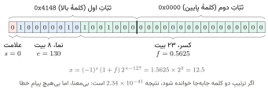
کلمهٔ وضعیت. بسیاری از تجهیزات وضعیتهای دودویی (روشن/خاموش، هشدار/عادی) را در بیتهای جداگانهٔ یک کلمه میگذارند تا ۱۶ پیام در یک ثبّات جا شود. برای خواندنِ بیتِ شمارهٔ \(k\)، کلمه را \(k\) خانه به راست میلغزانیم و با یک «و»ی بیتی فقط کمارزشترین بیت را نگه میداریم.
مثال 5.2 (خواندنِ کلمهٔ وضعیتِ یک توربین) پرسش. کلمهٔ وضعیتِ یک توربین عددِ ۳۷ است. با نقشهٔ بیتِ ساختگیِ زیر (بیتِ ۰ «شبکه سالم»، ۱ «حالتِ محلی»، ۲ «سمتگردانی فعال»، ۳ «هشدارِ یخزدگی»، ۴ «خطای گام»، ۵ «توان محدود») بگویید کدام پیامها فعالاند.
پاسخ.
status word 37 = 0x0025 = 0000000000100101
bits set: 0 (grid OK), 2 (yaw active), 5 (power limited)
test one bit: (word >> 3) & 1 = 0 -> icing alarm off
the meaning of each bit comes ONLY from the device's register map (fictional
here)تفسیر. ۳۷ برابر با \(32 + 4 + 1\) است: بیتهای ۰، ۲ و ۵. یعنی توربین به شبکه وصل است، در حالِ چرخیدن به سوی باد است و توانش محدود شده؛ هشدارِ یخزدگی خاموش است. اگر سازنده نقشهٔ بیت را در نسخهٔ تازهٔ نرمافزارِ کنترلکننده عوض کند و سامانهٔ پایش بهروز نشود، همین عدد پیامهای دیگری را نشان میدهد؛ برای همین نسخهٔ نقشهٔ ثبّاتها جزئی از اطلاعاتِ پیکربندیِ دارایی است (بخش 5.6.3).
5.2.2 شمارندهها و سرریز
شمارندهٔ انرژی عددی است که فقط زیاد میشود: هر کیلوواتساعتِ تولید یک واحد به آن میافزاید. انرژیِ یک بازه از تفاضلِ دو خوانش به دست میآید. اما هر شمارنده بیتهای محدودی دارد و وقتی به بیشینه برسد، مانندِ کیلومترشمارِ مکانیکیِ خودرو، به صفر برمیگردد. اگر این سرریز را ندانیم، تفاضل منفی و بزرگ میشود.
مثال 5.3 (سرریزِ شمارندهٔ انرژی) پرسش. شمارندهٔ انرژیِ یک توربینِ 5 MW بیعلامت و ۳۲ بیتی و بر حسبِ واتساعت است. با ضریبِ ظرفیتِ 0.366 (فصلِ ۱) چند روز طول میکشد تا سرریز کند؟ خوانشِ پیش و پس از یک ساعت 4 294 000 000 Wh و 1 032 704 Wh است؛ انرژیِ آن ساعت چقدر است؟ (مقادیر ساختگی)
پاسخ.
unsigned 32-bit counter in Wh: largest value 4,294,967,295 Wh = 4,295 MWh
a 5 MW turbine at capacity factor 0.366 fills it in 98 days
reading before 4,294,000,000 Wh, after 1,032,704 Wh: naive difference
-4,292,967,296 Wh
corrected for one wrap: 2,000,000 Wh = 2.000 MWh
plausible? one hour at 5 MW is at most 5.000 MWh: yesتفسیر. شمارندهای که «هرگز پر نمیشود» در عمل هر سه ماه یک بار پر میشود. قاعدهٔ درست: اگر تفاضل منفی بود، \(2^{32}\) را بیفزایید، و سپس با بیشینهٔ ممکن بسنجید (یک ساعت در 5 MW حداکثر 5 MWh است). وارسیِ دوم مهم است، چون تفاضلِ منفی ممکن است از عوض شدنِ شمارنده یا بازنشانیِ دستی هم باشد که اصلاحش با افزودنِ \(2^{32}\) غلط است.
5.2.3 عددِ ممیزِ شناور و گرد کردن
شهود. عددهای حقیقی بینهایت رقم دارند اما رایانه برای هر عدد فقط ۳۲ یا ۶۴ بیت جا دارد. راهحلِ استاندارد، که IEEE 754-2019 آن را تعریف میکند، همان نمادِ علمی است: یک علامت، یک نما (توانِ دو) و یک کسر (رقمهای معنادار)، مانند \(1.5625 \times 2^{3}\) در شکل 5.1:
\[ x = (-1)^{s}\,(1 + f)\,2^{\,e - 127} \tag{5.3}\]
که در آن \(s\) بیتِ علامت، \(e\) نمای ذخیرهشده و \(f\) کسر است (این سه نماد فقط در این درس به این معنا هستند). چون تعدادِ بیتهای کسر ثابت است، دقتِ نسبی ثابت است نه دقتِ مطلق: فاصلهٔ دو عددِ متوالیِ قابلِ نمایش برای عددهای بزرگ بزرگ میشود. این فاصلهٔ نسبی، که اپسیلونِ ماشین نام دارد، برای قالبِ ۳۲ بیتی \(2^{-23} \approx 1.2 \times 10^{-7}\) (حدودِ هفت رقمِ معنادار) و برای قالبِ ۶۴ بیتی \(2^{-52} \approx 2.2 \times 10^{-16}\) (حدودِ شانزده رقم) است.
پیامدهای عملی:
- عددهایی مانندِ 0.1 در دودویی دقیق نمایش داده نمیشوند (مانندِ یکسوم در دهدهی)، پس \(0.1 + 0.2\) دقیقاً 0.3 نیست. دو عددِ ممیزِ شناور را هرگز با «برابر است» مقایسه نکنید؛ بپرسید «آیا در حدِ رواداری نزدیکاند؟».
- در جمعِ هزاران عددِ کوچک با یک جمعِ بزرگ، رقمهای کمارزشِ عددهای کوچک گم میشوند.
- تفاضلِ دو عددِ بزرگ و نزدیک به هم (مثلاً دو خوانشِ شمارنده) فقط چند رقمِ معنادار دارد: حذفِ فاجعهبار.
مثال 5.4 (انرژیِ یک سال در ۳۲ و ۶۴ بیت) پرسش. (۱) فاصلهٔ عددهای ۳۲ بیتی در نزدیکیِ صادراتِ سالانهٔ نیروگاهِ P بر حسبِ واتساعت چقدر است؟ (۲) انرژیِ یک توربینِ 5 MW را با جمعِ ۵۲۵۶۰ افزایشِ دهدقیقهای یک بار در ۶۴ بیت و یک بار در ۳۲ بیت حساب کنید. (۳) تفاضلِ دو خوانشِ بزرگِ شمارندهٔ کیلوواتساعت را در ۳۲ بیت حساب کنید.
پاسخ.
0.1 + 0.2 = 0.30000000000000004; equal to 0.3? False; math.isclose: True
spacing of float32 numbers near 2.898e+11 Wh: 32,768 Wh
near 1 000 000: 0.0625; float64 near 2.898e+11: 6.10e-05 Wh
a year of 10-minute energy increments of 5 MW (52 560 additions):
float64 sum 43,800.000 MWh; float32 running sum 43,786.195 MWh; error -0.032
%
difference of two large meter readings in float32: 256.0 kWh (true 245.4)تفسیر. در ۳۲ بیت، کوچکترین گامِ نزدیکِ 290 GWh حدودِ 33 kWh است: صادراتِ سالانه را میتوان نگه داشت، اما افزودنِ یک افزایشِ کوچک به آن خطای چشمگیر میسازد. جمعِ ۳۲ بیتیِ یک سال 0.03 % خطا دارد که برای صورتحسابِ فروشِ انرژی پذیرفتنی نیست، و تفاضلِ دو خوانشِ بزرگ از 245.4 kWh به 256 kWh رسیده است: خطای 4 %. قاعده: محاسبه را در ۶۴ بیت انجام دهید، شمارندهها را عددِ صحیح نگه دارید، و اگر دستگاهی دادهٔ ۳۲ بیتی میدهد، آن را پیش از هر جمع و تفاضل به ۶۴ بیت ببرید. ۳۲ بیت برای نمایش یک مقدارِ لحظهای کافی است، نه برای انباشت.
گرد کردن. گرد کردن یک تصمیمِ مهندسی است که باید در جای درست گرفته شود: در پایان، نه در میانهٔ محاسبه. دو نکتهٔ کمتر شناختهشده: پایتون نیمهها را به نزدیکترین زوج گرد میکند (تا انباشتِ خطا در یک جهت نباشد)، و قالببندیِ یک عدد برای چاپ، مقدارِ ذخیرهشده را عوض نمیکند. برای پول، که باید تا یکصدم دقیق باشد، از حسابِ دهدهی استفاده میشود.
مثال 5.5 (گرد کردن، جمع و پول) پرسش. ده بار 0.1 را با هم جمع کنید (با حلقه، با تابعِ جمعِ پایتون و با جمعِ جبرانی)، سپس همین کار را با حسابِ دهدهی انجام دهید. 2.5 و 3.5 چطور گرد میشوند؟ آیا چاپِ 2/3 با دو رقم مقدارِ آن را تغییر میدهد؟
پاسخ.
adding 0.1 ten times in binary floating point: 0.9999999999999999
sum([0.1] * 10) = 1.0 (Python 3.12+ compensates); math.fsum: 1.0
ten times Decimal('0.1'): 1.0 (decimal arithmetic for money)
Python round(2.5) = 2, round(3.5) = 4 (ties go to even)
formatting is not rounding the stored value: f'{2/3:.2f}' = 0.67, the value
stays 0.6666666666666666تفسیر. حلقهٔ ساده 0.9999999999999999 میدهد؛ نسخههای تازهٔ پایتون در تابعِ جمع خطای گرد کردن را جبران میکنند و 1.0 میدهند. این تفاوتِ کوچک به ما یادآوری میکند که نتیجهٔ عددی به نسخهٔ نرمافزار وابسته است و باید نسخه را همراهِ نتیجه ثبت کرد (بخش 5.3.15.7). در صورتحسابها، قراردادها یا گزارشهای مالی، قاعدهٔ گرد کردن (تا چه رقمی، به کدام سو، در کدام مرحله) باید نوشته شود؛ دو نرمافزار با قاعدههای متفاوت جمعهای متفاوتی میدهند.
خطاهای این درس هیچکدام برنامه را متوقف نمیکنند: عددِ علامتدار که بیعلامت خوانده شود، شمارندهای که سرریز کند، جمعِ ۳۲ بیتی یا گرد کردنِ زودهنگام. فقط وارسیِ معقول بودن آنها را آشکار میکند: بازهٔ مجاز، موازنهٔ انرژی، مقایسه با یک منبعِ مستقل.
- عددِ 0x1F4 را به دهدهی بنویسید و بگویید چند بیت لازم دارد.
- کلمهٔ ۱۶ بیتیِ 0x8000 اگر علامتدار خوانده شود چه عددی است؟
- اگر توانِ اکتیو در یک ثبّات با ضریبِ «یک دهمِ کیلووات» ذخیره شده باشد، عددِ 4321 چند مگاوات است؟
- شمارندهٔ ۱۶ بیتیِ «ده کیلوواتساعت» برای یک توربینِ 5 MW در ضریبِ ظرفیتِ 0.37 چند روزه سرریز میکند؟
- چرا مقایسهٔ «اگر توان برابرِ 50.0 است» برای تشخیصِ رسیدن به سقفِ اینورتر خطرناک است؟ چه چیزی به جایش بنویسید؟
- حدودِ چند رقمِ معنادار در قالبِ ۳۲ بیتی نگه داشته میشود؟ در ۶۴ بیتی؟
- چرا جمعِ انرژی را نباید با عددهای گردشده انجام داد؟
- در مثال 5.2 اگر کلمهٔ وضعیت 45 باشد، کدام پیام اضافه شده است؟
5.2.4 پرونده، پوشه و نامگذاری
پرونده دنبالهای از بایتهاست با یک نام. سیستمعامل نمیداند این بایتها چه معنایی دارند؛ پسوندِ نام (مانندِ .csv) فقط یک وعده است، نه ضمانت. پروندهها دو گروهاند: متنی، که بایتهایشان با یک کدگذاری به نویسه تبدیل میشوند و با هر ویرایشگری خوانده میشوند، و دودویی، که فقط برنامهٔ سازندهشان آنها را میفهمد. مسیر نشانیِ پرونده در درختِ پوشههاست؛ مسیرِ نسبی از پوشهٔ جاری شروع میشود و مسیرِ مطلق از ریشه. برنامهای که با مسیرِ مطلقِ رایانهٔ نویسندهاش نوشته شده باشد روی رایانهٔ دیگری اجرا نمیشود؛ برنامههای این کتاب همه مسیرِ نسبی به ریشهٔ پروژه دارند.
ساختارِ پوشهٔ یک کارِ تحلیلی نصفِ مستندسازیِ آن است. قراردادِ زیر برای هر کارِ دادهایِ نیروگاهِ P به کار میرود و با توصیههای رایج برای کارهای علمی همسوست (Wilson و همکاران 2017):
| پوشه | محتوا | قاعده |
|---|---|---|
| raw/ | پروندههای خام، همانطور که رسیدهاند | فقطخواندنی؛ هرگز ویرایش نمیشوند؛ هشِ هر پرونده ثبت میشود |
| interim/ | خروجیِ مراحلِ میانی | هر چیزِ اینجا را برنامه دوباره میسازد؛ میشود پاکش کرد |
| processed/ | دادهٔ پاک و اعتبارسنجیشده | همراه با گزارشِ اعتبارسنجی |
| output/ | جدول، نمودار و گزارش | نامِ هر پرونده شمارهٔ مدرک و بازنگری دارد |
| code/ | برنامهها و آزمونها | در کنترلِ نسخه (بخش 5.4.14) |
| docs/ | فرهنگِ داده، یادداشتِ روش | با تاریخ و نویسنده |
نامگذاری. نامِ خوب از نامِ پرونده چیزی را میگوید که بدونِ باز کردن لازم است: چه، از کجا، چه زمانی، کدام نسخه. تاریخ به شکلِ 2023-04-03 (سال-ماه-روز) بنویسید تا مرتبسازیِ الفبایی همان مرتبسازیِ زمانی باشد؛ فاصله، نویسههای ویژه و «نهایی، نهایی۲، نهاییِواقعی» نگذارید. نسخه را یا با کنترلِ نسخه نگه دارید یا با شمارهٔ بازنگریِ مدرک (بخش 2.5.3)، نه با پسوندهای سلیقهای. یک قاعدهٔ ساده بسیاری از خطاها را میگیرد: دادهٔ خام را هرگز در جا ویرایش نکنید؛ هر اصلاح یک برنامه است که خام را میخواند و نسخهٔ پاک را جای دیگر مینویسد. اینطور میتوان هر اصلاح را بازبینی، تکرار یا لغو کرد.
مثال 5.6 (پوشهٔ دادهٔ خامِ بستهٔ دادهٔ نیروگاهِ P) پرسش. انتشارِ 1.1.0 بستهٔ داده (بخش 5.7) یک پوشهٔ raw/ با یک پروندهٔ دهدقیقهایِ دکلِ هواشناسی، یک کلیدِ ایرادها و یک بروندادِ سامانهٔ پایشِ خورشیدی دارد. سطرهای سرِ پروندهٔ دکل را بخوانید و هشِ آن را ثبت کنید.
پاسخ.
header block of the raw logger file (read, do not guess):
# logger PLP-MET-01 (synthetic), Plant P Reference Data Pack 1.1.0
# interval 10 min; each time stamp marks the END of its interval
# clock: local standard time UTC+04:00 (offset not written)
# units: ws m/s; wd deg from north; t_air degC; p_air hPa; ghi W/m2
SHA-256 of the raw file: 124901d16cc4ae682f201ad336063257...
provenance: logger file -> validated 10-min table -> hourly table -> report;
every step records its input hash, software version and settingsتفسیر. چهار سطرِ اولِ پرونده، که با نشانهٔ # شروع میشوند، فرادادهٔ آناند: کدام دستگاه، کدام بازه، کدام ساعت، کدام یکاها. این سطرها را باید خواند، نه حدس زد: از آنها میفهمیم که مُهرِ زمان پایانِ بازه است و اختلافِ ساعت نوشته نشده، دو نکتهای که اگر نادیده گرفته شوند هر میانگینِ ساعتی را یک ساعت جابهجا میکنند (بخش 5.2.8). هشِ SHA-256 (فصلِ ۲) اثرِ انگشتِ پرونده است: اگر حتی یک بایت عوض شود، هش کاملاً عوض میشود.
5.2.5 کدگذاریِ متن و نوشتهٔ فارسی
شهود. متن هم در نهایت بایت است. یونیکد به هر نویسهٔ هر خطِ جهان یک شمارهٔ یکتا میدهد که نقطهٔ کد نام دارد (مثلاً «ب» نقطهٔ U+0628 است). کدگذاری قاعدهای است که نقطههای کد را به بایت تبدیل میکند. رایجترین کدگذاریِ امروز UTF-8 است (RFC 3629) که هر نویسه را با یک تا چهار بایت مینویسد: نویسههای لاتینِ پایه یک بایت، حرفهای فارسی دو بایت، و بسیاری از نمادها سه بایت. پیش از یونیکد هر زبان جدولِ کدِ یکبایتیِ خودش را داشت؛ برای خطِ عربی و فارسی در ویندوز جدولِ Windows-1256 رایج بود و هنوز در پروندههای قدیمی دیده میشود.
اگر بایتها با کدگذاریِ نادرست خوانده شوند، نویسههای درهم پدید میآید: متنِ فارسیِ UTF-8 که با یک جدولِ اروپایی خوانده شود، به رشتهای از حرفهای لاتینِ عجیب تبدیل میشود (شکل 5.2). این خطا گاهی پیامِ خطا نمیدهد و فقط نامها و توضیحها را خراب میکند؛ و اگر پرونده پس از آن ذخیره شود، دادهٔ اصلی برای همیشه از دست میرود.
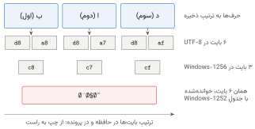
دامهای ویژهٔ متنِ فارسی. کسی که با دادهٔ فارسی کار میکند، چند دامِ اضافه دارد که در متون انگلیسی کمتر گفته میشود:
- دو «ی» و دو «ک». حرفِ «ی»ِ فارسی (U+06CC) و
يِ عربی (U+064A) در بیشترِ قلمها شبیهاند اما دو نویسهٔ متفاوتاند؛ همینطور «ک» (U+06A9) وك(U+0643). صفحهکلیدهای گوناگون یکی از این دو را مینویسند، و جدولِ کدِ قدیمیِ Windows-1256 اصلاً «ی»ِ فارسی را ندارد (فقطيِ عربی را دارد)، پس پروندههایی که از آن دوره ماندهاند حرفِ عربی دارند؛ در نتیجه جستوجوی «سیستم» نامی را که باينوشته شده پیدا نمیکند و دو رکوردِ یکسان دو رکورد میشوند. - رقمهای فارسی. «۱۲۳» با «123» نویسههای متفاوتی دارند. پایتون هر دو را عدد میخواند، اما بسیاری از برنامهها رقمهای فارسی را متن میدانند و ستون را «غیرِ عددی» میکنند.
- نیمفاصله. نیمفاصله (U+200C) نویسهای ناپیداست؛ «میشود» با نیمفاصله و «میشود» بیآن برای رایانه دو واژهٔ متفاوتاند.
- شکلهای ترکیبی. برخی نویسهها را میتوان به دو شکل نوشت (یک نقطهٔ کدِ ترکیبی یا حرف بهاضافهٔ نشانه). یکسانسازی (به شکلِ استانداردِ NFC) پیش از مقایسه این تفاوت را برمیدارد.
مثال 5.7 (بایتها، حرفها و یکسانسازی) پرسش. واژهٔ «باد» در UTF-8 و Windows-1256 چند بایت است؟ اگر بایتهای UTF-8 با جدولِ اروپایی خوانده شوند چه دیده میشود؟ پایتون با رقمهای فارسی چه میکند؟ آیا «سیستم» با دو «ی»ِ متفاوت برابر است؟
پاسخ.
the word 'wind' (3 letters): UTF-8 6 bytes d8 a8 d8 a7 d8 af; Windows-1256 3
bytes c8 c7 cf
UTF-8 bytes read as Windows-1252 give 6 Latin-1 characters
U+00D8 U+00A8 U+00D8 U+00A7 U+00D8 U+00AF (mojibake, see the figure)
UTF-8 byte-order mark: ef bb bf; Latin 'A' is 1 byte (41), the euro sign 3
bytes
Windows-1256 has Arabic yeh U+064A but not Persian yeh: missing U+06CC
(old Persian files therefore store the Arabic letter)
Persian digits one to four (U+06F1..U+06F4): Python int() gives 1234;
many other tools give an error or text
Persian yeh U+06CC and Arabic yeh U+064A look alike:
'system' typed both ways equal? False; after normalising: True
the word mi-shavad written with a zero-width non-joiner (U+200C) has 6 code
points: 5 letters + 1 invisible character
'e' + combining accent: 2 code points; NFC form: 1 code pointتفسیر. برای ستونهای متنیِ فارسی در فهرستِ داراییها، نامهای مکان یا شرحِ خرابیها، یک تابعِ یکسانسازی پیش از ذخیره و پیش از هر مقایسه لازم است: شکلِ NFC، ي و كِ عربی به «ی» و «ک»ِ فارسی، و قاعدهای روشن دربارهٔ رقمها و نیمفاصله. این تابع در کتابخانهٔ همراه هست و آزمایشگاهِ دارایی (بخش 5.6.5) نشان میدهد که یک رکوردِ فهرست با همین خطا وارد شده است.
قاعدههای کدگذاری. (۱) همهٔ پروندههای متنیِ پروژه را با UTF-8 و بدونِ نشانهٔ ترتیبِ بایت بنویسید؛ این نشانه سه بایتِ EF BB BF در آغازِ پرونده است که برخی برنامهها میگذارند و برخی دیگر آن را جزئی از نامِ ستونِ اول میخوانند. (۲) هنگامِ باز کردنِ پرونده، کدگذاری را صریح بنویسید؛ پیشفرضِ سیستمعامل در رایانههای گوناگون فرق میکند. (۳) اگر پروندهای از سامانهٔ دیگری میرسد، کدگذاریاش را در فرهنگِ داده ثبت کنید. خوانندهٔ پروندهٔ کتابخانهٔ همراه، پروندهای را که با نشانهٔ ترتیبِ بایت شروع شود رد میکند تا این مسئله بیصدا نگذرد.
5.2.6 دادهٔ جدولی و پروندههای CSV
بیشترِ دادههای مهندسی جدولیاند: سطرها و ستونها. شکلِ «مرتب» برای جدول قاعدهای ساده دارد (Wickham 2014): هر سطر یک مشاهده، هر ستون یک متغیر، هر جدول یک نوع موجودیت. سریِ زمانیِ ساعتیِ نیروگاهِ P چنین است: هر سطر یک ساعت و هر ستون یک کمیت با یکایش در نام (ghi_wm2، ws_100m_ms). در شکلِ پهن، مقدارهای یک متغیر در چند ستون پخش میشوند (مثلاً یک ستون برای هر ماه)؛ این شکل برای نمایش خوب است ولی برای محاسبه و پالایش نه. در شکلِ بلند، هر اندازهگیری یک سطر است با ستونهای «زمان، حسگر، مقدار». تبدیل میانِ این دو شکل یکی از کارهای روزمرهٔ تحلیلِ داده است.
قالبِ CSV سادهترین قالبِ تبادلِ جدول است: متن، یک سطر برای هر رکورد، و ویرگول میانِ میدانها. سند RFC 4180 این قالب را توصیف کرده است (سندی اطلاعاتی، نه استانداردِ الزامی): میدانی که ویرگول، گیومه یا خطِ تازه دارد باید میانِ گیومه بیاید و گیومهٔ درونی دو بار نوشته شود. سادگیِ ظاهری فریبنده است:
- جداکننده و ممیز. در برخی زبانها و تنظیماتِ منطقهای، ممیزِ اعشار ویرگول است، پس جداکنندهٔ میدانها نقطهویرگول میشود: 12345,6 یعنی دوازده هزار و سیصد و چهل و پنج و شش دهم. بروندادِ سامانهٔ پایشِ خورشیدیِ بستهٔ داده عمداً چنین است.
- تبدیلِ خودکار. برگههای گسترده هنگامِ باز کردنِ CSV حدس میزنند: صفرهای آغازینِ «۰۰۷» را میاندازند، شمارهٔ سریالِ نوزدهرقمی را به عددِ ممیزِ شناور با پانزده رقمِ معنادار میبرند، و رشتههایی مثلِ 1-2 یا MAR1 را تاریخ میکنند. پژوهشی دربارهٔ پیوستهای مقالههای زیستشناسی نشان داد که حدودِ یکپنجمِ مقالههایی که فهرستِ ژن در پروندههای برگهٔ گسترده داشتند، نامهایی دارند که خودکار به تاریخ یا عدد تبدیل شدهاند (Ziemann و همکاران 2016). برچسبهای تجهیزات و شمارهسریالها دقیقاً در معرضِ همین خطرند.
- پایانِ سطر و کدگذاری. پایانِ سطر در سیستمعاملهای گوناگون یک یا دو نویسه است و کدگذاری در خودِ پرونده نوشته نمیشود؛ هر دو باید در فرهنگِ داده بیایند.
مثال 5.8 (چرا شکافتن با ویرگول کافی نیست) پرسش. جدولِ سهسطریِ زیر را یک بار با شکافتنِ ساده در محلِ ویرگول و یک بار با خوانندهٔ استانداردِ CSV بخوانید. سپس یک سطرِ نقطهویرگولی با ممیزِ ویرگولی و یک شمارهٔ سریالِ نوزدهرقمی را آزمایش کنید.
tag,description,value
PLP-TRF-01,"Transformer, 120 MVA",120
PLP-SWG-01,"Panel ""A"" line-up",33پاسخ.
naive split(',') of a quoted field:
row 2 -> 4 pieces ['PLP-TRF-01', '"Transformer', ' 120 MVA"', '120']
csv.reader (quotes, doubled quotes, commas inside fields):
row 2 -> ['PLP-TRF-01', 'Transformer, 120 MVA', '120']
row 3 -> ['PLP-SWG-01', 'Panel "A" line-up', '33']
semicolon file with decimal comma: ['2023-04-03T08:00:00Z', '12345,6'] ->
float after replace: 12345.6
a 19-digit serial number stored as a float: 1234567890123456768 (last digits
lost; floats carry 15 to 17 significant digits)
leading zeros of '007' are lost when the column is read as a number: 7
values such as '1-2', '3E5' or 'MAR1' may be converted to dates or numbers by
spreadsheet programs; import such columns as textتفسیر. شکافتنِ ساده سطرِ دوم را چهار تکه میکند و همهٔ ستونهای بعدی یک خانه جابهجا میشوند؛ اگر برنامه ستونِ سوم را «توان» بداند، رشتهٔ 120 MVA را با یک گیومه میگیرد یا خطا میدهد. هرگز CSV را با شکافتنِ دستی نخوانید؛ از خوانندهٔ استانداردِ زبان استفاده کنید و ستونهای شناسه (برچسب، سریال، کد) را بهصورتِ متن وارد کنید.
کدام قالب برای چه کاری؟ هیچ قالبی برای همهچیز بهترین نیست. جدول 5.2 قالبهای رایج را در کارِ نیروگاه مقایسه میکند.
| قالب | قوت | ضعف | کاربرد در نیروگاهِ P |
|---|---|---|---|
| CSV | ساده، متنی، همهجا خوانا | بینوع، بییکا، تبدیلِ خودکار | سریهای زمانی، فهرستها |
| JSON (RFC 8259) | ساختارِ تودرتو، نوعِ عدد و متن | برای جدولهای بزرگ پرحجم | نتیجهها، پیکربندیِ ماشینی |
| YAML | خوانا برای انسان، توضیحپذیر | تفسیرِ خودکارِ نوع («1.10» عدد میشود) | پیکربندی و کارتِ سناریو |
| برگهٔ گسترده | ورود و نمایشِ آسان | فرمولِ پنهان، تبدیلِ خودکار | ورودِ دستی، گزارشِ کوچک |
| پایگاهِ دادهٔ رابطهای | کلید، قید، پرسوجو، تراکنش | نیازِ طراحی و نگهداری | فهرستِ دارایی، سوابقِ آزمون |
| قالبهای ستونیِ دودویی | فشرده و سریع برای حجمِ زیاد | نیازِ کتابخانه | سالها دادهٔ دهدقیقهای |
| نمایشِ ثابت و امضاشده | داده نیست، برای تحلیل نامناسب | گزارش و گواهیِ صادرشده |
- چرا پوشهٔ raw/ باید فقطخواندنی باشد؟ اگر یک مقدارِ خام آشکارا غلط باشد، چه میکنید؟
- نامِ «گزارش نهایی جدید (۲)» با پسوندِ .xlsx چه چیزهایی را نمیگوید؟ نامی بهتر پیشنهاد کنید.
- واژهٔ «نیرو» در UTF-8 چند بایت است؟
- نشانهٔ ترتیبِ بایت چیست و چرا ممکن است نامِ ستونِ اول را خراب کند؟
- دو رکوردِ «بلوک خورشیدی ۳» که یکی با
يوكِ عربی تایپ شده در یک فهرست چه مشکلی میسازند؟ چطور پیدایشان میکنید؟ - جدولی با یک ستون برای هر ماه را به شکلِ بلند بنویسید (نامِ ستونها).
- چرا ستونِ شمارهٔ سریال باید بهصورتِ متن خوانده شود؟
- در پروندهٔ نقطهویرگولی، مقدارِ «۱٬۲۳۴,۵» احتمالاً چه عددی است؟ چه چیزی لازم است تا مطمئن شوید؟
- برای پیکربندیِ یک اجرا YAML بهتر است یا CSV؟ چرا؟
5.2.7 مُهرِ زمان و منطقهٔ زمانی
شهود. «ساعتِ دوازده» تا وقتی نگوییم کجا و کدام روز، یک لحظهٔ معین نیست. زمانِ مرجعِ جهانی زمانِ هماهنگشدهٔ جهانی (UTC) است و هر منطقه اختلافی نسبت به آن دارد. نیروگاهِ P ساعتِ ثابتِ +04:00 دارد (A-003)؛ یعنی ظهرِ نیروگاه، ساعتِ هشتِ صبحِ UTC است. استانداردِ ISO 8601-1:2019 شکلی یکتا برای نوشتنِ لحظه پیشنهاد میکند: سال، ماه، روز، حرفِ T، ساعت، و اختلاف از UTC (یا حرفِ Z برای خودِ UTC). مُهری مانندِ 2023-06-21T12:00:00+04:00 در هر کشوری یک معنا دارد؛ مُهرِ «۲۱ ژوئن، ۱۲» نه.
منطقهٔ زمانی بیش از یک اختلافِ ثابت است: قاعدهای است که میگوید در هر تاریخ چه اختلافی برقرار است، از جمله ساعتِ تابستانی و تغییرهای قانونیِ گذشته. پایگاهِ دادهٔ منطقههای زمانیِ IANA این قاعدهها را برای هر منطقه با نامی مانندِ Asia/Tehran نگه میدارد و زبانهای برنامهنویسی از آن استفاده میکنند. ساعتِ رسمیِ هر کشور را قانونِ همان کشور تعیین میکند و این پایگاه با کمی تأخیر از آن پیروی میکند؛ پس برای کارِ رسمی، قاعدهٔ جاری را از منبعِ رسمیِ همان کشور وارسی کنید (فصلهای ۵۵ تا ۵۷).
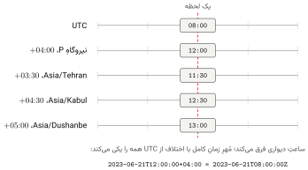
مثال 5.9 (ظهرِ نیروگاهِ P در سه کشور) پرسش. ظهرِ ۲۱ ژوئنِ ۲۰۲۳ در نیروگاهِ P را به UTC و به ساعتِ منطقههای Asia/Tehran، Asia/Kabul و Asia/Dushanbe ببرید. پایگاهِ داده برای ژانویه و ژوئیهٔ ۲۰۲۱ و ۲۰۲۳ چه اختلافهایی میدهد؟
پاسخ.
Plant P noon: 2023-06-21T12:00:00+04:00 = 2023-06-21T08:00:00+00:00
in Asia/Tehran 2023-06-21T11:30:00+03:30
in Asia/Kabul 2023-06-21T12:30:00+04:30
in Asia/Dushanbe 2023-06-21T13:00:00+05:00
IANA time-zone database 2025b (Python tzdata package):
Asia/Tehran 2021: Jan +3.5 h, Jul +4.5 h; 2023: Jan +3.5 h, Jul +3.5 h
Asia/Kabul 2021: Jan +4.5 h, Jul +4.5 h; 2023: Jan +4.5 h, Jul +4.5 h
Asia/Dushanbe 2021: Jan +5.0 h, Jul +5.0 h; 2023: Jan +5.0 h, Jul +5.0 h
(legal time is set by national law; the database follows it with a delay)تفسیر. بنا بر این نسخهٔ پایگاه، Asia/Tehran در ۲۰۲۱ ساعتِ تابستانی داشت و در ۲۰۲۳ نداشت؛ پس دادهٔ چندسالهای که با «ساعتِ محلی» ذخیره شده، در سالهای گوناگون قاعدهٔ متفاوتی دارد. اینجا پایگاهِ داده را گزارش میکنیم، نه ادعای حقوقی دربارهٔ ساعتِ رسمی را. نتیجهٔ مهندسی روشن است: هر سریِ زمانی را با اختلافِ صریح یا در UTC ذخیره کنید، و تبدیل به ساعتِ محلی را فقط برای نمایش انجام دهید.
ساعتِ تابستانی. در منطقهای با ساعتِ تابستانی، یک روز در سال ۲۳ ساعت دارد و یک روز ۲۵ ساعت. در روزِ کوتاه، یک ساعتِ محلی وجود ندارد و در روزِ بلند، یک ساعت دو بار تکرار میشود. سامانهای که مُهرِ زمانِ محلی را بدونِ اختلاف ذخیره کند، در بهار یک ساعت کم و در پاییز دو رکورد با یک مُهر دارد: یکی از آنها روی دیگری نوشته میشود یا هر دو با هم جمع میشوند.
مثال 5.10 (روزهای ۲۳ و ۲۵ ساعته) پرسش. برای منطقهای با ساعتِ تابستانی (Europe/Berlin) طولِ سه روزِ محلیِ ۲۶ مارس، ۲۹ اکتبر و ۱ ژوئنِ ۲۰۲۳ را بیابید. ساعتِ 02:30 در ۲۹ اکتبر به کدام لحظههای UTC اشاره میکند؟
پاسخ.
a zone with daylight saving (Europe/Berlin), length of three local days:
2023-03-26: 23 hours
2023-10-29: 25 hours
2023-06-01: 24 hours
02:30 on 2023-10-29 happens twice: fold=0 -> 00:30 UTC, fold=1 -> 01:30 UTC
a plant there that stores local clock times without offset loses one hour in
March and double-counts one in Octoberتفسیر. یک برنامهٔ جمعکنندهٔ انرژیِ روزانه که «۲۴ ساعت» را فرض کند، در این دو روز غلط است: در ۲۶ مارس یک ساعتِ ناموجود را صفر میگذارد و در ۲۹ اکتبر یک ساعت را گم یا دوبار حساب میکند. پایتون برای ساعتِ تکراری ویژگیِ fold را دارد که مشخص میکند منظور بارِ اولِ آن ساعت است یا بارِ دوم. آزمونِ این مرزها در بخش 5.4.10 آمده است. نیروگاهِ P ساعتِ تابستانی ندارد، اما بسیاری از بروندادهای تجهیزات، قراردادها و بازارها دارند.
5.2.8 قراردادِ بازه و برچسبِ زمان
بیشترِ دادههای نیروگاه مقدارِ لحظهای نیستند، بلکه میانگینِ یک بازهاند: تندیِ باد در ده دقیقه، انرژی در یک ساعت. چنین مقداری یک بازه دارد اما فقط یک برچسب، و این برچسب میتواند آغاز، پایان یا میانهٔ بازه باشد. بستهٔ دادهٔ نیروگاهِ P برچسبِ آغاز را به کار میبرد (A-025، فصلِ ۲)، اما پروندهٔ خامِ ثبتکنندهٔ دکل برچسبِ پایان دارد (A-089). شکل 5.4 نشان میدهد که مقدارِ برچسبخوردهٔ 15:00 در قراردادِ پایان، هنوز مالِ ساعتی است که از 14:00 آغاز شده است.
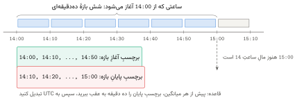
تجمیعِ ایمن از نظرِ زمان این مراحل را به ترتیب انجام میدهد: (۱) برچسب را به آغازِ بازه ببر؛ (۲) مُهر را با اختلافِ صریح بخوان و به UTC ببر؛ (۳) هر بازه را به ساعتی بسپار که آغازش در آن است؛ (۴) میانگین را فقط برای ساعتهایی بگیر که تعدادِ کافی مقدار دارند و تعداد را کنارِ میانگین نگه دار. تابعِ تجمیعِ کتابخانهٔ همراه، که در بخش 5.5.1 به کار میرود، همین را میکند و مُهرِ بیمنطقه را نمیپذیرد.
مثال 5.11 (یک ساعت جابهجایی چه هزینهای دارد؟) پرسش. صادراتِ ساعتیِ نیروگاهِ P (سناریوی S0، بستهٔ 1.1.0، مدلِ فصلِ ۵) را با تعرفهٔ ساختگیِ زماندارِ فصلِ ۱ (نود واحد از ۱۸ تا ۲۲ و چهل واحد در بقیهٔ ساعتها) قیمتگذاری کنید. اگر برچسبها یک ساعت دیر یا زود خوانده شوند، درآمد و توانِ ساعتیِ خورشیدی چقدر تغییر میکند؟
پاسخ.
Plant P export with the fictional time-of-use tariff of chapter 1 (S0, 1.1.0):
correct labels 13.20 million u/yr
shifted one hour later 13.24 (+0.3 %)
shifted one hour earlier 13.24 (+0.3 %)
the change is small and has the same sign both ways: it depends on the shape
of the profile, so the error of a wrong label cannot be guessed, only
avoided
hourly PV, correct vs one hour late: annual totals equal, hourly RMS
difference 4.8 MW = 22 % of the mean daylight power
mean irradiance peaks in the hour starting 11:00 (interval-start labels);
with interval-end labels the same hour is called 12:00تفسیر. جمعِ سالانه با جابهجایی تغییر نمیکند، اما هر ساعت غلط است: اختلافِ میانگینِ مربعیِ توانِ خورشیدی ۲۲ درصدِ میانگینِ توان در ساعتهای روشن است. پس هر کاری که به زمانبندی بستگی دارد، از قیمتگذاریِ زماندار و برنامهریزیِ باتری تا مقایسهٔ مدل با اندازهگیری و تشخیصِ کاهشِ تولید، با یک ساعت جابهجایی خراب میشود. علامتِ خطای درآمد هم قابلِ حدس نیست: در اینجا هر دو جهتِ جابهجایی درآمد را کمی بیشتر نشان دادهاند. خطایی که نه بزرگ است و نه جهتِ معلوم دارد، فقط با قرارداد و آزمون پیشگیری میشود، نه با تیزبینی.
5.2.9 نمونهبرداری و میانگینگیری
شهود. ثبتکنندهها کمیت را با آهنگِ نمونهبرداریِ معینی میخوانند (مثلاً هر ثانیه) و میانگین، انحرافِ معیار، کمینه و بیشینهٔ هر بازه را نگه میدارند. هر بار که داده را روی بازهٔ بلندتری میانگین میگیریم، تغییرپذیریِ درونِ بازه را دور میریزیم. برای کمیتی که با رابطهای خطی به خروجی وابسته است، این بیضرر است؛ اما توانِ باد با مکعبِ تندی تغییر میکند و برای هر تابعِ کوژ، میانگینِ تابع از تابعِ میانگین بزرگتر است:
\[ \overline{v^{3}} \;\ge\; \bar v^{\,3} \tag{5.4}\]
(نابرابریِ ینسن). پس انرژیای که از تندیِ میانگینِ یک بازهٔ بلند حساب شود کمتر از انرژیِ واقعی است. فصلِ ۳ قضیهٔ نمونهبرداری و تداخلِ بسامدی را آورده است؛ اینجا اثرِ عملیِ میانگینگیری را روی تولید میبینیم.
مثال 5.12 (انرژی از میانگینِ ساعتی، روزانه و سالانه) پرسش. انرژیِ ناخالصِ ۱۲ توربین (بیتلفات، منحنیِ توان در چگالیِ استاندارد) را یک بار از تندیهای ساعتیِ بستهٔ داده، یک بار از میانگینِ روزانه و یک بار از میانگینِ سالانه حساب کنید. نسبتِ \(\overline{v^{3}}/\bar v^{\,3}\) برای یک سال چقدر است؟
پاسخ.
gross energy of 12 turbines (no losses) from the same speeds averaged
differently:
hourly means 218.8 GWh
daily means 215.9 GWh (-1.3 %)
one annual mean 184.8 GWh (-15.6 %)
mean of v^3 / (mean v)^3 over the year: 1.80
averaging first hides the variability that the cubic power curve rewards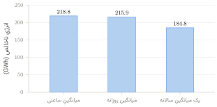
تفسیر. میانگینِ روزانه 1.3 % و میانگینِ سالانه 15.6 % کمتر از مقدارِ درست انرژی میدهد، و این بیآنکه هیچ عددی «غلط» باشد. کسی که فقط «تندیِ میانگینِ ساختگاه» را از جایی بگیرد و در منحنیِ توان بگذارد، این خطا را مرتکب شده است. به همین دلیل ارزیابیِ منبع از توزیعِ تندی یا سریِ زمانی استفاده میکند (فصلهای ۱۳ و ۱۵) و ثبتکنندهها انحرافِ معیارِ هر بازه را هم نگه میدارند. محدودیت: میانگینِ ساعتی هم تغییرپذیریِ درونِ ساعت را حذف کرده است؛ اثرِ آن برای منحنیِ توانِ هموار کوچک است، اما برای آشفتگی و بار مهم است (فصلِ ۱۱).
میانگینِ جهت. جهتِ باد کمیتی دورهای است: ۳۵۹ و ۱ درجه دو درجه از هم فاصله دارند، نه ۳۵۸ درجه. میانگینِ حسابیِ جهتها نزدیکِ شمال فاجعهبار است. روشِ درست، میانگین گرفتن از بردارهای یکه و بازگرداندنِ زاویهٔ برآیند است:
\[ \bar\theta = \operatorname{atan2}\!\Big(\sum_i \sin\theta_i,\ \sum_i \cos\theta_i\Big) \tag{5.5}\]
مثال 5.13 (میانگینِ چهار جهتِ نزدیکِ شمال) پرسش. میانگینِ جهتهای ۳۵۰، ۳۵۵، ۵ و ۱۰ درجه را به دو روش حساب کنید.
پاسخ.
directions [350.0, 355.0, 5.0, 10.0]: arithmetic mean 180.0 deg (points
south!)
vector mean 0.0 deg (north, as it should)تفسیر. میانگینِ حسابی بادِ شمالی را جنوبی میکند: خطایی ۱۸۰ درجهای در گلِ باد، در چیدمانِ توربینها (فصلِ ۱۴) و در تحلیلِ اثرِ دنباله. جهت را همیشه برداری میانگین بگیرید؛ اگر تندی هم در دسترس است، میتوان بردارها را با تندی وزن داد.
- مُهرِ 2023-04-03T14:10:00+04:00 را به UTC ببرید.
- چرا ذخیرهٔ زمان بهصورتِ «ساعتِ محلی بدونِ اختلاف» حتی در کشوری بدونِ ساعتِ تابستانیِ امروزی خطرناک است؟
- یک سریِ ساعتیِ «سالِ کامل» در منطقهای با ساعتِ تابستانی چند رکورد دارد اگر با ساعتِ محلیِ بیاختلاف ذخیره شده باشد؟
- مقدارِ دهدقیقهایِ برچسبخوردهٔ 00:00 با قراردادِ پایان، مالِ کدام روز است؟
- چرا تجمیعِ ساعتی باید تعدادِ مقدارهای هر ساعت را هم نگه دارد؟
- اگر \(v\) میانِ ۴ و ۱۰ متر بر ثانیه نوسان کند (نیمی از زمان هر کدام)، \(\overline{v^{3}}/\bar v^{\,3}\) چند است؟
- میانگینِ برداریِ جهتهای ۸۰ و ۱۰۰ درجه چیست؟ میانگینِ ۰ و ۱۸۰ چه مشکلی دارد؟
- چرا جابهجاییِ یک ساعته جمعِ سالانه را تغییر نمیدهد اما برنامهریزیِ باتری را خراب میکند؟
5.2.10 دادهٔ گمشده
شهود. هیچ ثبتکنندهای همیشه کار نمیکند: برق قطع میشود، حسگر یخ میزند، ارتباط میافتد، کسی پروندهای را جا میاندازد. دادهٔ گمشده به سه شکل دیده میشود: سطرِ نبوده (مُهرِ زمانی که اصلاً نیست)، خانهٔ خالی و مقدارِ نگهبان، یعنی عددی قراردادی مانندِ −9999 که «نداریم» را نشان میدهد. شکلِ سوم از همه خطرناکتر است، چون عدد به نظر میرسد و در میانگین وارد میشود. در محاسبه، نمادِ «نهعدد» (NaN) استانداردِ ممیزِ شناور برای «مقدار نداریم» است: هر حسابی با آن نتیجهٔ «نهعدد» میدهد و این خوب است، چون گمشدگی را تا آخر نشان میدهد.
پرسشِ اصلی آن نیست که «چند درصد گم شده» بلکه کدام مقدارها گم شدهاند. اگر گمشدگی تصادفی باشد، میانگینِ مقدارهای باقیمانده برآوردی نااریب است. اگر گمشدگی به خودِ مقدار یا به زمان وابسته باشد (برای نمونه ثبتکنندهٔ خورشیدی که در ظهرِ گرم داغ میکند و خاموش میشود، یا حسگرِ بادی که در بادِ شدید یخ میزند)، میانگینِ باقیمانده اریب است، هرقدر هم دادهٔ زیادی داشته باشیم. نرخِ بازیابیِ داده (نسبتِ مقدارهای معتبر به مقدارهای مورد انتظار) لازم است، اما کافی نیست.
مثال 5.14 (تابشِ سالانه از دادهٔ ناقص) پرسش. تابشِ سالانهٔ افقیِ نیروگاهِ P را از سریِ کامل حساب کنید. سپس چهار حالت را بیازمایید: ده درصد ساعتها تصادفی گم شوند؛ چهل درصدِ ساعتهای ۱۰ تا ۱۴ گم شوند؛ همان کمبودِ ظهر با میانگینِ همان ساعت در روزهای دیگر پر شود؛ و ثبتکنندهای که صفرهای شب را نمینویسد.
پاسخ.
annual GHI of the complete series: 1947.2 kWh/m2
10 % of hours missing at random, mean x 8760: 1940.4 (-0.3 %)
605 midday hours missing (10-14 h), mean x 8760: 1656.8 (-14.9 %)
filled with the mean of the same clock hour: 1949.9 (+0.1 %)
logger that drops zero values (nights): mean x 8760 = 3733.3 (+92 %)
data recovery with midday gaps: 93.1 % of hours (but 13.2 % of daylight hours)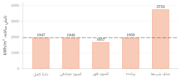
تفسیر. گمشدگیِ تصادفی تقریباً بیاثر است (−0.3 %)، اما کمبودِ ظهر با نرخِ بازیابیِ بالای ۹۳ درصد، تابش را 15 % کم میکند، چون درست پرتابشترین ساعتها گم شدهاند. پر کردن با میانگینِ همان ساعت خطا را به 0.1 % میرساند، اما مقدارِ پرشده اندازهگیری نیست و باید با پرچم نشان داده شود. ثبتکنندهای که صفرهای شب را نمینویسد، با «میانگین ضربِ ۸۷۶۰» تابش را نزدیکِ دو برابر نشان میدهد: «نبودِ رکورد» با «صفر» یکی نیست. قاعده: پیش از هر میانگین بپرسید کدام ساعتها گم شدهاند، و نرخِ بازیابی را جدا برای روز و شب و برای هر فصل گزارش کنید.
روشهای پر کردن. پرشدهها تخمیناند و باید علامت بخورند. روشهای رایج از ساده به پیچیده: درونیابیِ خطی برای شکافهای کوتاه در کمیتهای هموار (دما و فشار، نه تابش در روزِ ابری)؛ میانگینِ همان ساعت در روزهای مشابه؛ همبستگی با حسگرِ دیگرِ همان دکل یا ایستگاهِ نزدیک؛ و مدلهای فیزیکی. هرچه شکاف بلندتر و کمیت ناهموارتر، عدمِ قطعیتِ پرشده بیشتر است.
5.2.11 یکا در داده
فصلِ ۲ نشان داد که هر عدد بییکا بیمعناست. در داده، یکا معمولاً در نامِ ستون یا در فرهنگِ داده میآید و گاهی هیچجا. یکسانسازیِ یکا یعنی همهٔ ورودیها را پیش از هر محاسبه به یک دستگاهِ یکا (در این کتاب SI با پیشوندهای توافقی، A-026) ببریم و این تبدیل را یک بار و در یک جا انجام دهیم، نه در میانهٔ فرمولها.
لغزشهای رایجِ یکا ضریبی ثابت دارند: ده (هکتوپاسکال و کیلوپاسکال)، هزار (کیلو و مگا)، 3.6 (کیلومتر بر ساعت و متر بر ثانیه)، و تفاضلِ 273.15 (کلوین و سلسیوس). خوشبختانه بیشترِ کمیتهای نیروگاه بازهٔ فیزیکیِ تنگی دارند، پس یک آزمونِ بازه بیشترِ لغزشها را آشکار میکند: فشارِ هوا در ارتفاعِ ۱۲۰۰ متر حدودِ 880 hPa است، پس 87.9 به احتمالِ زیاد کیلوپاسکال است، و ضریبِ ظرفیتِ بزرگتر از یک غیرممکن است.
مثال 5.15 (یکسانسازی و یک لغزشِ هزار برابری) پرسش. چهار مقدار را با کمیتهای یکادارِ کتابخانهٔ همراه (فصلِ ۲) به یکای خواستهشده ببرید. سپس ضریبِ ظرفیتِ خورشیدی را یک بار با ستونِ انرژیای حساب کنید که بهاشتباه کیلوواتساعت فرض شده و یک بار درست.
پاسخ.
normalising units with the unit-aware quantities of chapter 2:
46.8 km/h = 13 m/s
87.9 kPa = 879 hPa
12345.6 kWh = 12.35 MWh
2.4 GWh = 2400 MWh
PV energy 97 300 in a column labelled 'MWh' but read as kWh x 1000: capacity
factor 222 (impossible)
read correctly: 0.222 (plausible for PV)
range checks catch slips of 10, 1000 or 3.6 when the plausible band is narrowتفسیر. کمیتِ یکادار هر تبدیل را با بُعد وارسی میکند و اجازه نمیدهد مگاوات با مگاواتساعت جمع شود. لغزشِ هزار برابری اینجا ضریبِ ظرفیتِ 222 ساخت که بیدرنگ دیده میشود؛ اما لغزشِ ده برابری در فشار، که چگالیِ هوا را ده برابر کم میکند، در یک جدولِ بزرگ ممکن است دیده نشود. هر ستون را با بازهٔ فیزیکیاش بسنجید و این بازهها را در فرهنگِ داده بنویسید.
5.2.12 فراداده، فرهنگِ داده و پیشینه
فراداده «داده دربارهٔ داده» است: هر چیزی که برای فهمیدن و دوباره به کار بردنِ داده لازم است اما در خودِ عددها نیست. برای یک حسگر: نوع، شمارهٔ سریال، ارتفاع، جهتِ بازو، تاریخِ کالیبراسیون و عدمِ قطعیت؛ برای یک پرونده: منبع، کدگذاری، قراردادِ زمان و بازه، یکاها و نسخه. فرهنگِ داده جدولی است که برای هر ستونِ هر پرونده، یکا، معنا، بازهٔ معتبر و وضعیت را مینویسد. بستهٔ دادهٔ نیروگاهِ P فرهنگی ۲۵ سطری دارد؛ چهار سطرِ آن چنین است:
data dictionary of the hourly file (data pack 1.1.0), four of its rows:
ghi_wm2 W/m2 0 to 1200 global horizontal irradiance
dni_wm2 W/m2 0 to 1050 direct normal irradiance
dhi_wm2 W/m2 0 to 700 diffuse horizontal irradiance
t_air_c degC -25 to 50 air temperature at 2 m
(25 rows in all, one per column of every data file)پیشینهٔ داده زنجیرهٔ «از کجا آمده و چه بر سرش آمده» است (فصلِ ۲): پروندهٔ خام با هشش، هر مرحلهٔ پردازش با نسخهٔ برنامه و تنظیماتش، و خروجی با هشِ ورودیهایش. گزارشی که این زنجیره را دارد را میتوان بازتولید کرد؛ گزارشی که ندارد را فقط میتوان باور کرد. در آزمایشگاهِ بخش 5.5.7 خواهیم دید که گزارشِ ابزارِ این فصل هشِ هر ورودی، هشِ پیکربندی و نسخهٔ نرمافزار را خودکار مینویسد.
5.2.13 پرچمِ کیفیت
پرچمِ کیفیت ستونی کنارِ هر مقدار است که میگوید به آن مقدار چقدر میشود اعتماد کرد. پرچم جای حذف را میگیرد: مقدارِ مشکوک دور ریخته نمیشود، علامت میخورد، تا تحلیلگرِ بعدی بتواند تصمیمِ دیگری بگیرد و تا هر اصلاح شمرده شود. قراردادِ این کتاب ساده است: ۰ معتبر، ۱ اصلاحشده یا پرشده، ۲ مشکوک، ۹ گمشده یا ردشده.
آزمونهای خودکارِ رایج برای دادهٔ هواشناسی و تولید:
- آزمونِ بازه: مقدار باید در بازهٔ فیزیکی باشد (تندیِ منفی یا جهتِ ۴۰۰ درجه رد میشود).
- آزمونِ گام: پرشِ ناگهانیِ بزرگ میانِ دو مقدارِ پیاپی مشکوک است.
- آزمونِ ثابت ماندن: حسگری که چند بازهٔ پیاپی دقیقاً یک عدد بدهد احتمالاً گیر کرده یا یخ زده است.
- آزمونِ سازگاری: رابطههای فیزیکی میانِ ستونها، مانندِ «تابشِ پخشی بیشتر از تابشِ کل نیست»، «انحرافِ معیارِ صفر با تندیِ زیاد ممکن نیست» یا «تندی با ارتفاع معمولاً زیاد میشود».
- آزمونِ مقایسه: با حسگرِ دوم، ایستگاهِ نزدیک یا مدل.
مثال 5.16 (آزمونهای کیفیت روی پروندهٔ خامِ دکل) پرسش. پروندهٔ دهدقیقهایِ خامِ بستهٔ 1.1.0 را با شش آزمون بسنجید: بازهٔ تندیِ ۶۰ متر، ثابت ماندنِ تندیِ ۸۰ متر در شش رکورد، بازهٔ دما، بازهٔ فشار، بازهٔ جهت و گامِ تندی.
پاسخ.
raw logger file: 428 records; quality tests (True = fails):
ws60 range 0..45 m/s 1 records, first at 2023-04-04 03:20
ws80 flat >= 6 records 12 records, first at 2023-04-04 10:10
t_air range -40..55 C 1 records, first at 2023-04-04 18:30
p_air range 800..950 hPa 6 records, first at 2023-04-05 08:10
wd range 0..360 deg 1 records, first at 2023-04-03 21:00
ws80 step > 4 m/s 0 records, first at -
flags: 0 valid, 1 adjusted (e.g. unit corrected), 2 suspect, 9 missing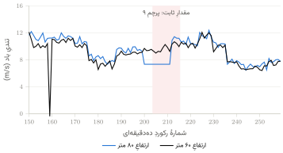
تفسیر. هر آزمون یک نوع ایراد را میگیرد و هیچکدام همه را. آزمونِ گام اینجا چیزی پیدا نکرد، اما بیهوده نیست: در دادهٔ واقعی خرابیِ اتصالِ کابل همین شکل را دارد. نمودارِ شکل 5.7 نشان میدهد که چرا آزمونِ ثابت ماندن لازم است: مقدارِ گیرکرده در بازهٔ معقول است و آزمونِ بازه آن را نمیبیند، اما خطِ صافِ آن کنارِ نوسانِ حسگرِ ۶۰ متری به چشم میآید. دیدنِ داده روی نمودار هنوز یکی از بهترین آزمونهاست.
5.2.14 طرحواره: قراردادِ داده
طرحواره توصیفِ ماشینخوانِ همان چیزی است که فرهنگِ داده برای انسان مینویسد: هر میدان چه نام، چه نوع، چه یکا و چه بازهای دارد و آیا الزامی است. طرحواره قراردادِ میانِ تولیدکننده و مصرفکنندهٔ داده است: اگر داده با آن نخواند، مصرفکننده بهجای حدس زدن، رد میکند و دلیل را میگوید. نکتهٔ مهمِ طراحی آن است که بررسیکننده همهٔ ایرادها را گزارش کند، نه فقط اولی را؛ کسی که پروندهای هزار سطری را درست میکند نباید هزار بار آن را بفرستد.
مثال 5.17 (یک طرحوارهٔ چهارمیدانی) پرسش. چهار سطرِ نمونه را با طرحوارهای بسنجید که تندی را میانِ ۰ و ۴۵، دما را میانِ −40 و ۵۵ و فشار را میانِ ۸۰۰ و ۹۵۰ هکتوپاسکال میخواهد و شمارهٔ سریال را اختیاری میداند.
پاسخ.
4 rows checked against a 4-field schema: 1 clean, 5 issue(s)
line 3: ws100_avg = -0.4 below 0 m/s
line 4: t_air = -9999.0 below -40 degC
line 4: p_air = 87.9 below 800 hPa
line 5: ws100_avg = '7,9' is not float
line 5: t_air is emptyتفسیر. پنج ایراد در سه سطر پیدا شد: تندیِ منفی، نگهبانِ −9999 (که آزمونِ بازه آن را گرفت، گرچه بهتر است نگهبانها صریح شناخته شوند)، فشارِ کیلوپاسکالی، ممیزِ ویرگولی و خانهٔ خالی. فقط سطرِ اول پاک است. پیادهسازیِ این بررسیکننده در کتابخانهٔ همراه کمتر از پنجاه سطر است و در بخش 5.4.2 همین ایده را به پیکربندیهای تودرتو گسترش میدهیم.
- سه شکلِ دادهٔ گمشده را نام ببرید و بگویید کدام خطرناکتر است.
- چرا نرخِ بازیابیِ 93 % در مثال 5.14 برآوردِ خوبی نداد؟
- یک مقدارِ پرشده با درونیابی چه پرچمی میگیرد؟ چرا نباید پرچمِ صفر بگیرد؟
- ستونی به نامِ «توان» با مقدارهای ۰ تا ۵۲۰۰ برای یک توربینِ 5 MW: یکایش احتمالاً چیست؟
- چهار قلم فرادادهٔ ضروریِ یک بادسنج را نام ببرید.
- چرا آزمونِ بازه حسگرِ گیرکرده را پیدا نمیکند؟ کدام آزمون پیدا میکند؟
- یک آزمونِ سازگاری میانِ تابشِ کل، مستقیم و پخشی بنویسید.
- چرا بررسیکنندهٔ طرحواره باید همهٔ ایرادها را با شمارهٔ سطر گزارش کند؟
- پیشینهٔ دادهٔ یک گزارشِ تولیدِ ماهانه باید چه چیزهایی را ثبت کند؟
5.2.15 برگهٔ گسترده بهعنوانِ مدلِ مهندسی
شهود. برگهٔ گسترده پرکاربردترین ابزارِ محاسبهٔ مهندسی در جهان است: سریع، دیدنی، بینیاز از برنامهنویسی. همین ویژگیها خطرش را هم میسازند: فرمولها پنهاناند، هر خانه را میتوان با یک عدد رونویسی کرد، و هیچچیز جلوی کپیِ نادرست را نمیگیرد. برگهای که برای یک تصمیمِ مهندسی به کار میرود یک مدل است و باید مثلِ یک مدل ساخته و وارسی شود. اصول (شکل 5.8):
- جداییِ ورودی، محاسبه و خروجی. ورودیها در یک ناحیهٔ رنگی و بیفرمول، هر کدام با یکا و منبع؛ محاسبهها در ناحیهای دیگر که فقط ارجاع دارد؛ خروجیها جدا با یکا در برچسب. جریانِ داده یکطرفه است.
- یک فرمول برای یک ستون. فرمولِ همهٔ سطرهای یک ستون باید یکی باشد (با ارجاعِ نسبی)؛ هر سطرِ استثنایی یک پرچمِ قرمز است.
- بیعددِ تایپی در فرمول. هر ثابت (مانندِ ۸۷۶۰ یا ۰٫۸۵) یک خانهٔ ورودیِ نامدار است. ناحیهٔ نامدار فرمول را خوانا میکند: ضربِ ظرفیت در تابش بهجای ضربِ دو نشانیِ خانه.
- ستونِ یکا و وارسیِ بُعد. کنارِ هر ستونِ عددی یکایش؛ و یک خانهٔ وارسی که بُعدِ خروجی را با ورودیها مقایسه کند.
- اعتبارسنجیِ ورود. محدودیتِ نوع و بازه برای خانههای ورودی (درصد میانِ ۰ و ۱۰۰، ظرفیت مثبت).
- ستونِ عدمِ قطعیت. کنارِ هر ورودیِ مهم عدمِ قطعیتش، و کنارِ خروجی عدمِ قطعیتِ منتشرشده (فصلِ ۲).
- حفاظت. قفل کردنِ خانههای فرمولدار، تا رونویسیِ تصادفی ممکن نباشد.
- سابقهٔ تغییرات. برگهای جدا: تاریخ، تغییردهنده، خانه، مقدارِ پیشین، دلیل.
- وارسیِ مستقل. دستِکم یک نتیجه که از راهی دیگر (دستی یا برنامه) دوباره حساب شده و در خودِ برگه مقایسه میشود.
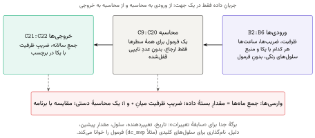
برگهٔ تولیدِ ماهانهٔ نیروگاهِ P. برای این فصل یک برگهٔ کوچک ساختهایم (A-096): ورودیها در خانههای B2 تا B6 (ظرفیتِ DC، ضریبِ عملکردِ DC، بازدهِ اینورتر، سقفِ اینورتر، ساعتهای سال)، تابشِ ماهانه از بستهٔ داده در ستونِ B، و انرژیِ هر ماه در ستونِ C با یک فرمولِ یکسان. چون برنامهای که فصل را میسازد برگهٔ واقعی را باز نمیکند، برگه در کتابخانهٔ همراه با یک مدلِ کوچکِ برگه شبیهسازی شده است: هر خانه یک عدد، یک متن یا یک فرمول است و فرمولها با همان قاعدههای برگههای رایج ارزیابی میشوند. این کار اجازه میدهد برگه را مثلِ هر برنامهٔ دیگری آزمون کنیم.
formulas of the corrected sheet (inputs in B2:B6):
cell content
B2 60
B3 0.85
C9 =$B$2*B9*$B$3*$B$4
C10 =$B$2*B10*$B$3*$B$4
C20 =$B$2*B20*$B$3*$B$4
C21 =SUM(C9:C20)
C22 =C21/(B5*B6)ستونِ عدمِ قطعیت. فرض کنید عدمِ قطعیتِ تابشِ سالانه چهار درصد باشد (A-029). ستونی کنارِ ستونِ انرژی، عدمِ قطعیتِ هر ماه را نشان میدهد. اما جمعِ سالانه یک تصمیمِ مهم دارد: آیا خطای ماهها همبسته است (یک خطای کالیبراسیونِ مشترک) یا مستقل (نوسانِ آبوهوا)؟
uncertainty column D = C x 4 % (A-029, annual irradiation, one standard
deviation):
June 12,595 +- 504 MWh; December 3,499 +- 140 MWh
year, months fully correlated (one common error): +- 3,893 MWh (4.0 %)
year, months independent (root-sum-square): +- 1,200 MWh (1.2 %)
say which case applies: a pyranometer calibration error is common to
all months; weather noise is notدو فرض سه برابر اختلاف میدهند. برگهای که «جمعِ عدمِ قطعیتها» را بیتوضیح نشان دهد، تصمیمی پنهان گرفته است.
5.2.16 حسابرسیِ برگه
حسابرسیِ برگه یعنی بهجای نگاه کردن به عددها، به فرمولها نگاه کنیم. ابزارِ اصلیِ این کار شکلِ نسبیِ فرمول است: هر ارجاع را بهصورتِ «چند سطر و چند ستون آنسوتر» بنویسیم. اگر یک فرمول در ستونی کپی شده باشد، شکلِ نسبیِ همهٔ نسخهها یکی است؛ نسخهای که فرق کند یا دستی عوض شده یا ارجاعِ نادرست دارد.
def relative_form(sheet: Sheet, cell: str) -> str:
"""Formula with each reference written as an offset from the cell (R1C1
style): copies of one formula down a column all give the same text."""
col, row = split(cell)
text = sheet.cells[cell]
def rel(m):
c, r = col_index(m.group(1)), int(m.group(2))
absolute = m.group(0).startswith("$")
return f"R{r}C{c}" if absolute else f"R[{r - row}]C[{c - col}]"
return REF.sub(rel, text)مثال 5.18 (شش اشتباه در یک برگه) پرسش. در برگهٔ تولید شش اشتباهِ رایج گذاشتهایم: خانهٔ ژوئن با عدد رونویسی شده، در فرمولِ سپتامبر ضریب تایپ شده، فرمولِ نوامبر به سطرِ اکتبر ارجاع میدهد، جمعِ سالانه یک ماه را جا انداخته، ضریبِ ظرفیت به خانهای خالی ارجاع دارد، و دو خانهٔ وارسی به هم ارجاعِ چرخهای دارند. حسابرسِ خودکار چه مییابد؟ برگهٔ درستشده با یک وارسیِ مستقل چه نسبتی دارد؟
پاسخ.
audit of the yield sheet with planted mistakes:
C17: number 0.85 typed inside the formula
C22: refers to empty cell B7
C22: division by zero (#DIV/0!)
E3: circular reference E3 -> E4 -> E3
E4: number 2 typed inside the formula
E4: circular reference E4 -> E3 -> E4
C17: breaks the pattern of column C (=$B$2*B17*0.85*$B$4)
C19: breaks the pattern of column C (=$B$2*B18*$B$3*$B$4)
C14: typed number 15000 among formulas (overwritten formula?)
C21: range C9:C19 stops before C20, which holds data
total with mistakes 98,422 MWh; corrected sheet 97,326 MWh, capacity factor
0.222
check cell C23 (sum of months - data pack): +0.1 kWh/m2independent spot check in Python (hourly, chapter 1 model):
without the inverter limit 97,320 MWh (sheet: 97,326)
with the 50 MW limit 97,304 MWh; the monthly sheet cannot see clipping
(15.7 MWh)
one hand check, January: 60 x 83.3 x 0.85 x 0.98 = 4,163 MWh = cell C9 4,163تفسیر. هر شش اشتباه پیدا شدهاند، و جمعِ برگهٔ معیوب (98,422) فقط یک درصد با مقدارِ درست (97,326) فاصله دارد: کافی برای فریب دادنِ نگاهِ سرسری، چون خطاها تا حدی یکدیگر را خنثی کردهاند. وارسیِ مستقلِ ساعتی دو نکته را هم نشان میدهد: برگه با برنامه تا گرد کردنِ تابشِ ماهانه همخوان است، و برگهٔ ماهانه نمیتواند سقفِ اینورتر را ببیند (15.7 MWh برشخوردگی). یعنی این برگه برای برآوردِ ماهانه خوب است، اما برای پرسشهایی که به ساعت وابستهاند (برش، صادراتِ محدود، باتری) مدلِ نادرستی است، نه برگهٔ بدی.
5.2.17 حالتهای خرابیِ برگهها
خطاهای برگهها آنقدر رایجاند که گروههای پژوهشی و حرفهای جداگانهای به آنها میپردازند. یکی از پرسروصداترین موردها مقالهای اقتصادی بود که به گفتهٔ بازبینانِ بعدی، بهخاطرِ یک خطای محدودهٔ میانگینگیری در برگه، پنج کشور را از یک میانگینِ کلیدی جا انداخته بود؛ این خطا همراه با چند انتخابِ روششناختیِ دیگر نتیجهٔ منتشرشده را جابهجا کرده بود (Herndon و همکاران 2014). درسِ مهندسیِ آن ساده است: برگهای که تصمیمی بزرگ بر آن تکیه دارد، باید مثلِ یک نرمافزار بازبینی شود.
حالتهای خرابیِ رایج، با پیشگیریِ هر کدام:
| حالتِ خرابی | نمونه | پیشگیری |
|---|---|---|
| رونویسیِ فرمول با عدد | خانهٔ ژوئن با «۱۵۰۰۰» | قفلِ فرمولها؛ حسابرسیِ الگوی ستون |
| محدودهٔ ناقص | جمع که ردیفِ تازه را نمیگیرد | جدولِ ساختیافته یا جمعِ کلِ ستون؛ وارسیِ جمع |
| عددِ تایپی در فرمول | «×۰٫۸۵» در یک فرمول | هر ثابت یک خانهٔ نامدار |
| ارجاعِ نسبیِ نادرست | کپی که به سطرِ دیگر اشاره میکند | شکلِ نسبیِ یکسان؛ نامِ ناحیه |
| یکای ناهمخوان | کیلوواتساعت در ستونِ مگاواتساعت | ستونِ یکا؛ وارسیِ بُعد و بازه |
| مرتبسازیِ یک ستون | ترتیبِ تاریخها جدا از مقدارها | مرتبسازیِ کلِ جدول؛ کلیدِ یکتا |
| ردیفِ پنهان | ردیفی که در جمع هست ولی دیده نمیشود | نمایشِ همه؛ گزارشِ ردیفهای پنهان |
| پیوند به پروندهٔ دیگر | مقدارِ کهنه از پروندهای جابهجاشده | ورودیها در خودِ برگه با منبع |
| تبدیلِ خودکار | برچسب یا سریال که تاریخ شد | ورودِ شناسهها بهصورتِ متن |
| تفاوتِ نمایش و مقدار | عددِ گردشده روی صفحه، مقدارِ کامل در خانه | قاعدهٔ گرد کردنِ نوشتهشده |
| ارجاعِ چرخهای | دو خانه که به هم وابستهاند | غیرفعال کردنِ محاسبهٔ تکراری |
کی برگه بس نیست؟ وقتی محاسبه به سریهای زمانیِ بلند، منطقِ پیچیده، چند کاربرِ همزمان یا بازبینیِ رسمی نیاز دارد، برنامهای با آزمون و کنترلِ نسخه انتخابِ بهتری است (بخش 5.4.6). برگه میتواند در کنارش بماند: برای ورودِ دادهٔ دستی و نمایشِ نتیجه.
5.2.18 نمودار و خواندنِ نمودار
نمودار دو کار دارد: کشفِ الگو و ایراد در داده، و گفتنِ یک نتیجه به دیگران. برای هر پرسش، نمودارِ ویژهای هست:
| پرسش | نمودار | نمونه در این کتاب |
|---|---|---|
| در طولِ زمان چه شد؟ | سریِ زمانی | شکل 5.7، شکل 5.19 |
| دو کمیت چه رابطهای دارند؟ | پراکنش | منحنیِ توان (فصلِ ۳) |
| مقدارها چطور توزیع شدهاند؟ | بافتنگار، چگالی | شکل 5.18 |
| چند ساعت بالای یک سطح؟ | منحنیِ تداوم | صادرات (فصلِ ۳) |
| کدام ورودی مهمتر است؟ | گردباد | شکل 5.21 |
| کدام دسته بزرگتر است؟ | ستونی | شکل 5.5 |
| الگوی روز و فصل؟ | نقشهٔ گرمایی (ساعت در روز) | تمرینِ پایانِ فصل |
خواندنِ نمودار یکی از معیارهای تسلطِ این فصل است. پنج پرسش پیش از هر نتیجهگیری: (۱) محورها چه کمیتی با چه یکایی هستند و از کجا شروع میشوند؟ محورِ بریده تفاوتهای کوچک را بزرگ نشان میدهد. (۲) مقیاسِ لگاریتمی است یا خطی؟ (شکل 5.16 لگاریتمی است و خطِ راستش یعنی یک قانونِ توانی.) (۳) هر نقطه یا خط چه چیزی است: مقدارِ لحظهای، میانگینِ بازه یا جمع؟ (۴) داده از کجا آمده، از کدام سناریو و نسخه؟ (۵) چه چیزی نشان داده نشده: عدمِ قطعیت، دادههای حذفشده، دورهٔ دیگر؟ دو دامِ رایج را هم بشناسید: دو محورِ عمودی با مقیاسهای جدا که هر رابطهای را میتواند القا کند (این کتاب هرگز از آن استفاده نمیکند)، و هموارسازیِ بیاعلام که قلهها و ایرادها را پنهان میکند.
- سه اصلِ ساختِ برگه را نام ببرید که اشتباههای مثال 5.18 را پیشگیری میکردند.
- چرا ثابتِ ۸۷۶۰ باید در یک خانهٔ نامدار باشد و نه در فرمول؟ (راهنما: سالِ کبیسه.)
- شکلِ نسبیِ فرمولِ «حاصلضربِ خانهٔ چپ در خانهٔ بالایش» را بنویسید.
- چرا جمعِ برگهٔ معیوب به جمعِ درست نزدیک بود؟ این چه خطری دارد؟
- چه پرسشی را برگهٔ ماهانهٔ تولید نمیتواند پاسخ دهد؟
- اگر خطاهای ماهانه همبسته باشند، عدمِ قطعیتِ سالانه چطور جمع میشود؟ اگر مستقل باشند؟
- برای نشان دادنِ اینکه نیروگاه چند ساعت در سال بالای 80 MW صادر میکند، کدام نمودار مناسب است؟
- یک نمودار با محورِ عمودیِ «۹۵ تا ۱۰۰ درصد» دسترسپذیری را نشان میدهد. چه احتیاطی لازم است؟
5.3 ب. پایههای برنامهنویسی
برنامهنویسی یعنی نوشتنِ یک روش آنقدر دقیق که ماشینی بیفکر بتواند آن را بیخطا و بیخستگی هزاران بار اجرا کند. برای مهندس، برنامه سه مزیت بر محاسبهٔ دستی و برگهٔ گسترده دارد: بازتولیدپذیری (همان ورودی، همان خروجی)، مقیاس (۸۷۶۰ ساعت یا ده سال دادهٔ دهدقیقهای با همان زحمتِ یک ساعت)، و آزمونپذیری (میتوان ثابت کرد که برنامه در حالتهای معلوم درست کار میکند). زبانِ آموزشِ این کتاب پایتون است: خوانا، رایگان، با کتابخانههای علمیِ گسترده و رایج در مهندسیِ انرژی. منطقِ هر برنامه را نخست با شبهکد میگوییم، یعنی گامهایی به زبانِ ساده که به هیچ زبانِ برنامهنویسی وابسته نیست.
5.3.1 الگوریتم و شبهکد
الگوریتم دستورِ کاری است با ورودیِ معین، گامهای روشن و پایانِ تضمینشده. سه پرسش هر الگوریتم را میسنجد: آیا درست است (برای همهٔ ورودیهای مجاز پاسخِ درست میدهد)؟ آیا پایان مییابد؟ و چقدر کار میبرد وقتی ورودی بزرگ شود؟ نمونه: «طولانیترین شکافِ یک سریِ زمانی را پیدا کن». شبهکد:
شبهکد. ورودی: فهرستِ مرتبِ شمارهٔ ساعتهای موجود.
- «بیشترین» را صفر بگذار.
- برای هر دو ساعتِ پیاپیِ \(a\) و \(b\) در فهرست: کمبود را \(b - a - 1\) بگذار؛ اگر کمبود از «بیشترین» بزرگتر است، «بیشترین» را کمبود و «آغاز» را \(a + 1\) بگذار.
- «بیشترین» و «آغاز» را برگردان.
این الگوریتم هر جفت را یک بار میبیند، پس کارش با طولِ فهرست خطی رشد میکند. اما الگوریتمِ سادهلوحانهٔ «پیدا کردنِ برچسبِ تکراری با مقایسهٔ هر دو رکورد» برای \(n\) رکورد حدودِ \(n^{2}/2\) مقایسه لازم دارد؛ با یک مجموعه (ساختاری که پرسشِ «این را دیدهام؟» را در زمانِ تقریباً ثابت پاسخ میدهد) همین کار با \(n\) پرسش انجام میشود.
def longest_gap(stamps_h):
"""Longest run of missing hours in a sorted list of hour numbers."""
best, best_start = 0, None
for a, b in zip(stamps_h, stamps_h[1:]):
missing = b - a - 1
if missing > best:
best, best_start = missing, a + 1
return best, best_start
def duplicates_slow(items):
count, found = 0, []
for i in range(len(items)):
for j in range(i + 1, len(items)):
count += 1
if items[i] == items[j]:
found.append(items[i])
return found, count
def duplicates_fast(items):
seen, found = set(), []
for x in items:
if x in seen:
found.append(x)
seen.add(x)
return found, len(items)
def algorithm_demo():
print("longest gap:", longest_gap([0, 1, 2, 5, 6, 7, 8, 14, 15]))
tags = [f"T{k}" for k in range(2000)] + ["T7"]
print("pairwise: found", duplicates_slow(tags)[0], "after",
f"{duplicates_slow(tags)[1]:,} comparisons")
print("with a set: found", duplicates_fast(tags)[0], "after",
f"{duplicates_fast(tags)[1]:,} look-ups")longest gap: (5, 9)
pairwise: found ['T7'] after 2,001,000 comparisons
with a set: found ['T7'] after 2,001 look-upsبرای دو هزار برچسب، دو میلیون مقایسه در برابرِ دو هزار پرسش. فهرستِ داراییهای یک نیروگاهِ بزرگ دهها هزار سطر دارد و سریهای زمانی میلیونها؛ انتخابِ الگوریتم آنجا فرقِ «یک ثانیه» و «یک روز» است.
5.3.2 نخستین برنامه و اجرای آن
مفسّرِ پایتون برنامهای است که متنِ برنامه را سطر به سطر میخواند و اجرا میکند. سه راه برای اجرا هست: نوشتنِ دستورها در پوستهٔ تعاملی برای آزمودنِ یک ایده؛ نوشتنِ برنامه در یک پرونده و اجرای آن از خطِ فرمان؛ و دفترچهٔ محاسباتی که کد، خروجی و توضیح را کنارِ هم نگه میدارد. برنامههای این کتاب پروندهاند و از ریشهٔ پروژه با این شکل اجرا میشوند (نامِ ماژول با نقطه، بدونِ پسوند):
python -m companion.ch05.basicsنخستین برنامه انرژیِ سالانهٔ مزرعهٔ بادی را از ظرفیت و ضریبِ ظرفیت حساب میکند:
def first_program():
p_mw = 60.0 # rated power of the wind farm
hours = 8760 # hours in a non-leap year
cf = 0.366 # capacity factor (chapter 1)
energy_mwh = p_mw * hours * cf
print(f"annual energy: {energy_mwh:,.0f} MWh")
print(f" = {energy_mwh / 1000:.1f} GWh")annual energy: 192,370 MWh
= 192.4 GWhهر سطر یک دستور است. p_mw = 60.0 یک متغیر میسازد: نامی که به یک مقدار اشاره میکند. آنچه پس از نشانهٔ # میآید توضیح است و اجرا نمیشود. رشتهٔ قالبدار (که با حرفِ f پیش از گیومه شروع میشود) مقدارِ متغیرها را درونِ متن میگذارد و میگوید چند رقم و با چه جداکنندهای چاپ شوند. یک عادتِ ساده خطاهای یکا را کم میکند: یکا را در نامِ متغیر بیاورید (p_mw، energy_mwh)، تا p_mw * hours آشکارا مگاواتساعت باشد.
5.3.3 نوعها و عبارتها
هر مقدار یک نوع دارد که میگوید چه کاری با آن ممکن است: عددِ صحیح برای شمارش، عددِ اعشاری برای کمیتهای اندازهگیریشده، رشته برای متن، بولی برای درست و نادرست، و مقدارِ تهی برای «هنوز مقدار ندارد». عبارت ترکیبی از مقدارها و عملگرهاست که یک مقدار میسازد.
def types_demo():
n_turbines = 12 # int: a count
rated_mw = 5.0 # float: a measured or rated quantity
tag = "PLP-WTG-07" # str: text
online = True # bool: yes / no
serial = None # None: "no value yet"
for x in (n_turbines, rated_mw, tag, online, serial):
print(f"{x!r:14} is {type(x).__name__}")
print("7 / 2 =", 7 / 2, " 7 // 2 =", 7 // 2, " 7 % 2 =", 7 % 2)
print("int('42') + 1 =", int("42") + 1, " '42' + '1' =", "42" + "1")
print("float('7.10') =", float("7.10"), " str(3.0) =", str(3.0))12 is int
5.0 is float
'PLP-WTG-07' is str
True is bool
None is NoneType
7 / 2 = 3.5 7 // 2 = 3 7 % 2 = 1
int('42') + 1 = 43 '42' + '1' = 421
float('7.10') = 7.1 str(3.0) = 3.0سه نکتهٔ مهم: تقسیمِ معمولی همیشه اعشاری است و تقسیمِ صحیح (با دو خطِ مورب) بخشِ صحیح را میدهد و باقیمانده جداست؛ جمعِ دو رشته آنها را به هم میچسباند و عدد نمیسازد (پس «۴۲» + «۱» برابرِ «۴۲۱» است)، و این دقیقاً خطایی است که اگر عددی از پرونده بهصورتِ متن خوانده و تبدیل نشود رخ میدهد. تبدیلِ نوع باید صریح و در لبهٔ برنامه (هنگامِ خواندن) انجام شود، نه در میانهٔ محاسبه.
5.3.4 شرطها
شرط به برنامه اجازه میدهد بسته به داده راههای گوناگون برود. منحنیِ توانِ توربین چهار ناحیه دارد و تابعِ زیر هر تندی را در ناحیهٔ خودش میگذارد:
def region(v_ms):
"""Operating region of the WT-5.0-150 power curve at hub height."""
if v_ms < 0:
raise ValueError("wind speed cannot be negative")
if v_ms < 3.0:
return "below cut-in"
elif v_ms < 13.0:
return "partial load"
elif v_ms <= 25.0:
return "rated power"
else:
return "stopped (above cut-out)"
def conditions_demo():
for v in (2.0, 8.0, 13.0, 25.0, 26.5):
print(f"{v:5.1f} m/s -> {region(v)}") 2.0 m/s -> below cut-in
8.0 m/s -> partial load
13.0 m/s -> rated power
25.0 m/s -> rated power
26.5 m/s -> stopped (above cut-out)به مرزها دقت کنید: 13.0 «توانِ اسمی» است چون شرطِ دوم «کوچکتر از» است، و 25.0 هنوز کار میکند چون شرطِ سوم «کوچکتر یا برابر» است. این تصمیمها باید با برگهٔ دادهٔ توربین همخوان باشند و در آزمونها صریحاً امتحان شوند (بخش 5.4.10). تابع برای تندیِ منفی خطا میدهد بهجای اینکه بیصدا «زیرِ تندیِ آغاز» برگرداند: ورودیِ ناممکن نشانهٔ دادهای خراب است و نباید پنهان بماند. مقایسهٔ برابری میانِ عددهای اعشاری را هم به یاد بیاورید (بخش 5.2.3): اگر لازم است بپرسید «آیا به سقف رسیده؟»، بنویسید «آیا از سقف منهای یک رواداریِ کوچک بیشتر است؟».
5.3.5 حلقهها
حلقه یک کار را برای هر عضوِ یک دنباله یا تا برقراریِ یک شرط تکرار میکند. حلقهٔ «برای هر» تعدادِ گذرهای معلوم دارد؛ حلقهٔ «تا وقتی» تا شرط برقرار است میچرخد و باید مطمئن باشیم که روزی متوقف میشود.
def loops_demo():
pv_mw = [0, 0, 0, 0, 0, 1.2, 8.5, 20.1, 31.0, 39.2, 44.0, 46.1,
46.0, 43.5, 38.0, 29.7, 18.6, 6.9, 0.5, 0, 0, 0, 0, 0]
energy, peak, peak_hour = 0.0, 0.0, None
for hour, p in enumerate(pv_mw): # one step = one hour
energy += p * 1.0 # MW x 1 h = MWh
if p > peak:
peak, peak_hour = p, hour
print(f"day energy {energy:.1f} MWh, peak {peak} MW at {peak_hour}:00")
soc, steps = 4.0, 0 # battery stored energy, MWh
while soc < 36.0: # charge at 10 MWh per step
soc = min(soc + 10.0, 36.0)
steps += 1
print(f"full after {steps} steps, stored {soc} MWh")day energy 373.3 MWh, peak 46.1 MW at 11:00
full after 4 steps, stored 36.0 MWhحلقهٔ اول همزمان دو چیز را انباشت میکند: جمعِ انرژی و بیشینه با ساعتش. حلقهٔ دوم باتری را گام به گام پر میکند؛ چون هر گام دستکم ده مگاواتساعت میافزاید و سقف ثابت است، پایانش تضمین شده است. احتیاط: اگر گامِ شارژ صفر شود (مثلاً وقتی تولید صفر است)، حلقهٔ «تا وقتی» هرگز تمام نمیشود. حلقهای که روی داده میچرخد باید یا روی دنبالهٔ محدودی بچرخد یا شرطِ توقفِ ایمنی (بیشینهٔ تکرار) داشته باشد.
مثال 5.19 (وارسیِ دستیِ یک حلقه) پرسش. در حلقهٔ اولِ برنامهٔ بالا، انرژیِ روز را با جمعِ دستیِ چند عددِ نخست و آخر تخمین بزنید و با خروجی مقایسه کنید. بیشینه کدام ساعت است و چرا ساعتِ ۱۱ و نه ۱۲؟
پاسخ. جمعِ دو ساعتِ قله (46.1 + 46.0) حدودِ 92 MWh است و منحنی تقریباً ده ساعتِ پرتوان دارد؛ ده ساعت با میانگینِ حدودِ 35 MW یعنی حدودِ 350 MWh، نزدیکِ 373.3 MWh خروجی. بیشینه در شمارهٔ ۱۱ است چون حلقه از صفر میشمارد و شرط «بزرگتر از» است: اگر دو ساعت بیشینهٔ برابر داشتند، اولی انتخاب میشد. اینها دو تصمیمِ پنهاناند (شمارش از صفر و قاعدهٔ برابری) که در هر برنامهای باید آگاهانه گرفته و مستند شوند. وارسی: یکای جمع مگاوات ضربِ ساعت است، یعنی مگاواتساعت، چون گام یک ساعت است؛ اگر داده دهدقیقهای بود، ضربِ 1.0 باید 1/6 میشد.
- شبهکدِ «شمارِ ساعتهایی که تندی بالای تندیِ اسمی است» را بنویسید.
- چرا الگوریتمِ مقایسهٔ دوبهدو برای ۲۰ هزار برچسب کُند است؟ حدودِ چند مقایسه لازم دارد؟
- خروجیِ 7 // 2 و 7 % 2 را بنویسید و یک کاربردشان را در تبدیلِ «شمارهٔ ساعت» به «روز و ساعت» بگویید.
- اگر عددِ «۸٫۵» از پرونده بهصورتِ متن خوانده شود و با 1.0 جمع شود چه رخ میدهد؟
- تابعِ ناحیهٔ منحنیِ توان برای 3.0 و 24.99 چه برمیگرداند؟
- حلقهای بنویسید (به شبهکد) که اولین ساعتِ روز را که تولید از صفر بیشتر میشود بیابد.
- حلقهٔ «تا وقتی» برای شارژِ باتری در چه حالتی هرگز تمام نمیشود؟ چطور جلویش را میگیرید؟
- چرا نامِ متغیرِ p از p_mw بدتر است؟
5.3.6 تابعها
تابع یک کارِ نامدار است با ورودیهای مشخص (پارامترها) و یک خروجی (مقدارِ بازگشتی). تابع سه سود دارد: کار را یک بار مینویسیم و بارها به کار میبریم؛ نام به آن معنا میدهد؛ و میتوان آن را جدا آزمود. بهترین نوعِ تابع تابعِ محض است: خروجی فقط به ورودیها وابسته است و هیچ چیزِ بیرونی را عوض نمیکند (پرونده نمینویسد، چاپ نمیکند، متغیرِ سراسری را تغییر نمیدهد). تابعِ محض را میتوان با یک محاسبهٔ دستی آزمود و هر بار همان پاسخ را میدهد.
def capacity_factor(energy_mwh, rated_mw, hours=8760):
"""Energy produced / energy at rated power for every hour.
energy_mwh: energy in the period (MWh); rated_mw: rating (MW);
hours: length of the period (h). Raises ValueError on bad input.
"""
if rated_mw <= 0 or hours <= 0:
raise ValueError("rated power and hours must be positive")
if energy_mwh < 0:
raise ValueError("energy cannot be negative")
return energy_mwh / (rated_mw * hours)
log = [] # a global list (avoid this)
def impure_cf(energy_mwh, rated_mw):
log.append(energy_mwh) # side effect: changes the world
return energy_mwh / (rated_mw * 8760)
def functions_demo():
print("pure: ", round(capacity_factor(192_500, 60), 3))
print("pure: ", round(capacity_factor(192_500, 60), 3))
impure_cf(192_500, 60)
impure_cf(192_500, 60)
print("impure: the log now holds", len(log), "entries")
print("week: ", round(capacity_factor(3_100, 60, hours=168), 3))pure: 0.366
pure: 0.366
impure: the log now holds 2 entries
week: 0.308رشتهٔ مستند (متنِ سهگیومهای زیرِ نامِ تابع) میگوید تابع چه میکند، ورودیها چه یکایی دارند و چه خطایی ممکن است بدهد؛ این متن با فرمانِ راهنمای پایتون دیده میشود و بخشی از مستندسازی است. پارامترِ پیشفرض (hours=8760) حالتِ رایج را ساده میکند و حالتِ دیگر (یک هفته، ۱۶۸ ساعت) را ممکن نگه میدارد. تابعِ ناخالص هر بار چیزی به یک فهرستِ سراسری میافزاید: دو بار صدا زدنِ آن دو اثر دارد، و ترتیبِ صدا زدن مهم میشود. در برنامههای مهندسی، محاسبه را محض نگه دارید و خواندن و نوشتن را به لبههای برنامه ببرید؛ این همان اصلی است که گامِ سومِ توالیِ ساخت بر آن تکیه دارد (بخش 5.3.13.3).
5.3.7 مجموعهها: فهرست، چندتایی، واژهنامه و مجموعه
دادهها کمتر تکمقدارند؛ معمولاً گروهی از مقدارها داریم. پایتون چهار ظرفِ پایه دارد: فهرست (ترتیبدار و تغییرپذیر)، چندتایی (ترتیبدار و ثابت، مثلاً یک بازه یا یک مختصات)، واژهنامه (جفتهای کلید و مقدار، مثلِ یک رکورد) و مجموعه (بیترتیب و بیتکرار، برای پرسشِ «عضو است؟»). ساختِ فهرستِ فشرده فیلتر و تبدیل را در یک سطر مینویسد.
def collections_demo():
speeds = [7.2, 8.9, 13.4, 2.1, 9.6] # list: ordered, changeable
limits = (3.0, 25.0) # tuple: fixed pair
turbine = {"tag": "PLP-WTG-07", "rated_mw": 5.0, "hub_m": 100} # dict
tags = ["PLP-INV-01", "PLP-INV-07", "PLP-INV-07", "PLP-INV-09"]
working = [v for v in speeds if limits[0] <= v <= limits[1]]
print("working speeds:", working, " count:", len(working))
print("sorted, fastest first:", sorted(speeds, reverse=True))
print("hub height:", turbine["hub_m"], "m; keys:", list(turbine))
print("unique tags:", sorted(set(tags)), " duplicates:",
len(tags) - len(set(tags)))
cubes = {v: round(v ** 3) for v in speeds[:2]}
print("v^3 by speed:", cubes)working speeds: [7.2, 8.9, 13.4, 9.6] count: 4
sorted, fastest first: [13.4, 9.6, 8.9, 7.2, 2.1]
hub height: 100 m; keys: ['tag', 'rated_mw', 'hub_m']
unique tags: ['PLP-INV-01', 'PLP-INV-07', 'PLP-INV-09'] duplicates: 1
v^3 by speed: {7.2: 373, 8.9: 705}انتخابِ ظرفِ درست خودش طراحی است: یک رکوردِ تجهیز بهصورتِ واژهنامه خواناتر از فهرستی است که باید به یاد آورد کدام خانهاش ارتفاعِ توپی است؛ و تشخیصِ تکرار با مجموعه، همانطور که در بخش 5.3.1 دیدیم، هزار بار سریعتر از مقایسهٔ دوبهدوست. برای رکوردهای پیچیدهتر، پایتون کلاسِ داده دارد که فیلدها را نامدار و نوعدار میکند؛ کتابخانهٔ همراه برای طرحوارهٔ میدانها از همین استفاده کرده است.
5.3.8 کار با رشتهها
بیشترِ دادهٔ ورودی متن است: برچسبها، مُهرهای زمان، شرحها. چند روشِ رشته کارِ روزانه را میسازد: پیرایش (حذفِ فاصلهها و خطِ تازه در دو سر)، تبدیلِ بزرگی و کوچکیِ حروف، شکافتن در یک جداکننده، و آزمونِ آغاز و پایان. قالببندی هم پهنا، تعدادِ رقم، جداکنندهٔ هزارگان و درصد را کنترل میکند.
def strings_demo():
tag = " plp-wtg-07-gen \n"
clean = tag.strip().upper()
plant, system, number, part = clean.split("-")
print(repr(tag), "->", repr(clean))
print(f"system {system}, number {int(number)}, component {part}")
print("is a turbine part:", clean.startswith("PLP-WTG"))
print(f"{'value':>8}|{3.14159:8.3f}|{1234567:>12,}|{0.0437:.1%}")' plp-wtg-07-gen \n' -> 'PLP-WTG-07-GEN'
system WTG, number 7, component GEN
is a turbine part: True
value| 3.142| 1,234,567|4.4%برچسبِ ورودی با فاصلهها، حروفِ کوچک و یک خطِ تازه رسیده است؛ پس از پیرایش و بزرگسازی، به چهار جزء شکافته میشود و شمارهٔ توربین از متنِ «۰۷» به عددِ ۷ تبدیل میشود. احتیاط: شکافتنِ یک برچسب فقط وقتی امن است که الگوی برچسب اعتبارسنجی شده باشد؛ برچسبی با یک خطِ تیرهٔ اضافه چهار جزء نمیدهد و سطرِ شکافتن خطا میدهد. در بخش 5.6.2 الگوی برچسب را با یک عبارتِ منظم دقیق میکنیم.
5.3.9 خواندن و نوشتنِ پرونده
برنامه با جهان از راهِ پرونده حرف میزند. سه قاعده: پرونده را با ساختارِ «با … باز کن» باز کنید تا حتی در صورتِ خطا بسته شود؛ کدگذاری را صریح بنویسید (UTF-8، بخش 5.2.5)؛ و برای قالبهای استاندارد (CSV، JSON) از کتابخانهٔ استانداردِ زبان استفاده کنید، نه از شکافتنِ دستی. کتابخانهٔ مسیر مسیرها را مستقل از سیستمعامل میسازد.
def files_demo(folder):
import csv
import json
from pathlib import Path
path = Path(folder) / "speeds.csv"
with open(path, "w", encoding="utf-8", newline="") as fh:
w = csv.writer(fh)
w.writerow(["hour", "ws_ms"])
for h, v in enumerate([6.1, 7.4, 8.0]):
w.writerow([h, v])
with open(path, encoding="utf-8", newline="") as fh:
rows = list(csv.DictReader(fh))
print("read back:", rows)
mean = sum(float(r["ws_ms"]) for r in rows) / len(rows)
out = {"file": path.name, "mean_ws_ms": round(mean, 3), "n": len(rows)}
summary = Path(folder) / "summary.json"
summary.write_text(json.dumps(out), encoding="utf-8")
print("summary.json:", summary.read_text(encoding="utf-8"))read back: [{'hour': '0', 'ws_ms': '6.1'}, {'hour': '1', 'ws_ms': '7.4'},
{'hour': '2', 'ws_ms': '8.0'}]
summary.json: {"file": "speeds.csv", "mean_ws_ms": 7.167, "n": 3}به یک نکته دقت کنید: CSV همهچیز را متن برمیگرداند (ws_ms برابرِ رشتهٔ «6.1» است) و تبدیل به عدد کارِ برنامه است. JSON عدد را عدد نگه میدارد و برای خروجیهای ساختاری (نتیجههای یک اجرا) مناسبتر است؛ گامِ چهارمِ توالیِ ساخت همین را به کار میبرد.
5.3.10 استثناها و خطاها
وقتی برنامه نمیتواند کارش را درست انجام دهد، باید بلند بگوید، نه اینکه نتیجهای ساختگی برگرداند. پایتون برای این کار استثنا دارد: تابع با «بالا انداختنِ» یک استثنا کارش را رها میکند و فراخواننده میتواند آن را بگیرد و تصمیم بگیرد. استثنای اختصاصی (مثلِ «خطای داده») نوعِ مشکل را روشن میکند و فراخواننده میتواند فقط همان نوع را بگیرد.
class DataError(ValueError):
"""A problem with input data (not with the program)."""
def parse_speed(text):
try:
v = float(text)
except ValueError:
raise DataError(f"not a number: {text!r}") from None
if not 0 <= v <= 75:
raise DataError(f"wind speed {v} m/s outside 0..75")
return v
def exceptions_demo():
for text in ("8.4", "8,4", "-3", "120", ""):
try:
print(f"{text!r:7} -> {parse_speed(text)}")
except DataError as e:
print(f"{text!r:7} -> rejected: {e}")'8.4' -> 8.4
'8,4' -> rejected: not a number: '8,4'
'-3' -> rejected: wind speed -3.0 m/s outside 0..75
'120' -> rejected: wind speed 120.0 m/s outside 0..75
'' -> rejected: not a number: ''دو راهبرد. گاهی باید در اولین خطا ایستاد (پیکربندیِ نادرست: ادامه دادن معنا ندارد) و گاهی همهٔ خطاها را جمع کرد و گزارش داد (یک پروندهٔ دادهٔ هزارسطری: کاربر میخواهد همهٔ ایرادها را یکجا ببیند). اعتبارسنجِ طرحواره در بخش 5.2.14 راهبردِ دوم را دارد. اما یک کار را هرگز نکنید: گرفتنِ همهٔ استثناها و ادامه دادن بیصدا. سطری که «هر خطایی رخ داد، صفر بگذار» میگوید، دقیقاً همان خطای خاموشی را میسازد که در بخش 5.2.3 از آن پرهیز کردیم.
5.3.11 ماژولها و کتابخانهها
ماژول یک پروندهٔ پایتون است که تابعها و ثابتهایش را با فرمانِ «وارد کن» در اختیارِ برنامههای دیگر میگذارد؛ بسته پوشهای از ماژولهاست. کتابخانهٔ استانداردِ پایتون صدها ماژول دارد (ریاضی، آمار، تاریخ و زمان، CSV، JSON، پایگاهِ دادهٔ سبک، ثبتِ رویداد) و کتابخانهٔ همراهِ کتاب، plantp، فصل به فصل بزرگتر شده است: یکاها و پیشینه (فصلِ ۲)، روشهای عددی و آمار (فصلِ ۳)، فیزیک و مواد (فصلِ ۴)، و در این فصل دادهٔ ورودی، داراییها، تلفات، طرحواره و برگهٔ گسترده.
def modules_demo():
import math
import statistics
from plantp import screening
print("pi =", round(math.pi, 6), " sqrt(2) =", round(math.sqrt(2), 6))
data = [6.1, 7.4, 8.0, 9.9, 5.2]
print("mean", statistics.mean(data), " median", statistics.median(data),
" stdev", round(statistics.stdev(data), 3))
p = float(screening.pv_ac_power_mw(800, 60, 50))
print("PV at 800 W/m2:", round(p, 3), "MW")
print("this module is called", __name__.rsplit(".", 1)[-1])pi = 3.141593 sqrt(2) = 1.414214
mean 7.32 median 7.4 stdev 1.81
PV at 800 W/m2: 39.984 MW
this module is called __main__متغیرِ ویژهٔ نامِ ماژول وقتی پرونده مستقیم اجرا شود برابرِ «اصلی» است و وقتی وارد شود برابرِ نامِ خودش. برای همین هر برنامهٔ این کتاب در پایان سطرِ «اگر این ماژولِ اصلی است، تابعِ اصلی را اجرا کن» را دارد: پرونده هم برنامه است و هم کتابخانه، و وارد کردنِ آن چیزی را اجرا نمیکند. (اینجا تابعِ نمایشی از درونِ همان پرونده صدا زده شده است، پس نامِ «اصلی» را میبیند.)
5.3.12 کدِ خوانا
کد را یک بار مینویسند و ده بار میخوانند: بازبین، خودتان شش ماه بعد، مهندسی که ابزار را به ارث میبرد. کدِ خوانا یک ویژگیِ ایمنی است، چون خطای پنهان در کدِ ناخوانا دیده نمیشود. راهنمای سبکِ رسمیِ پایتون (PEP 8) قاعدههای قالببندی را یکسان کرده است؛ ابزارهای خودکار بیشترشان را وارسی میکنند. فراتر از قالب، این قاعدهها برای کدِ مهندسی مهماند:
- نام با معنا و یکا: p_export_mw، نه x2؛ is_valid برای مقدارِ بولی.
- بیعددِ جادویی: هر ثابت یک نامِ بزرگحرف در بالای ماژول، با یکا و منبع (RHO_REF = 1.225 با توضیحِ «چگالیِ منحنیِ توان»).
- تابعِ کوتاه با یک کار: اگر نامِ تابع «و» لازم دارد («بخوان و حساب کن و رسم کن»)، سه تابع است.
- توضیح برای «چرا»، نه برای «چه»: کد میگوید چه میکند؛ توضیح باید بگوید چرا این روش، کدام فرض، کدام منبع.
- راهنمای نوع: نوشتنِ نوعِ پارامترها و خروجی (float، فهرستی از رشتهها) خواندن را آسان و وارسیِ خودکار را ممکن میکند.
- یکنواختی: یک قرارداد برای نامها، یکاها و پیامهای خطا در کلِ پروژه.
مثال 5.20 (بازنویسیِ یک سطرِ ناخوانا) پرسش. سطرِ زیر از یک برنامهٔ واقعیِ دانشجویی است. چه میکند و چه مشکلی دارد؟ آن را خوانا بازنویسی کنید.
e = sum([min(g*60*.85*.98/1000, 50) for g in d]) / 1000پاسخ. این سطر انرژیِ سالانهٔ خورشیدی را به گیگاواتساعت حساب میکند: برای هر تابش g در فهرستِ d، توان را با ظرفیتِ ۶۰، ضریبِ عملکردِ 0.85 و بازدهِ 0.98 میسازد و به سقفِ ۵۰ میبُرد. مشکلها: نامهای یکحرفی بییکا؛ پنج عددِ جادویی بیمنبع؛ تقسیمِ اول (بر هزار، از وات بر متر مربع به کیلووات بر متر مربع) و تقسیمِ دوم (از مگاواتساعت به گیگاواتساعت) همشکلاند و خواننده نمیفهمد کدام چیست؛ و محاسبه و تبدیلِ یکا در هم آمیختهاند. بازنویسیِ خوانا همان تابعهای گامِ سوم است (بخش 5.3.13.3): ثابتهای نامدار با یکا، یک تابعِ محض برای توان، و جمع و تبدیلِ یکا در جای جداگانه. وارسی: بازنویسی باید برای یک ورودیِ آزمون دقیقاً همان عدد را بدهد؛ این آزمونِ بازگشت است (بخش 5.4.9).
- تفاوتِ تابعِ محض و ناخالص را با یک مثال از نیروگاهِ P بگویید.
- برای رکوردِ یک اینورتر (برچسب، توان، سازنده، سریال) کدام ظرف مناسب است؟ برای فهرستِ برچسبهای دیدهشده؟
- با فهرستِ فشرده، تندیهای بالای 13 m/s را از یک فهرست جدا کنید (شبهکد یا پایتون).
- چرا خواندنِ CSV با کتابخانهٔ استاندارد هنوز به تبدیلِ نوع نیاز دارد؟
- برای پروندهٔ پیکربندی، کدام راهبرد درست است: ایستادن در اولین خطا یا جمع کردنِ همه؟ برای پروندهٔ داده؟
- سطرِ «هر خطایی رخ داد، صفر برگردان» چه خطرهایی دارد؟ یک نمونه از نیروگاه بزنید.
- چرا هر برنامهٔ این کتاب در پایان سطرِ «اگر این ماژولِ اصلی است» را دارد؟
- سه نامِ بهتر برای متغیرهای a، t و tmp در یک محاسبهٔ دمای سلول پیشنهاد کنید.
- یک «عددِ جادویی» در یکی از برنامههای فصلهای پیشین پیدا کنید و نامِ مناسبش را بنویسید.
5.3.13 توالیِ ساختِ برنامه
برنامهٔ خوب یکباره نوشته نمیشود؛ رشد میکند. این بخش یک توالیِ پنجگامی را دنبال میکند که در هر گام یک مهارتِ تازه و یک نوعِ تازهٔ آزمون اضافه میشود (شکل 5.9): (۱) یک مبدّلِ یکا با خطِ فرمان و نگهبانِ بُعد؛ (۲) یک خوانندهٔ معتبرِ CSV که همهٔ ایرادها را میگوید؛ (۳) جدا کردنِ محاسبه در تابعهای محض؛ (۴) پیکربندی در پرونده و خروجیِ ساختاری همراه با پیشینه؛ و (۵) یک بسته با خطِ فرمان، مستندات، نمونه و روشِ اجرای بازتولیدپذیر. هر گام یک برنامهٔ کاملِ کارا است، نه تکهای ناتمام.
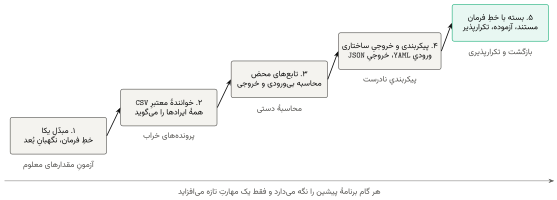
5.3.13.1 گامِ ۱: مبدّلِ یکا با نگهبانِ بُعد
نیاز. مهندس بارها مقدارها را میانِ یکاها جابهجا میکند و هر تبدیلِ ذهنی فرصتی برای خطاست. یک برنامهٔ کوچک که از خطِ فرمان مقدار و دو یکا را بگیرد و تبدیل کند مفید است، به شرطی که تبدیلِ بیمعنا (توان به انرژی) را رد کند.
طراحی. هر یکا با دو چیز تعریف میشود: بُعدش (تندی، توان، انرژی، فشار) و ضریبِ تبدیل به یکای پایهٔ همان بُعد. تبدیل فقط میانِ یکاهای یک بُعد مجاز است. دما استثناست، چون صفرِ سلسیوس و کلوین یکی نیستند و تبدیل یک جابهجایی هم دارد (\(K = a\,x + b\))؛ و دمای زیرِ صفرِ مطلق ناممکن است.
# each unit: (dimension, factor to the SI unit of that dimension)
UNITS = {
"m/s": ("speed", 1.0), "km/h": ("speed", 1 / 3.6),
"knot": ("speed", 1852 / 3600),
"W": ("power", 1.0), "kW": ("power", 1e3), "MW": ("power", 1e6),
"J": ("energy", 1.0), "kWh": ("energy", 3.6e6), "MWh": ("energy", 3.6e9),
"GWh": ("energy", 3.6e12),
"Pa": ("pressure", 1.0), "hPa": ("pressure", 100.0),
"kPa": ("pressure", 1e3), "bar": ("pressure", 1e5),
}
# temperatures: kelvin = value * a + b (an offset, not only a factor)
TEMPERATURES = {"K": (1.0, 0.0), "degC": (1.0, 273.15),
"degF": (5 / 9, 459.67 * 5 / 9)}def convert(value, src, dst):
"""value in unit src -> value in unit dst; refuses mixed dimensions."""
if src in TEMPERATURES and dst in TEMPERATURES:
a, b = TEMPERATURES[src]
kelvin = value * a + b
if kelvin < 0:
raise ConversionError(f"{value} {src} is below absolute zero")
a2, b2 = TEMPERATURES[dst]
return (kelvin - b2) / a2
for unit in (src, dst):
if unit not in UNITS:
raise ConversionError(f"unknown unit {unit!r}")
dim1, f1 = UNITS[src]
dim2, f2 = UNITS[dst]
if dim1 != dim2:
raise ConversionError(
f"cannot convert {dim1} ({src}) to {dim2} ({dst})")
return value * f1 / f2خطِ فرمان. کتابخانهٔ استانداردِ تجزیهٔ آرگومان ورودیها را میخواند، نوعشان را تبدیل میکند، راهنما میسازد و برای ورودیِ ناقص پیامِ روشن میدهد. برنامه با یک کدِ خروج پایان مییابد: صفر یعنی «کار انجام شد» و غیرِ صفر یعنی «نشد». برنامههای دیگر و خطلولههای خودکار با همین کد تصمیم میگیرند که ادامه دهند یا بایستند.
def main(argv=None):
ap = argparse.ArgumentParser(description="Convert a value between units.")
ap.add_argument("value", type=float, help="the number to convert")
ap.add_argument("src", help="unit of the value, e.g. km/h")
ap.add_argument("dst", help="wanted unit, e.g. m/s")
args = ap.parse_args(argv)
try:
result = convert(args.value, args.src, args.dst)
except ConversionError as e:
print(f"error: {e}", file=sys.stderr)
return 2
print(f"{args.value:g} {args.src} = {result:.6g} {args.dst}")
return 0
if __name__ == "__main__":
sys.exit(main())$ python -m companion.ch05.step1_convert 46.8 km/h m/s
46.8 km/h = 13 m/s
[exit code 0]
$ python -m companion.ch05.step1_convert 25 degC K
25 degC = 298.15 K
[exit code 0]
$ python -m companion.ch05.step1_convert -300 degC K
error: -300.0 degC is below absolute zero
[exit code 2]
$ python -m companion.ch05.step1_convert 5 MW MWh
error: cannot convert power (MW) to energy (MWh)
[exit code 2]
$ python -m companion.ch05.step1_convert 1 furlong m
error: unknown unit 'furlong'
[exit code 2]آزمونها. برای این گام آزمونِ مقدارهای معلوم (۴۶٫۸ کیلومتر بر ساعت برابرِ ۱۳ متر بر ثانیه، صفرِ فارنهایت ۳۲ است)، آزمونِ ردها (بُعدِ ناهمخوان، یکای ناشناخته، زیرِ صفرِ مطلق) و آزمونِ رفتوبرگشت (تبدیل و تبدیلِ معکوس باید عددِ نخست را بدهد) نوشته شده است؛ آزمونها در بخش 5.4.9 آمدهاند. کتابخانهٔ همراه نسخهٔ کاملتری از همین ایده را دارد (کمیتهای یکادارِ فصلِ ۲ با بُعدِ هفتگانه و پیشوندها)؛ این گام نشان میدهد چنین چیزی از کجا شروع میشود.
5.3.13.2 گامِ ۲: خوانندهٔ معتبرِ CSV
نیاز. بروندادِ سامانهٔ پایشِ خورشیدی (A-090) را بخوانیم: نقطهویرگولی، با ممیزِ ویرگولی، زمان به UTC با حرفِ Z، و انرژی بر حسبِ کیلوواتساعت در هر ساعت. خواننده باید سرسطر را وارسی کند، هر سطر را جداگانه بسنجد، یکا را به مگاواتساعت ببرد، و محورِ زمان را (گامِ یک ساعته، بیتکرار) بیازماید؛ و همهٔ ایرادها را با شمارهٔ سطر برگرداند.
FIELDS = ["time_utc", "energy_kwh", "availability_pct"]
MAX_KWH = 60_000.0 # 60 MWp for one hour: a physical ceiling
def number(text):
"""'12345,6' -> 12345.6 (decimal comma); raises ValueError."""
return float(text.strip().replace(",", "."))
def read_scada(path):
rows, issues = [], []
with open(path, encoding="utf-8", newline="") as fh:
reader = csv.reader(fh, delimiter=";")
header = next(reader, None)
if header != FIELDS:
return [], [f"header {header} is not {FIELDS}"]
for n, rec in enumerate(reader, start=2):
if len(rec) != len(FIELDS):
issues.append(f"line {n}: {len(rec)} fields, expected 3")
continue
try:
t = datetime.fromisoformat(rec[0].replace("Z", "+00:00"))
kwh, avail = number(rec[1]), number(rec[2])
except ValueError as e:
issues.append(f"line {n}: {e}")
continue
if t.utcoffset() != timedelta(0):
issues.append(f"line {n}: time {rec[0]} is not UTC")
if not 0 <= kwh <= MAX_KWH:
issues.append(f"line {n}: energy {kwh} kWh out of range")
if not 0 <= avail <= 100:
issues.append(f"line {n}: availability {avail} % out of range")
rows.append({"start": t, "energy_mwh": kwh / 1000.0,
"availability": avail / 100.0})
for a, b in zip(rows, rows[1:]):
step = b["start"] - a["start"]
if step != timedelta(hours=1):
issues.append(f"after {a['start']:%Y-%m-%d %H:%M}Z: step {step}")
return rows, issues$ python -m companion.ch05.step2_reader
71 valid rows, 1 issue(s)
issue: after 2023-04-04 08:00Z: step 2:00:00
first hour (local): 2023-04-03 00:00:00+04:00
energy in the file: 964.0 MWh
[exit code 1]نکتههای طراحی. سقفِ فیزیکی (60 MWh برای ظرفیتِ 60 MWp در یک ساعت) یک نگهبانِ معقول بودن است. خواننده سطرِ خراب را کنار میگذارد و ادامه میدهد، اما کدِ خروجِ یک میدهد تا کسی گمان نکند همهچیز درست بوده است. ساعتِ گمشده (09:00Z، یعنی ساعتِ ۱۳ محلی) پیدا شده است؛ اما خواننده آن را پر نمیکند: پر کردن یک تصمیمِ تحلیلی است، نه کارِ خواننده. آزمونِ این گام پروندههای عمداً خراب میسازد: عددِ ناخوانا، زمانِ غیرِ UTC، میدانِ اضافه، مقدارِ منفی و سرسطرِ اشتباه.
5.3.13.3 گامِ ۳: محاسبه در تابعهای محض
نیاز. مدلهای توانِ خورشیدی و بادی و صادرات را طوری بنویسیم که هم روی یک عدد و هم روی آرایهای ۸۷۶۰ عضوی کار کنند، بیپرونده و بیچاپ، تا با محاسبهٔ دستی آزموده شوند.
مدلِ خورشیدی (A-097) دمای سلول را با مدلِ دمای کارِ اسمیِ سلول (فصلِ ۴) میسازد و افتِ توان با دما را صریح میکند:
\[ \begin{aligned} T_\text{c} &= T_\text{a} + \frac{\text{NOCT} - 20}{800}\,G \\ P_\text{AC} &= \min\!\Big[\eta_\text{inv}\,P_\text{STC}\,\frac{G}{1000}\,\big(1 + \gamma\,(T_\text{c} - 25)\big)\,k_\text{o},\ P_\text{inv}\Big] \end{aligned} \tag{5.6}\]
با \(\gamma = -0.0035\ \text{K}^{-1}\)، ضریبِ تلفاتِ دیگر \(k_\text{o} = 0.90\) و بازدهِ اینورتر \(\eta_\text{inv} = 0.98\) (همه فرضی). مدلِ بادی چگالیِ هوای هر ساعت را از فشار و دما میسازد و با روشِ تندیِ همارز (D-008، فصلِ ۴) به منحنیِ توان میبرد:
\[ \rho = \frac{p}{R_\text{d}\,T}, \qquad v_\text{eq} = v\left(\frac{\rho}{1.225}\right)^{1/3} \tag{5.7}\]
def cell_temperature(ghi_wm2, t_air_c, noct_c=45.0):
"""NOCT model: T_cell = T_air + (NOCT - 20) / 800 * G (degC)."""
return np.asarray(t_air_c) + (noct_c - 20.0) / 800.0 * np.asarray(ghi_wm2)
def pv_ac_mw(ghi_wm2, t_air_c, dc_mwp=60.0, ac_mw=50.0, noct_c=45.0,
gamma_per_k=-0.0035, k_other=0.90, eta_inverter=0.98):
"""AC power of the PV plant (MW), limited by the inverter rating."""
g = np.asarray(ghi_wm2, dtype=float)
if (g < 0).any():
raise ValueError("irradiance cannot be negative")
t_cell = cell_temperature(g, t_air_c, noct_c)
temp_factor = 1 + gamma_per_k * (t_cell - 25.0)
p_dc = dc_mwp * g / 1000.0 * temp_factor * k_other
return np.minimum(p_dc * eta_inverter, ac_mw)def air_density(p_hpa, t_air_c):
"""Ideal gas: rho = p / (R T), dry air (kg/m3)."""
t_k = np.asarray(t_air_c) + 273.15
return np.asarray(p_hpa) * 100.0 / (R_DRY_AIR * t_k)
def wind_farm_mw(ws_ms, rho, curve_ms, curve_kw, turbines=12, loss=0.12):
"""Farm power (MW) from the power curve at the equivalent speed
v_eq = v (rho / 1.225)^(1/3); one lumped loss fraction."""
v = np.asarray(ws_ms, dtype=float)
if (v < 0).any():
raise ValueError("wind speed cannot be negative")
v_eq = v * (np.asarray(rho) / RHO_REF) ** (1.0 / 3.0)
return np.interp(v_eq, curve_ms, curve_kw) * turbines / 1000.0 * (1 - loss)def export_mw(pv_mw, wind_mw, limit_mw=100.0):
"""(export, curtailed) at the point of connection, both in MW."""
gen = np.asarray(pv_mw) + np.asarray(wind_mw)
exp = np.minimum(gen, limit_mw)
return exp, gen - exp
def energy_mwh(power_mw, dt_h=1.0):
return float(np.sum(power_mw) * dt_h)آزمون با محاسبهٔ دستی. تابعِ محض اجازه میدهد حالتهایی را بسازیم که پاسخشان را از پیش میدانیم: اگر دمای هوا −6.25 °C و تابش 1000 W/m² باشد، دمای سلول دقیقاً ۲۵ درجه است و ضریبِ دما یک؛ پس برای 40 MWp خروجی باید \(40 \times 0.90 \times 0.98 = 35.28\ \text{MW}\) باشد. برای همان شرایط با 60 MWp، سقفِ 50 MW باید فعال شود. در چگالیِ استاندارد، توربین در 8 m/s همان 2522 kWِ جدولِ منحنیِ توان را میدهد. آزمونها همینها را میسنجند و هر تغییرِ آینده که یکی را بشکند، بیدرنگ دیده میشود.
5.3.13.4 گامِ ۴: پیکربندی و خروجیِ ساختاری
نیاز. فرضها (ظرفیت، ضریبها، تعدادِ توربینها، سقفِ صادرات، نسخهٔ داده) نباید در کد باشند. آنها در یک پروندهٔ پیکربندی میآیند که پیش از اجرا با یک طرحواره وارسی میشود، و نتیجهها در یک خروجیِ ساختاری ذخیره میشوند که پیشینه را هم دارد: نسخهٔ داده، هشِ پروندهٔ ورودی، هشِ پیکربندی و نسخهٔ نرمافزار.
# Run file of the chapter 5 resource-analysis tool (teaching values).
run_id: PLP-CH05-S0
data_release: "1.1.0"
scenario: S0
pv:
dc_mwp: 60
ac_mw: 50
noct_c: 45
gamma_per_k: -0.0035
k_other: 0.90
eta_inverter: 0.98
wind:
turbines: 12
loss: 0.12
density_correction: true
export_limit_mw: 100
outputs:
folder: companion/ch05/output/S0def load_config(path):
from plantp import schema
text = Path(path).read_text(encoding="utf-8")
cfg = yaml.safe_load(text)
problems = schema.check(cfg, schema.RUN_SCHEMA)
if problems:
raise ValueError("configuration rejected:\n " + "\n ".join(problems))
cfg["_sha256"] = hashlib.sha256(text.encode("utf-8")).hexdigest()
return cfgdef run(cfg):
import plantp
from plantp import datapack
rel = cfg["data_release"]
if datapack.verify(rel):
raise RuntimeError(f"data pack {rel} fails its checksums")
h = datapack.load_hourly(release=rel)
curve = datapack.load_power_curve(release=rel)
pv = m.pv_ac_mw(h["ghi_wm2"], h["t_air_c"], **cfg["pv"])
rho = (m.air_density(h["p_hpa"], h["t_air_c"])
if cfg["wind"]["density_correction"] else m.RHO_REF)
wind = m.wind_farm_mw(h["ws_100m_ms"], rho, curve["wind_speed_ms"],
curve["power_kw"], cfg["wind"]["turbines"],
cfg["wind"]["loss"])
exp, cut = m.export_mw(pv, wind, cfg["export_limit_mw"])
manifest = datapack.load_manifest(rel)["files"]
results = {
"run_id": cfg["run_id"], "scenario": cfg["scenario"],
"data_release": rel,
"input_sha256": manifest["timeseries/plantp_hourly_8760.csv"]
["sha256"],
"config_sha256": cfg["_sha256"],
"software": {"plantp": plantp.__version__,
"python": platform.python_version()},
"pv_gwh": round(m.energy_mwh(pv) / 1000, 2),
"wind_gwh": round(m.energy_mwh(wind) / 1000, 2),
"export_gwh": round(m.energy_mwh(exp) / 1000, 2),
"curtailed_mwh": round(m.energy_mwh(cut), 1),
"mean_air_density": round(float(np.mean(rho)), 4),
}
return results, {"pv_mw": pv, "wind_mw": wind, "export_mw": exp}$ python -m companion.ch05.step4_run companion/ch05/config/run_S0.yml
pv_gwh 96.43
wind_gwh 177.08
export_gwh 273.52
curtailed_mwh 0.0
written to companion/ch05/output/S0
[exit code 0]
$ python -m companion.ch05.step4_run companion/ch05/config/run_bad.yml
error: configuration rejected:
export_limt_mw: not in the schema (typing error?)
run_id: 'plp ch05' does not match [A-Z0-9-]+
data_release: expected str, got float 1.1
scenario: 'S2' not one of ['S0', 'S1']
pv.dc_mwp: 60000 MWp above maximum 1000 MWp
pv.gamma_per_k: -0.35 1/K below minimum -0.01 1/K
pv.eta_inverter: missing
wind.turbines: expected int, got float 12.5
wind.density_correction: expected bool, got str 'yes'
export_limit_mw: missing
[exit code 2]پیکربندیِ دوم عمداً پر از اشتباه است: نامی با غلطِ تایپی (export_limt_mw)، نسخهای که YAML آن را عدد خوانده (1.1 بهجای رشتهٔ «۱٫۱٫۰»)، سناریوی ناموجود، ظرفیتی هزار برابر، ضریبِ دمایی که درصد را با کسر اشتباه گرفته، تعدادِ توربینِ اعشاری، و مقدارِ بولی که به شکلِ متن نوشته شده. بررسیکننده هر ده ایراد را یکجا گزارش میکند و برنامه پیش از هر محاسبه میایستد. بدونِ این بررسی، غلطِ تایپیِ export_limt_mw بیصدا نادیده گرفته میشد و برنامه با مقدارِ پیشفرض (یا با خطایی مبهم) ادامه میداد.
خروجیِ ساختاری. پروندهٔ نتیجه به قالبِ JSON است و علاوه بر عددها، همهچیزِ لازم برای بازتولید را دارد. این همان اصلِ «از فرض تا شاهد» است: هر عدد به نسخهٔ داده، هشِ ورودی و پیکربندیِ دقیقِ خود گره خورده است.
5.3.13.5 گامِ ۵: بسته با خطِ فرمان
نیاز. چند برنامهٔ جدا (اعتبارسنجیِ دادهٔ خام، اجرای مدل، گزارش) باید یک ابزار شوند: یک نقطهٔ ورود، فرمانهای مستند، کدهای خروجِ یکسان، آزمونهای خودکار و روشِ اجرای نوشتهشده. نتیجه بستهٔ resource_tool است با پنج ماژول که هر کدام یک مسئولیت دارد (شکل 5.10).
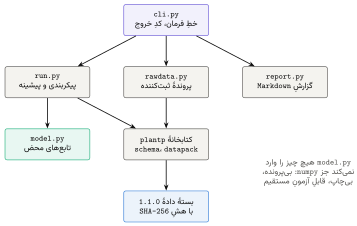
def build_parser():
ap = argparse.ArgumentParser(
prog="resource_tool",
description="Plant P resource analysis (chapter 5, teaching tool)")
ap.add_argument("--version", action="version", version=__version__)
sub = ap.add_subparsers(dest="command", required=True)
v = sub.add_parser("validate-raw", help="check a 10-min logger file")
v.add_argument("path", nargs="?", help="default: the data pack sample")
v.add_argument("--out", default="companion/ch05/output/qc.json")
r = sub.add_parser("run", help="calculate energies from a run file")
r.add_argument("config")
p = sub.add_parser("report", help="write the Markdown report")
p.add_argument("folder")
p.add_argument("--qc", default="companion/ch05/output/qc.json")
return ap
def main(argv=None):
args = build_parser().parse_args(argv)
if args.command == "validate-raw":
return cmd_validate(args)
if args.command == "run":
return cmd_run(args)
return cmd_report(args)$ python -m companion.ch05.resource_tool --help
usage: resource_tool [-h] [--version] {validate-raw,run,report} ...
Plant P resource analysis (chapter 5, teaching tool)
positional arguments:
{validate-raw,run,report}
validate-raw check a 10-min logger file
run calculate energies from a run file
report write the Markdown report
options:
-h, --help show this help message and exit
--version show program's version number and exit
[exit code 0]مستندات و روشِ اجرا. بسته یک پروندهٔ «مرا بخوان» دارد که نصب، وارسی، سه گامِ اجرا، کدهای خروج، ورودیها، خروجیها و محدودیتها را میگوید. روشِ اجرای بازتولیدپذیر یعنی کسی که فقط همین پرونده را دارد بتواند همان نتیجه را بگیرد:
# resource_tool 1.0.0 - Plant P resource analysis (teaching tool)
Turns the Plant P Reference Data Pack into checked energy figures and a
report.
Educational software for the fictional Plant P: never connect it to a plant.
## Install and check (once)
python -m pip install numpy pandas pyyaml # versions: see report
python -m companion.ch05.check_all # ends "release may proceed"
## Run procedure (every time, from the project root)
1. python -m companion.ch05.resource_tool validate-raw
checks the 10-min logger file; writes companion/ch05/output/qc.json
2. python -m companion.ch05.resource_tool run companion/ch05/config/run_S0.yml
writes results.json and hourly.csv to the folder named in the run file
3. python -m companion.ch05.resource_tool report companion/ch05/output/S0
writes PLP-GEN-REP-0002_rev-A.md next to the results
Exit codes: 0 done; 1 done, but the data have problems (see the report);
2 not done (bad arguments, configuration or missing file).
## Inputs
- run file (YAML): checked against plantp.schema.RUN_SCHEMA before
anything runs
- data pack release named in the run file: checksums verified first
## Outputs
- results.json: energies, release, SHA-256 of inputs and run file, versions
- hourly.csv: PV, wind and export power for 8760 hours
- report (Markdown): inputs, results, raw-data checks, limitations, sign-off
## Limits
Horizontal irradiance on the array; NOCT cell temperature; lumped losses
(A-097); wind power curve at site density by the equivalent speed (D-008);
one synthetic year. Chapters 10, 11, 13 and 15 replace these models.$ python -m companion.ch05.resource_tool --version
1.0.0
[exit code 0]
$ python -m companion.ch05.resource_tool validate-raw
428 records, 1 duplicate(s), 1 out of order, gaps [('2023-04-03 14:00', 5)]
flagged ghi: night offset -> 0: 6
flagged p_air: kPa -> hPa: 6
flagged t_air: sentinel: 1
flagged wd100_avg: out of range: 1
flagged ws60_avg: out of range: 1
flagged ws80_avg: stuck: 12
71 of 72 hours usable for ws100
[exit code 1]
$ python -m companion.ch05.resource_tool run companion/ch05/config/run_S0.yml
pv_gwh 96.43
wind_gwh 177.08
export_gwh 273.52
curtailed_mwh 0.0
written: companion/ch05/output/S0
[exit code 0]
$ python -m companion.ch05.resource_tool run companion/ch05/config/run_S1.yml
pv_gwh 96.43
wind_gwh 177.08
export_gwh 273.52
curtailed_mwh 0.0
bess {'charged_mwh': 0.0, 'delivered_mwh': 0.0}
written: companion/ch05/output/S1
[exit code 0]
$ python -m companion.ch05.resource_tool report companion/ch05/output/S0
report: companion/ch05/output/S0/PLP-GEN-REP-0002_rev-A.md
[exit code 0]دو نکته از خروجی. نخست، فرمانِ اعتبارسنجی کدِ خروجِ یک داده است: کارش را کرده اما داده ایراد داشته؛ خطلولهای که این کد را ببیند میتواند گزارش را بسازد اما هشدار بدهد. دوم، اجرای سناریوی S1 نشان میدهد که باتری در این مدل هیچ انرژیای جابهجا نکرده است: با اصلاحِ چگالی، تولیدِ بیشینه هرگز به سقفِ 100 MW نمیرسد و نقشِ «ذخیرهٔ انرژیِ بریدهشده» کاری ندارد. این یک یافتهٔ مهندسی است، نه اشکالِ نرمافزار: نقشِ باتری در نیروگاهِ P باید جای دیگری باشد (جابهجایی در زمان برای قیمت، بخش 5.5.4؛ و خدماتِ شبکه، فصلهای ۱۹ تا ۲۱).
5.3.14 اجرا از خطِ فرمان
خطِ فرمان رابطِ متنیِ سیستمعامل است و برای ابزارهای مهندسی سه مزیت دارد: هر اجرا را میتوان دقیقاً نوشت و تکرار کرد؛ میتوان چند ابزار را در یک دستهفرمان پشتِ هم گذاشت؛ و ماشینها (خطلولهٔ آزمون، زمانبندِ شبانه) میتوانند آن را اجرا کنند. چند قرارداد را رعایت کنید: خروجیِ استاندارد برای نتیجه و خطای استاندارد برای پیامهای خطا، تا بتوان نتیجه را به برنامهٔ دیگری داد؛ کدِ خروجِ معنادار و مستند؛ گزینهٔ راهنما و نسخه؛ و هیچ پرسشِ تعاملی در میانهٔ کار، تا اجرای خودکار گیر نکند. یک برنامهٔ خطِ فرمان که همهٔ اینها را دارد، رابطِ بازکاربردپذیر است: انسان و ماشین هر دو میتوانند آن را به کار ببرند.
- چرا مبدّلِ گامِ ۱ برای دما جدولِ جداگانه دارد؟ تبدیلِ 100 °F به سلسیوس را با فرمولِ آن بنویسید.
- اگر کسی 5 MW را به مگاواتساعت تبدیل کند، چه چیزِ دیگری لازم است تا تبدیل معنا پیدا کند؟
- چرا خوانندهٔ گامِ ۲ ساعتِ گمشده را پر نمیکند؟ چه کسی باید تصمیم بگیرد؟
- دمای سلول را برای 800 W/m² و هوای 35 °C حساب کنید؛ ضریبِ دما چقدر است؟
- اگر چگالیِ هوا 1.05 kg/m³ باشد، تندیِ همارزِ 10 m/s چقدر است؟
- سه ایرادِ پیکربندیِ نادرست را که یک برنامهٔ بدونِ طرحواره بیصدا میپذیرفت نام ببرید.
- چرا پروندهٔ نتیجه هشِ پیکربندی را هم دارد، نه فقط هشِ داده را؟
- کدِ خروجِ یک در فرمانِ اعتبارسنجی چه معنایی دارد؟ خطلوله با آن چه میکند؟
- چرا باتریِ S1 در ابزارِ این فصل هیچ انرژیای جابهجا نکرد، اما در فصلِ ۱ کمی جابهجا کرد؟
5.3.15 گردشِ کارِ محاسباتِ علمی
حلقهای که روی ۸۷۶۰ ساعت میچرخد کار میکند، اما کُند و پرحرف است. محاسباتِ علمی با چند کتابخانهٔ پایه ساده میشود: آرایهها برای عددهای همنوع، جدولها برای ستونهای نامدار با محورِ زمان، حلکنندهها برای ریشه، انتگرال و دستگاهِ معادله، و نمودار. این بخش هر کدام را با یک کارِ نیروگاهِ P نشان میدهد. نسخههای کتابخانههایی که این فصل با آنها ساخته شده در بخش 5.3.15.7 آمده است.
5.3.15.1 آرایهها و برداریسازی
آرایه فهرستی از عددهای همنوع در حافظهٔ پیوسته است و عملگرها روی همهٔ اعضا با هم اجرا میشوند: ضربِ آرایه در عدد، جمعِ دو آرایهٔ هماندازه، یا کمینهٔ عضوبهعضو. این برداریسازی هم کد را کوتاه میکند (فرمول همان شکلِ ریاضیاش را دارد) و هم صدها بار سریعتر است. ماسکِ بولی (آرایهای از درست و نادرست) شمارش و گزینش را ساده میکند و تغییرِ شکل سریِ ۸۷۶۰ تایی را به جدولِ ۳۶۵ روز در ۲۴ ساعت تبدیل میکند.
def numpy_demo():
import numpy as np
from plantp import datapack
ghi = datapack.load_hourly()["ghi_wm2"].to_numpy() # 8760 values
p_dc = 60.0 * ghi / 1000.0 * 0.85 # whole year at once
p_ac = np.minimum(p_dc * 0.98, 50.0) # element by element
print("shape", ghi.shape, " dtype", ghi.dtype)
print(f"energy {p_ac.sum():,.0f} MWh; hours at the limit",
int((p_ac >= 50.0).sum()))
total = 0.0
for g in ghi: # the same, slowly
total += min(60.0 * g / 1000.0 * 0.85 * 0.98, 50.0)
print("loop and array agree:", bool(np.isclose(total, p_ac.sum())))
day = p_ac.reshape(365, 24) # days x hours
print("best hour of the mean day:", int(day.mean(axis=0).argmax()))shape (8760,) dtype float64
energy 97,304 MWh; hours at the limit 17
loop and array agree: True
best hour of the mean day: 11نتیجه همان 97,304 MWh و ۱۷ ساعتِ سقفِ فصلِ ۱ است: برداریسازی محاسبه را عوض نکرده، فقط آن را کوتاه کرده است. سطرِ «حلقه و آرایه یکیاند» یک وارسیِ کوچک است که بهتر است در آزمون باشد نه در برنامه.
5.3.15.2 جدولها و سریهای زمانی
جدولِ داده (کتابخانهٔ pandas) ستونهای نامدار و یک نمایه دارد که برای سریهای زمانی، مُهرِ زمانِ آگاه از منطقه است. دو کارِ پرکاربرد: بازنمونهگیری (مثلاً جمعِ ساعتی به ماهانه) و گروهبندی (مثلاً میانگینِ هر ساعتِ روز در کلِ سال، که «روزِ میانگین» را میسازد).
def pandas_demo():
from plantp import datapack
h = datapack.load_hourly()
print("index:", h.index[0], "...", h.index[-1], "| tz:", h.index.tz)
monthly = h["ghi_wm2"].resample("MS").sum() / 1000 # kWh/m2
print("June GHI", round(monthly.iloc[5], 1), "kWh/m2;",
"December", round(monthly.iloc[11], 1))
profile = h.groupby(h.index.hour)["ws_100m_ms"].mean()
print(f"windiest hour {profile.idxmax()}:00 ({profile.max():.2f} m/s),",
f"calmest {profile.idxmin()}:00 ({profile.min():.2f} m/s)")
print(h[["t_air_c", "p_hpa"]].describe().loc[["mean", "min", "max"]]
.round(1).to_string())index: 2023-01-01 00:00:00+04:00 ... 2023-12-31 23:00:00+04:00 | tz: UTC+04:00
June GHI 252.0 kWh/m2; December 70.0
windiest hour 2:00 (7.86 m/s), calmest 14:00 (6.52 m/s)
t_air_c p_hpa
mean 16.8 877.7
min -8.6 866.4
max 40.7 888.8بادِ ساختگاه در ساعتِ دو بامداد بیشترین و در ساعتِ دوِ بعدازظهر کمترین است، درست برعکسِ خورشید: این مکمل بودنِ روزانه همان چیزی است که فصلِ ۱ با همبستگیِ منفی دید. پیش از هر گروهبندی بپرسید نمایه در کدام منطقهٔ زمانی است: «ساعتِ دو» در UTC ساعتِ شش در نیروگاه است.
5.3.15.3 تاریخ و زمان در برنامه
def datetime_demo():
import pandas as pd
t = pd.Timestamp("2023-04-03 14:10") # naive: no zone
local = t.tz_localize("+04:00") # we SAY which zone
start = local - pd.Timedelta(minutes=10) # end label -> start
print("label", t, "-> interval start", start)
print("in UTC:", start.tz_convert("UTC"))
utc = pd.date_range("2023-03-25 23:00", periods=4, freq="h", tz="UTC")
berlin = utc.tz_convert("Europe/Berlin") # a zone with DST
print("four UTC hours seen in Berlin:",
[x.strftime("%H:%M%z") for x in berlin])label 2023-04-03 14:10:00 -> interval start 2023-04-03 14:00:00+04:00
in UTC: 2023-04-03 10:00:00+00:00
four UTC hours seen in Berlin: ['00:00+0100', '01:00+0100', '03:00+0200',
'04:00+0200']برنامه سه کارِ بخش 5.2.7 را انجام میدهد: به مُهرِ بیمنطقه صریحاً منطقه میدهد (بهجای حدس)، برچسبِ پایان را به آغاز میبرد، و به UTC تبدیل میکند. سطرِ آخر نشان میدهد که چهار ساعتِ پیاپیِ UTC در منطقهای با ساعتِ تابستانی ساعتهای 00:00، 01:00، 03:00 و 04:00 محلیاند: ساعتِ دو وجود ندارد. قاعده: محاسبه در UTC؛ تبدیل به ساعتِ محلی فقط برای نمایش.
5.3.15.4 حلکنندههای عددی
فصلِ ۳ روشهای عددی را از پایه ساخت (دوبخشی، نیوتن، ذوزنقه، سیمپسون). در کارِ روزمره از کتابخانههای آزمودهشده استفاده میکنیم، اما با همان فهم: ریشهیاب به بازهای با تغییرِ علامت نیاز دارد، انتگرالگیرِ تطبیقی برآوردِ خطا میدهد و باید نقطههای شکستِ تابع را بداند.
def solver_demo():
import numpy as np
from scipy import integrate, optimize
from plantp import datapack, stats
curve = datapack.load_power_curve()
v, p = curve["wind_speed_ms"].to_numpy(), curve["power_kw"].to_numpy()
def power(x):
return float(np.interp(x, v, p))
v_half = optimize.brentq(lambda x: power(x) - 2500.0, 3.0, 13.0)
print(f"speed for 2.5 MW: {v_half:.3f} m/s")
k, c = 2.11, 8.02 # chapter 3 fit
mean_kw, err = integrate.quad(
lambda x: power(x) * stats.weibull_pdf(x, k, c), 0, 30,
points=list(v[(v > 2) & (v < 26)]), limit=200)
print(f"Weibull mean power {mean_kw:,.0f} kW (error estimate {err:.1e})")
print(f"capacity factor {mean_kw / 5000:.3f}")speed for 2.5 MW: 7.976 m/s
Weibull mean power 2,070 kW (error estimate 2.3e-11)
capacity factor 0.414تندیای که توربین در آن نصفِ توانِ اسمی را میدهد 7.98 m/s است؛ و میانگینِ توان با توزیعِ وایبولِ فصلِ ۳، 2070 kW یعنی ضریبِ ظرفیتِ ناخالصِ 0.414. منحنیِ توان جدولی و تکهخطی است، پس نقطههای جدول به انتگرالگیر داده شدهاند تا روی گوشهها دقت از دست نرود. وارسی: ضریبِ ظرفیتِ ناخالص از سریِ ساعتی در چگالیِ استاندارد 0.416 است (مثال 5.12)؛ دو روشِ مستقل به یک پاسخ نزدیک رسیدهاند.
5.3.15.5 نمودار از برنامه
کتابخانهٔ رسمِ نمودار (matplotlib) نمودار را مستقیم از برنامه میسازد و در پرونده ذخیره میکند؛ بنابراین نمودار هم مانندِ عددها بازتولیدپذیر است. شکلهای این کتاب با ابزارِ دیگری رسم شدهاند تا با حروف و رنگهای کتاب یکسان باشند، اما دادهٔ آنها را همین برنامهها نوشتهاند. برنامهٔ زیر نمودارِ هفتگیِ باد را میسازد:
def plot_demo(folder):
import matplotlib
matplotlib.use("Agg") # no screen needed
import matplotlib.pyplot as plt
from plantp import datapack
h = datapack.load_hourly("week_spring")
fig, ax = plt.subplots(figsize=(7, 3))
ax.plot(h.index, h["ws_100m_ms"], label="100 m")
ax.plot(h.index, h["ws_60m_ms"], "--", label="60 m")
ax.set_ylabel("wind speed (m/s)")
ax.set_title("Plant P, 3-9 April (data pack 1.1.0)")
ax.legend()
fig.tight_layout()
out = f"{folder}/week_wind.png"
fig.savefig(out, dpi=150)
plt.close(fig)
print("wrote", out.rsplit("/", 1)[-1], "with", len(h), "points per line")wrote week_wind.png with 168 points per lineقاعدههای نمودارِ مهندسی همان قاعدههای بخش 5.2.18 است: محور با کمیت و یکا، عنوان با منبع و نسخهٔ داده، راهنما برای دو سری یا بیشتر، و یک محورِ عمودی. سبکِ خط (پیوسته و خطچین) هم سریها را جدا میکند تا نمودار در چاپِ سیاهوسفید و برای خوانندهٔ کوررنگ خوانا بماند.
5.3.15.6 پروندهٔ پیکربندی
قالبِ YAML برای پیکربندی محبوب است چون برای انسان خوانا است و توضیح میپذیرد. اما نوع را خودش حدس میزند، و این حدس گاهی غلط است:
def config_demo():
import yaml
text = """
run: S0
data_release: 1.1.0
pv: {dc_mwp: 60, ac_mw: 50, pr_dc: 0.85}
wind: {turbines: 12, loss: 0.12}
export_limit_mw: 100
"""
cfg = yaml.safe_load(text)
print(cfg["pv"], "| limit", cfg["export_limit_mw"], "MW")
print("release read as", repr(cfg["data_release"]),
"-> keep versions as text")
print("yaml '1.10' is", repr(yaml.safe_load("v: 1.10")["v"]),
"but '\"1.10\"' is", repr(yaml.safe_load('v: "1.10"')["v"])){'dc_mwp': 60, 'ac_mw': 50, 'pr_dc': 0.85} | limit 100 MW
release read as '1.1.0' -> keep versions as text
yaml '1.10' is 1.1 but '"1.10"' is '1.10'«۱٫۱۰» (یعنی نسخهٔ یکودهم) به عددِ 1.1 تبدیل شد و رقمِ آخرش از دست رفت؛ و «۱٫۱٫۰» چون دو نقطه دارد متن ماند. قاعده: نسخهها، شناسهها و کدها را در پیکربندی میانِ گیومه بنویسید، و پیکربندی را همیشه با طرحواره وارسی کنید (بخش 5.4.2). از روشهای خواندنِ «امن» استفاده کنید که فقط داده میخوانند و هرگز کد اجرا نمیکنند.
5.3.15.7 محیطِ بازتولیدپذیر و ثبتِ نسخهها
نتیجهٔ یک برنامه فقط به کدِ خودش وابسته نیست؛ به مفسّر و کتابخانهها هم وابسته است. مثال 5.5 نشان داد که حتی تابعِ جمعِ پایتون در نسخههای تازه رفتارِ دیگری دارد. برای بازتولیدپذیری سه کار لازم است:
- محیطِ جدا: هر پروژه محیطِ مجازیِ خودش را دارد تا نصبِ کتابخانهای برای پروژهٔ دیگر آن را عوض نکند.
- پین کردنِ نسخهها: فهرستِ وابستگیها با نسخهٔ دقیق (و در کارهای حساس با هشِ بسته) در یک پروندهٔ قفل نوشته میشود و در کنترلِ نسخه میماند؛ نصب از روی همین فهرست انجام میشود.
- ثبتِ نسخه در خروجی: هر نتیجه نسخهٔ مفسّر، کتابخانهها، ابزار و دادهٔ بهکاررفته را همراه دارد.
def versions_demo():
import platform
import numpy
import pandas
import scipy
import plantp
print("python", platform.python_version(), "| numpy", numpy.__version__,
"| pandas", pandas.__version__, "| scipy", scipy.__version__)
print("plantp", plantp.__version__, "| data pack", plantp.DATA_RELEASE)python 3.14.1 | numpy 2.5.4 | pandas 3.1.1 | scipy 1.18.1
plantp 0.2.0 | data pack 1.1.0وارسیِ نتیجه. محیطِ بازتولیدپذیر لازم است اما کافی نیست؛ باید بدانیم نتیجه درست است. سه راهِ مستقل در این فصل به کار میرود: (۱) نتیجههای مرجعِ بستهٔ داده (تابشِ سالانه، تندیِ میانگین) که هر نصبِ تازه باید آنها را بازتولید کند؛ (۲) محاسبهٔ دستی برای حالتهای ساده؛ و (۳) روشِ دوم (مثلاً وایبول در برابرِ سریِ ساعتی، یا برگه در برابرِ برنامه). وقتی سه راه همخواناند، به نتیجه اعتماد میکنیم؛ وقتی نیستند، پیش از هر گزارش علت را پیدا میکنیم.
- با برداریسازی، شمارِ ساعتهایی را که توانِ بادی از 50 MW بیشتر است چطور میشمارید؟
- «روزِ میانگینِ» تابش را با چه عملی از جدولِ داده میسازید؟ اگر نمایه در UTC باشد چه اشکالی پیش میآید؟
- چرا ریشهیابِ دوبخشی برای «تندی در توانِ نصف» به بازهٔ 3 تا 13 m/s نیاز دارد، نه 0 تا 30؟
- چرا نقطههای جدولِ منحنیِ توان به انتگرالگیر داده شدند؟
- نمودارِ هفتگیِ باد چه چیزهایی دارد که آن را برای گزارش مناسب میکند؟
- پیکربندیِ «نسخه: ۲٫۱۰» در YAML چه مقداری میشود؟ چطور درستش میکنید؟
- سه چیزی را نام ببرید که باید کنارِ هر نتیجهٔ عددی ذخیره شود تا بازتولیدپذیر باشد.
- اگر نتیجهٔ برنامه با نتیجهٔ مرجعِ بستهٔ داده در رقمِ چهارم فرق کند، چه میکنید؟
5.3.16 پروژهٔ کامل: از پروندهٔ خام تا گزارشِ بازتولیدپذیر
این پروژه همهٔ مهارتهای بخشهای الف و ب را کنارِ هم میگذارد. هدف: یک بستهٔ کوچک و مستند برای تحلیلِ منبعِ نیروگاهِ P که از پروندههای خام شروع کند، داده را اعتبارسنجی کند، انرژیها را حساب کند، نمودار و گزارش بسازد، آزمونهای خودکار داشته باشد و نتیجهاش بازتولیدپذیر باشد. پروژه در دو مرحله پیش میرود، همانطور که در کارِ واقعی پیش میرود: مرحلهٔ ۱ برنامهای یکتکه که کار میکند، و مرحلهٔ ۲ بازسازیِ همان برنامه به ماژولهای آزموده و یک ابزارِ خطِ فرمانِ مستند، بیآنکه هیچ عددی عوض شود.
5.3.16.1 مرحلهٔ ۱: یک برنامهٔ یکتکه
OUT = Path("companion/ch05/output/stage1")
OUT.mkdir(parents=True, exist_ok=True)
LOCAL = timezone(timedelta(hours=4))
# 1. raw logger file: skip comments, end label -> start, UTC
text = datapack.raw_path("met_mast_10min_raw.csv").read_text("utf-8")
rows = list(csv.DictReader(
[ln for ln in text.splitlines() if not ln.startswith("#")]))
recs = []
for r in rows:
end = datetime.strptime(r["timestamp"], "%Y-%m-%d %H:%M")
start = (end.replace(tzinfo=LOCAL) - timedelta(minutes=10))
recs.append((start.astimezone(timezone.utc), float(r["ws100_avg"])))
recs = sorted(set(recs)) # order + exact duplicates
gaps = sum(1 for a, b in zip(recs, recs[1:])
if b[0] - a[0] != timedelta(minutes=10))
# 2. hourly means of the 100 m speed, at least 5 of 6 values
hours = {}
for t, v in recs:
if 0 <= v <= 45:
hours.setdefault(t.replace(minute=0), []).append(v)
ws_hourly = {h: sum(v) / len(v) for h, v in hours.items() if len(v) >= 5}
# 3. annual energies with the step-3 models (constants typed here)
h = datapack.load_hourly()
curve = datapack.load_power_curve()
g, ta = h["ghi_wm2"].to_numpy(), h["t_air_c"].to_numpy()
t_cell = ta + (45 - 20) / 800 * g
pv = np.minimum(60 * g / 1000 * (1 - 0.0035 * (t_cell - 25)) * 0.90
* 0.98, 50)
rho = h["p_hpa"].to_numpy() * 100 / (287.05 * (ta + 273.15))
v_eq = h["ws_100m_ms"].to_numpy() * (rho / 1.225) ** (1 / 3)
wind = np.interp(v_eq, curve["wind_speed_ms"], curve["power_kw"]) \
* 12 / 1000 * (1 - 0.12)
export = np.minimum(pv + wind, 100)
# 4. report
result = {"pv_gwh": round(pv.sum() / 1000, 2),
"wind_gwh": round(wind.sum() / 1000, 2),
"export_gwh": round(export.sum() / 1000, 2),
"raw_records": len(rows), "kept": len(recs), "gaps": gaps,
"usable_hours_ws100": len(ws_hourly)}
(OUT / "result.json").write_text(json.dumps(result, indent=1), "utf-8")
print(result)
print("mean of usable hourly ws100 =",
round(sum(ws_hourly.values()) / len(ws_hourly), 3), "m/s;",
"mean density", round(float(rho.mean()), 4), "kg/m3")$ python -m companion.ch05.project_stage1
{'pv_gwh': np.float64(96.43), 'wind_gwh': np.float64(177.08), 'export_gwh':
np.float64(273.52), 'raw_records': 428, 'kept': 427, 'gaps': 1,
'usable_hours_ws100': 71}
mean of usable hourly ws100 = 7.789 m/s; mean density 1.0559 kg/m3
[exit code 0]توضیحِ سطر به سطر.
- پوشهٔ خروجی و منطقهٔ زمانی. دو سطرِ نخست پوشهٔ خروجی را میسازند (اگر نباشد) و منطقهٔ زمانیِ ثابتِ +04:00 را تعریف میکنند. نامِ پوشه مسیرِ نسبی است، پس برنامه فقط از ریشهٔ پروژه درست کار میکند؛ این یک وابستگیِ پنهان است.
- بلوکِ ۱ (پروندهٔ خام). متنِ پرونده خوانده میشود، سطرهای فراداده (آغاز با نشانهٔ
#) کنار میروند و خوانندهٔ استانداردِ CSV بقیه را به واژهنامه تبدیل میکند. در حلقه، هر مُهر به زمان تبدیل، منطقهدار، ده دقیقه به عقب (برچسبِ پایان به آغاز) و به UTC برده میشود؛ فقط تندیِ صدمتری نگه داشته میشود. ساختنِ مجموعه از جفتهای (زمان، تندی) تکراریهای کاملاً یکسان را حذف و مرتبسازی ترتیب را درست میکند. شمارشِ جفتهای پیاپی با فاصلهٔ غیرِ دهدقیقهای، شکافها را میشمارد. - بلوکِ ۲ (میانگینِ ساعتی). هر مقدارِ معتبر (میانِ صفر و ۴۵) به ساعتِ آغازش سپرده میشود و فقط ساعتهایی با دستکم پنج مقدار میانگین میگیرند.
- بلوکِ ۳ (انرژیها). همان مدلهای گامِ سوم، این بار با ثابتهای تایپی درونِ فرمولها: ۴۵، ۲۰، ۸۰۰، ۶۰، 0.0035، 0.90، 0.98، ۵۰، 287.05، 1.225، ۱۲ و 0.12.
- بلوکِ ۴ (گزارش). نتیجهها در یک پروندهٔ JSON نوشته و چاپ میشوند.
برنامه کار میکند و عددهایش درستاند: 96.43، 177.08 و 273.52 GWh، ۴۲۷ رکوردِ نگهداشته، یک شکاف و ۷۱ ساعتِ قابلِ استفاده. اما نقدِ مهندسی چند بوی بد در آن مییابد:
| بو | پیامد |
|---|---|
| دهها ثابتِ تایپی درونِ فرمول | تغییرِ یک فرض یعنی جستوجو در کد؛ خطای کپی |
| خواندن، محاسبه و نوشتن در هم | هیچ بخشی را نمیتوان جدا آزمود |
| مسیرِ نسبی و منطقهٔ زمانیِ ثابت در کد | اجرا از پوشهٔ دیگر یا برای دادهٔ دیگر میشکند |
| نبودِ اعتبارسنجیِ کامل | فقط تندیِ صدمتری با یک بازه سنجیده میشود؛ حسگرِ گیرکرده دیده نمیشود |
| خروجی بیپیشینه | نه نسخهٔ داده، نه هشِ ورودی، نه نسخهٔ نرمافزار |
| چاپِ نوعِ داخلیِ کتابخانه | خروجیِ چاپی عددها را با نامِ نوعِ کتابخانه نشان میدهد |
| بیآزمون و بیمستند | کسی جز نویسنده نمیداند چه فرض شده است |
5.3.16.2 مرحلهٔ ۲: بازسازی به بستهٔ آزموده
بازسازی یعنی تغییرِ ساختارِ کد بدونِ تغییرِ رفتارش. پیش از هر تغییر، یک آزمونِ بازگشت نوشته میشود که خروجیِ مرحلهٔ ۱ را با خروجیِ نسخهٔ جدید مقایسه کند؛ اگر آزمون سبز بماند، بازسازی چیزی را نشکسته است. نقشهٔ بازسازی:
- ثابتها به پیکربندی: همهٔ فرضها در پروندهٔ اجرا با طرحواره (گامِ ۴).
- محاسبه به ماژولِ محض: مدلها در ماژولِ مدل، بیورودی و خروجی (گامِ ۳)، و تابعِ «محاسبه» که فقط اینها را کنارِ هم میگذارد.
- دادهٔ خام به ماژولِ جدا با زنجیرهٔ کاملِ اعتبارسنجی، که هر کارش را ثبت میکند (شکل 5.11).
- گزارش به ماژولِ نمایش که فقط پروندهٔ نتیجه را میخواند.
- خطِ فرمان با سه فرمان و کدهای خروجِ مستند (گامِ ۵).
- آزمونها برای هر ماژول و یک خطلوله که همه را اجرا کند (بخش 5.4.13).
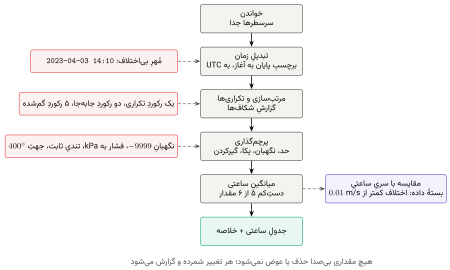
ماژولِ دادهٔ خام. چهار تابع، هر کدام یک کار. نخست حدها، نگهبانها و طولِ «گیرکردن» در بالای ماژول با نام تعریف میشوند:
LIMITS = {"ws100_avg": (0, 45), "ws100_sd": (0, 10), "ws80_avg": (0, 45),
"ws60_avg": (0, 45), "wd100_avg": (0, 360), "t_air": (-40, 55),
"p_air": (800, 950), "ghi": (0, 1400)}
SENTINELS = {-9999.0, -999.0, 9999.0}
FLAT_RUN = 6 # identical speeds in a row = stuck (1 hour)تابعِ تجزیه فقط زمان را درست میکند و متن را عدد؛ هیچ داوریای نمیکند:
def parse(rows):
"""Text rows -> records with a UTC interval START and float values."""
records = []
for r in rows:
end = datetime.strptime(r["timestamp"], "%Y-%m-%d %H:%M")
start = (end.replace(tzinfo=LOCAL) - STEP).astimezone(timezone.utc)
rec = {"start": start}
for col in LIMITS:
rec[col] = float(r[col])
records.append(rec)
return recordsتابعِ پاکسازی رکوردهای جابهجا را میشمارد و مرتب میکند، تکراریِ کاملاً یکسان را حذف میکند، اما اگر دو رکوردِ متفاوت یک مُهر داشته باشند خطا میدهد (چون نمیداند کدام درست است) و شکافها را با طولشان گزارش میکند:
def clean(records):
"""Sort, drop exact duplicates, report gaps; returns (records, log)."""
log = {"out_of_order": 0, "duplicates": 0, "gaps": []}
for a, b in zip(records, records[1:]):
if b["start"] < a["start"]:
log["out_of_order"] += 1
ordered = sorted(records, key=lambda r: r["start"])
unique = []
for r in ordered:
if unique and r["start"] == unique[-1]["start"]:
if r == unique[-1]:
log["duplicates"] += 1
continue
raise ValueError(f"two different records at {r['start']}")
unique.append(r)
for a, b in zip(unique, unique[1:]):
if b["start"] - a["start"] != STEP:
missing = (b["start"] - a["start"]) // STEP - 1
log["gaps"].append((a["start"] + STEP, int(missing)))
return unique, logتابعِ پرچمگذاری برای هر مقدار یک پرچم میگذارد: نگهبانها گمشده میشوند، فشارِ کیلوپاسکالی (بینِ ۸۰ و ۹۵) با پرچمِ یک ده برابر میشود، مقدارهای منفیِ کوچکِ تابش در شب با پرچمِ یک صفر میشوند، مقدارهای بیرونِ بازه رد میشوند و دنبالههای ششتاییِ یکسانِ تندی گیرکرده شمرده میشوند. هر اصلاح و ردی شمرده میشود:
def flag(records):
"""Add a flag for every value; adjust what can be safely corrected."""
counts = {}
for r in records:
r["flags"] = {}
for col, (low, high) in LIMITS.items():
v, f = r[col], 0
if v in SENTINELS:
v, f, why = math.nan, 9, "sentinel"
elif col == "p_air" and 80 <= v <= 95:
v, f, why = v * 10, 1, "kPa -> hPa"
elif col == "ghi" and -5 <= v < 0:
v, f, why = 0.0, 1, "night offset -> 0"
elif not low <= v <= high:
v, f, why = math.nan, 9, "out of range"
r[col], r["flags"][col] = v, f
if f:
counts[(col, why)] = counts.get((col, why), 0) + 1
for col in ("ws100_avg", "ws80_avg", "ws60_avg"):
run = 1
for k in range(1, len(records) + 1):
same = (k < len(records) and
records[k][col] == records[k - 1][col])
if same:
run += 1
continue
if run >= FLAT_RUN:
for r in records[k - run:k]:
r[col], r["flags"][col] = math.nan, 9
counts[(col, "stuck")] = counts.get((col, "stuck"), 0) + run
run = 1
return countsو تابعِ تجمیع میانگینِ ساعتی را فقط با پنج مقدارِ معتبر یا بیشتر میسازد و جهت را برداری میانگین میگیرد:
def vector_mean(directions):
s = sum(math.sin(math.radians(d)) for d in directions)
c = sum(math.cos(math.radians(d)) for d in directions)
return round(math.degrees(math.atan2(s, c)), 9) % 360.0
def hourly(records, min_count=5):
"""Hour (UTC start) -> {column: mean or NaN, 'n': values used}."""
groups = {}
for r in records:
h = r["start"].replace(minute=0)
groups.setdefault(h, []).append(r)
out = {}
for h, rs in sorted(groups.items()):
row = {}
for col in LIMITS:
vals = [r[col] for r in rs if not math.isnan(r[col])]
if len(vals) < min_count:
row[col] = math.nan
elif col == "wd100_avg":
row[col] = vector_mean(vals)
else:
row[col] = sum(vals) / len(vals)
row["n"] = len(rs)
out[h] = row
return outماژولِ اجرا. تابعِ «محاسبه» مدلهای محض را با پیکربندی و داده کنارِ هم میگذارد؛ اگر پیکربندی باتری داشته باشد، نقشِ «ذخیرهٔ انرژیِ بریدهشده» را هم اجرا میکند (کتابخانهٔ همراه، فصلِ ۱):
def calculate(cfg, hourly, curve):
pv = m.pv_ac_mw(hourly["ghi_wm2"], hourly["t_air_c"], **cfg["pv"])
rho = (m.air_density(hourly["p_hpa"], hourly["t_air_c"])
if cfg["wind"]["density_correction"] else m.RHO_REF)
wind = m.wind_farm_mw(hourly["ws_100m_ms"], rho, curve["wind_speed_ms"],
curve["power_kw"], cfg["wind"]["turbines"],
cfg["wind"]["loss"])
exp, cut = m.export_mw(pv, wind, cfg["export_limit_mw"])
out = {"pv_mw": np.asarray(pv), "wind_mw": np.asarray(wind),
"export_mw": np.asarray(exp), "curtailed_mw": np.asarray(cut),
"rho": np.broadcast_to(rho, np.shape(pv))}
if cfg.get("bess"):
from plantp import screening
b = cfg["bess"]
shift = screening.shift_surplus_with_battery(
cut, cfg["export_limit_mw"] - exp, b["power_mw"],
b["usable_mwh"], b["roundtrip"])
out["bess"] = {"charged_mwh": shift.charged_mwh,
"delivered_mwh": shift.delivered_mwh}
return outماژولِ گزارش فقط پروندهٔ نتیجه و خلاصهٔ اعتبارسنجی را میخواند و یک سندِ Markdown با شمارهٔ مدرک، ورودیها و هشها، نتیجهها، وارسیهای دادهٔ خام، محدودیتها و جدولِ امضا میسازد:
def render(results, qc=None, rev="A", status="IFR"):
r = results
lines = [f"# Plant P resource analysis - {r['scenario']}",
"",
f"Document {DOC}, revision {rev}, status {status}. Synthetic "
"teaching data; not a design.",
"",
"## Inputs and provenance",
"",
f"- Data pack release {r['data_release']}; run {r['run_id']}",
f"- Configuration SHA-256 `{r['config_sha256'][:16]}...`"]
for name, digest in r["inputs"].items():
lines.append(f"- `{name}` SHA-256 `{digest[:16]}...`")
sw = ", ".join(f"{k} {v}" for k, v in r["software"].items())
lines += [f"- Software: {sw}", "",
"## Results", "",
"| quantity | value | unit |", "|---|---:|---|",
f"| PV energy | {r['pv_gwh']:.2f} | GWh/yr |",
f"| wind energy | {r['wind_gwh']:.2f} | GWh/yr |",
f"| export at the point of connection | {r['export_gwh']:.2f} "
"| GWh/yr |",
f"| curtailed | {r['curtailed_mwh']:.1f} | MWh/yr |",
f"| mean air density | {r['mean_air_density']:.4f} | kg/m3 |"]
if "bess" in r:
lines.append(f"| battery: delivered later | "
f"{r['bess']['delivered_mwh']:.1f} | MWh/yr |")
if qc:
lines += ["", "## Raw-data checks (met mast, 10 min)", "",
f"- {qc['records_read']} records read, "
f"{qc['records_kept']} kept; "
f"{qc['duplicates']} duplicate(s), "
f"{qc['out_of_order']} out of order",
f"- gaps: {qc['gaps']}; incomplete hours: "
f"{qc['incomplete_hours']} of {qc['hours']}"]
for k, n in qc["flags"].items():
lines.append(f"- flagged {k}: {n}")
lines += ["", "## Limitations", "",
"- Horizontal irradiance on the array; NOCT temperature model;",
" lumped losses (A-097; density by D-008).",
" Chapters 10, 11 and 15 refine these models.",
"- Synthetic one-year series; no long-term correction (ch. 13).",
"", "## Checks and sign-off", "",
"| role | name | date |", "|---|---|---|",
"| prepared | | |", "| checked | | |", "| approved | | |"]
return "\n".join(lines) + "\n"آزمونِ بازگشتِ بازسازی. آزمونِ زیر برنامهٔ مرحلهٔ ۱ را اجرا میکند، نتیجهاش را میخواند و با نتیجهٔ بستهٔ مرحلهٔ ۲ مقایسه میکند؛ اگر حتی یک رقم فرق کند، بازسازی چیزی را عوض کرده است:
def test_stage1_and_stage2_agree():
"""Refactoring must not change a single reported number."""
import json
import subprocess
subprocess.run([sys.executable, "-m", "companion.ch05.project_stage1"],
cwd=ROOT, capture_output=True, check=True)
out = ROOT / "companion/ch05/output/stage1/result.json"
stage1 = json.loads(out.read_text(encoding="utf-8"))
stage2, _ = run.run(run.load_config(RUN_S0))
for key in ("pv_gwh", "wind_gwh", "export_gwh"):
assert stage1[key] == stage2[key], keyنتیجهٔ مرحلهٔ ۲. سه فرمان، یک پروندهٔ نتیجهٔ کامل و یک گزارش. بخشی از گزارشِ ساختهشده:
# Plant P resource analysis - S0
Document PLP-GEN-REP-0002, revision A, status IFR. Synthetic teaching data;
not a design.
## Inputs and provenance
- Data pack release 1.1.0; run PLP-CH05-S0
- Configuration SHA-256 `7b059c3879180fb4...`
- `timeseries/plantp_hourly_8760.csv` SHA-256 `0b179863ba8707a5...`
- `equipment/wind_turbine_WT-5.0-150_power_curve.csv` SHA-256
`672c82e3bfaee9a1...`
- Software: resource_tool 1.0.0, plantp 0.2.0, python 3.14.1, numpy 2.5.4
## Results
| quantity | value | unit |
|---|---:|---|
| PV energy | 96.43 | GWh/yr |
| wind energy | 177.08 | GWh/yr |
| export at the point of connection | 273.52 | GWh/yr |
| curtailed | 0.0 | MWh/yr |
| mean air density | 1.0559 | kg/m3 |
## Raw-data checks (met mast, 10 min)
- 428 records read, 427 kept; 1 duplicate(s), 1 out of order
- gaps: [['2023-04-03 14:00', 5]]; incomplete hours: 1 of 72
- flagged ghi: night offset -> 0: 6
- flagged p_air: kPa -> hPa: 6
- flagged t_air: sentinel: 1
- flagged wd100_avg: out of range: 1
- flagged ws60_avg: out of range: 1
- flagged ws80_avg: stuck: 12
## Limitations
- Horizontal irradiance on the array; NOCT temperature model;
lumped losses (A-097; density by D-008).
Chapters 10, 11 and 15 refine these models.
- Synthetic one-year series; no long-term correction (ch. 13).
## Checks and sign-off
| role | name | date |
|---|---|---|
| prepared | | |
| checked | | |
| approved | | |تفاوت در عمل. هر دو مرحله همان سه انرژی را میدهند، اما مرحلهٔ ۲ اکنون نه ایرادِ پروندهٔ خام را میشمارد (مرحلهٔ ۱ فقط یک بازه داشت)، هر فرض را در یک پروندهٔ قابلِ بازبینی نگه میدارد، و هر عدد را به نسخهٔ داده و هشِ ورودی گره میزند. اگر فردا ضریبِ تلفات عوض شود، فقط پیکربندی عوض میشود؛ اگر سازندهٔ ثبتکننده قالبِ پرونده را عوض کند، فقط تابعِ تجزیه؛ و اگر کسی مدل را «بهتر» کند، آزمونها فوراً میگویند کدام عدد عوض شده است.
این بسته ابزارِ تحلیلِ آموزشی است: مدلهایش سادهاند (بخش 5.5.8) و هرگز نباید به تجهیزاتِ نیروگاه وصل شود یا برای تصمیمِ قراردادی بدونِ بازبینیِ مستقل به کار رود. ابزارهای مهندسیِ واقعیِ ارزیابیِ منبع و تولید، مدلهای کاملتر، اعتبارسنجیِ رسمی و مسئولیتِ حرفهای دارند (فصلهای ۱۳ تا ۱۶).
- سه «بوی بد» مرحلهٔ ۱ را نام ببرید و بگویید کدام گامِ توالیِ ساخت هر کدام را درمان میکند.
- چرا پیش از بازسازی باید آزمونِ بازگشت نوشت؟
- چرا تابعِ پاکسازی برای دو رکوردِ متفاوت با یک مُهر خطا میدهد و یکی را انتخاب نمیکند؟
- اگر فشار 87.9 اصلاح و پرچمِ یک بخورد، گزارش باید چه بگوید؟
- چرا مرحلهٔ ۱ حسگرِ گیرکردهٔ هشتادمتری را نمیدید؟ آیا این برای نتیجهاش مهم بود؟
- ماژولِ گزارش چرا هیچ محاسبهای نمیکند؟
- اگر سازندهٔ ثبتکننده برچسبِ زمان را به «آغازِ بازه» عوض کند، کدام تابع و کدام آزمون باید تغییر کنند؟
5.4 ج. گردشِ کارِ نرمافزارِ مهندسی
بخشِ ب نشان داد چگونه برنامه بنویسیم؛ این بخش میگوید چگونه نرمافزاری بسازیم که دیگران بتوانند به آن اعتماد کنند: نرمافزاری که میدانیم چه باید بکند، آزموده شده، نسخهاش معلوم است، تغییراتش کنترل میشود و روزی با نظم بازنشسته میشود. این همان چیزی است که مهندسی را از «کد زدن» جدا میکند. استانداردهای رسمیِ این حوزه، مانندِ ISO/IEC/IEEE 12207:2026 برای فرایندهای چرخهٔ عمرِ نرمافزار و ISO/IEC 25010:2023 برای مدلِ کیفیتِ محصول، واژگان و چارچوب میدهند؛ این بخش اصولِ آنها را در اندازهٔ یک ابزارِ مهندسیِ کوچک به کار میبرد.
5.4.1 بیانِ مسئله، داستانِ کاربر و الزام
بیانِ مسئله در یک بند میگوید چه کسی چه مشکلی دارد و موفقیت چه شکلی است. برای ابزارِ این فصل: «مهندسِ منبعِ نیروگاهِ P باید از پروندههای خامِ دکل و بستهٔ دادهٔ مرجع، انرژیِ سالانهٔ خورشیدی، بادی و صادرات را با شاهدِ کیفیتِ داده و پیشینهٔ کامل گزارش کند، طوری که بازبینِ مستقل بتواند همان عددها را بازتولید کند.»
داستانِ کاربر نیاز را از دیدِ یک کاربر میگوید: «بهعنوانِ بازبین، میخواهم هشِ هر ورودی را در گزارش ببینم، تا مطمئن شوم همان دادهای را بررسی میکنم که نویسنده به کار برده است.» داستانها گفتوگو را آغاز میکنند؛ الزام آن را دقیق میکند. الزامِ خوب یکتا (شناسه دارد)، یکمعنا، آزمونپذیر و ردیابیپذیر (به یک نیاز و به یک آزمون پیوند دارد) است. الزامها دو گروهاند: کارکردی («ابزار برچسبِ پایانِ بازه را به آغاز میبرد») و کیفی («یک اجرای کامل کمتر از یک دقیقه طول میکشد»، «هر خطا با شمارهٔ سطر گزارش میشود»). مدلِ کیفیتِ ISO/IEC 25010:2023 برای الزامهای کیفی فهرستی از ویژگیها میدهد (مانندِ درستیِ کارکردی، قابلیتِ اطمینان، امنیت و نگهداشتپذیری) که یادآورِ خوبی است تا هیچکدام از قلم نیفتد.
معیارِ پذیرش شرطی است که میگوید الزام برآورده شده یا نه، و بهترین شکلش یک آزمونِ خودکار است. ماتریسِ ردیابی هر الزام را به آزمونهایش پیوند میدهد؛ الزامِ بیآزمون یعنی ادعای بیشاهد.
مثال 5.21 (ماتریسِ ردیابیِ ابزارِ منبع) پرسش. نُه الزامِ ابزارِ این فصل را با آزمونهای پروندهٔ آزمون مقایسه کنید. کدام الزام شاهد ندارد؟
پاسخ.
requirement -> tests (found in test_ch05_tool.py):
R-01 covered convert between units and refuse mixed dimensions
R-02 covered read the SCADA export and report every malformed line
R-03 covered find every defect of the raw logger file
R-04 covered never export more than the connection limit
R-05 covered results repeat exactly and name their inputs
R-06 covered aggregate correctly across a clock change
R-07 covered battery never charges from the grid
R-08 covered report states its limitations
R-09 NOT COVERED warn when a run uses an outdated data pack
19 tests in the file; 9 not linked to a requirement (helpers or extra checks)
requirements without a test: R-09تفسیر. برنامهٔ ردیابی نامِ تابعهای آزمون را از خودِ پروندهٔ آزمون میخواند، پس اگر آزمونی حذف یا نامش عوض شود، ماتریس خودکار قرمز میشود. الزامِ R-09 («هشدار وقتی اجرا با نسخهٔ کهنهٔ بستهٔ داده انجام میشود») هنوز آزمون ندارد؛ این یعنی یا باید پیادهسازی و آزموده شود، یا آگاهانه به نسخهٔ بعد منتقل شود و در فهرستِ مسئلهها بماند. آزمونهایی هم هستند که به هیچ الزامی پیوند ندارند؛ برخی وارسیهای اضافهاند و برخی نشان میدهند که الزامی نانوشته وجود دارد که باید نوشته شود.
5.4.2 قراردادِ ورودی و خروجی و طرحواره
هر تابع، ماژول یا ابزار یک قرارداد دارد: چه ورودیای با چه نوع، یکا و بازهای میپذیرد، چه خروجیای با چه شکلی میدهد، و در صورتِ ورودیِ نادرست چه میکند. قراردادی که فقط در ذهنِ نویسنده باشد، در اولین تغییرِ تیم میشکند. سه جای نوشتنِ قرارداد: رشتهٔ مستندِ تابع برای انسان، راهنمای نوع برای ابزارهای وارسی، و طرحواره برای دادهها و پیکربندیها که ماشین آنها را میسنجد.
طرحوارهٔ پیکربندیِ ابزارِ منبع همان ساختارِ پیکربندی را تکرار میکند و برای هر میدان نوع، بازه، یکا یا الگو را میگوید. این ایده همان ایدهٔ زبانِ رایجِ «طرحوارهٔ JSON» است، در اندازهای که در یک نشست خوانده شود:
RUN_SCHEMA = {
"run_id": {"type": str, "pattern": r"[A-Z0-9-]+"},
"data_release": {"type": str, "pattern": r"\d+\.\d+\.\d+"},
"scenario": {"type": str, "enum": ["S0", "S1"]},
"pv": {"type": dict, "fields": {
"dc_mwp": {"type": float, "min": 0, "max": 1000, "unit": "MWp"},
"ac_mw": {"type": float, "min": 0, "max": 1000, "unit": "MW"},
"noct_c": {"type": float, "min": 35, "max": 55, "unit": "degC"},
"gamma_per_k": {"type": float, "min": -0.01, "max": 0,
"unit": "1/K"},
"k_other": {"type": float, "min": 0.5, "max": 1.0},
"eta_inverter": {"type": float, "min": 0.8, "max": 1.0}}},
"wind": {"type": dict, "fields": {
"turbines": {"type": int, "min": 0, "max": 500},
"loss": {"type": float, "min": 0, "max": 0.5},
"density_correction": {"type": bool}}},
"export_limit_mw": {"type": float, "min": 0, "unit": "MW"},
"bess": {"type": dict, "required": False, "fields": {
"power_mw": {"type": float, "min": 0, "unit": "MW"},
"usable_mwh": {"type": float, "min": 0, "unit": "MWh"},
"roundtrip": {"type": float, "min": 0.5, "max": 1.0}}},
"outputs": {"type": dict, "fields": {"folder": {"type": str}}},
}تابعِ وارسی بازگشتی است: برای هر میدانِ تودرتو خودش را دوباره صدا میزند و مسیرِ میدان را (مانندِ pv.dc_mwp) در پیام میآورد. دو قاعدهٔ ظریف در آن هست: مقدارِ بولی هرگز عدد پذیرفته نمیشود (در پایتون «درست» از نظرِ فنی یک عددِ صحیح است!) و میدانِ ناشناخته گزارش میشود، چون معمولاً غلطِ تایپی است.
def check(data, schema: dict, path: str = "") -> list[str]:
"""Every problem of `data` against `schema`, one text per problem."""
if not isinstance(data, dict):
name = type(data).__name__
return [f"{path or 'top level'}: expected a mapping, got {name}"]
problems: list[str] = []
for key in data:
if key not in schema:
problems.append(f"{path}{key}: not in the schema (typing error?)")
for key, rule in schema.items():
where = f"{path}{key}"
if key not in data:
if rule.get("required", True):
problems.append(f"{where}: missing")
continue
problems += _check_value(data[key], rule, where)
return problems
def _check_value(value, rule: dict, where: str) -> list[str]:
kind = rule.get("type")
if kind is not None and not _type_ok(value, kind):
got = type(value).__name__
return [f"{where}: expected {kind.__name__}, got {got} {value!r}"]
out = []
unit = f" {rule['unit']}" if rule.get("unit") else ""
if "min" in rule and value < rule["min"]:
out.append(f"{where}: {value}{unit} below minimum {rule['min']}{unit}")
if "max" in rule and value > rule["max"]:
out.append(f"{where}: {value}{unit} above maximum {rule['max']}{unit}")
if "enum" in rule and value not in rule["enum"]:
out.append(f"{where}: {value!r} not one of {rule['enum']}")
if "pattern" in rule and not re.fullmatch(rule["pattern"], str(value)):
out.append(f"{where}: {value!r} does not match {rule['pattern']}")
if kind is dict and "fields" in rule:
out += check(value, rule["fields"], where + ".")
if kind is list and "items" in rule:
for i, item in enumerate(value):
out += _check_value(item, rule["items"], f"{where}[{i}]")
return outنسخهدار کردنِ قرارداد. وقتی قرارداد عوض میشود (میدانِ تازه، یکای دیگر)، برنامهها و دادههای قدیمی ممکن است بشکنند. قاعدهٔ نسخهگذاری (بخش 5.4.16) همین را میگوید: افزودنِ میدانِ اختیاری سازگار است، اما حذف یا تغییرِ معنای یک میدان نسخهٔ اصلیِ تازه میخواهد.
5.4.3 تجزیه به ماژول و رابط
برنامهٔ بزرگ را به ماژولهایی با یک مسئولیتِ روشن میشکنیم که از راهِ رابطهای کوچک با هم حرف میزنند. یک الگوی آزموده برای ابزارهای مهندسی، جدا کردنِ سه لایه است: مدل (محاسبههای محض)، داده (خواندن، اعتبارسنجی، ذخیره) و نمایش (گزارش، نمودار، خطِ فرمان). شکل 5.10 همین را برای ابزارِ این فصل نشان میدهد. قاعدهٔ جهتِ وابستگی این است که لایهٔ مدل به هیچ لایهٔ دیگری وابسته نباشد؛ پس میتوان قالبِ پرونده یا شکلِ گزارش را عوض کرد بیآنکه به محاسبه دست زد، و محاسبه را بیپرونده آزمود.
بدهبستانهای طراحی. طراحی یعنی انتخاب میانِ خوبیهای ناسازگار، و این انتخابها باید نوشته شوند:
| انتخاب | سود | هزینه |
|---|---|---|
| سادگی در برابرِ عمومیت | خواندن و آزمونِ آسان | برای کاربردِ تازه باید گسترش داد |
| یک پرونده در برابرِ چند ماژول | راهاندازیِ سریع | سختتر آزموده و نگهداری میشود |
| ایستادن در خطا در برابرِ ادامه با هشدار | ایمنی و شفافیت | کارِ کاربر در دادهٔ پرایراد کند میشود |
| کتابخانهٔ آماده در برابرِ کدِ خودی | آزموده و پرامکانات | وابستگی، نسخه و بازبینیِ امنیتی |
| سرعت در برابرِ خوانایی | اجرای کوتاهتر | بازبینیِ سختتر، خطای پنهان |
برای یک ابزارِ مهندسیِ کوچک، پیشفرضِ معقول خوانایی، سادگی و ایستادن در خطا است؛ سرعت و عمومیت فقط وقتی که نیازِ واقعی اندازهگیری شد.
5.4.4 اعتبارسنجی، خطا، ثبتِ رویداد و پیکربندی
ورودیِ نادرست را در لبه بگیرید، هرچه زودتر، با پیامی که بگوید چه، کجا و چرا؛ و پس از آن، درونِ برنامه به داده اعتماد کنید. پیامِ خطای خوب برای کاربر نوشته میشود («فشار در سطرِ ۴۳ برابرِ 87.9 است، پایینتر از کمینهٔ ۸۰۰ هکتوپاسکال»)، نه برای برنامهنویس («شاخص خارج از بازه»).
ثبتِ رویداد دفترچهٔ کارِ برنامه است: چه وقت، با کدام داده، چه کرد و به چه هشدارهایی رسید. برخلافِ چاپِ ساده، ثبتِ رویداد سطح دارد (اشکالزدایی، اطلاع، هشدار، خطا، بحرانی) و میتوان بیتغییرِ کد تعیین کرد کدام سطحها و به کجا نوشته شوند.
INFO resource_tool.demo: data pack 1.1.0 verified (22 files)
WARNING resource_tool.demo: hour 2023-04-03 14:00 has 1 of 6 values; excluded
ERROR resource_tool.demo: configuration rejected: export_limit_mw missingپیامِ سطحِ اشکالزدایی چاپ نشد چون سطحِ آستانه «اطلاع» بود. در اجرای شبانهٔ یک ابزارِ پایش، همین دفترچه شاهدِ این است که کدام ساعتها کنار گذاشته شدند و چرا.
پیکربندی هر چیزی است که ممکن است بیتغییرِ کد عوض شود: فرضها، مسیرها، سطحِ ثبت. سه لایهٔ رایج: پیشفرضهای امن در کد، پروندهٔ پیکربندی برای هر اجرا، و آرگومانهای خطِ فرمان برای تغییرِ موقت. ترتیبِ اولویت باید مستند باشد، و پیکربندیِ واقعیِ هر اجرا (پس از ادغامِ لایهها) همراهِ نتیجه ذخیره شود؛ ابزارِ این فصل هشِ پروندهٔ پیکربندی را در نتیجه مینویسد.
5.4.5 مستندسازی و نگهداشتپذیری
مستندسازیِ یک ابزارِ مهندسی چهار لایه دارد که هر کدام خوانندهٔ خودش را دارد:
- «مرا بخوان»: این ابزار چیست، چطور نصب و اجرا میشود، ورودیها و خروجیها و محدودیتها (بخش 5.3.13.5).
- راهنمای کاربر و نمونهها: یک اجرای کامل با خروجیِ مورد انتظار، تا کاربر بداند نتیجهٔ درست چه شکلی است.
- یادداشتِ معماری: ماژولها، جریانِ داده، تصمیمهای طراحی و دلیلشان (برای نگهدارندهٔ بعدی).
- مستندِ درونِ کد: رشتهٔ مستندِ هر ماژول و تابع، و توضیحِ «چرا» در جاهای ناآشکار.
نگهداشتپذیری یعنی کسی که ابزار را ننوشته بتواند آن را بفهمد، درست کند و گسترش دهد، بیآنکه چیزی را بشکند. سه شاخصِ عملی: آیا تازهوارد در یک روز میتواند ابزار را اجرا کند و نتیجهٔ مرجع را بازتولید کند؟ آیا یک تغییرِ کوچک (ضریبِ تازه) فقط یک جا را عوض میکند؟ آیا آزمونها خطای تغییرِ نادرست را میگیرند؟ ابزارِ این فصل به هر سه پاسخِ «بله» میدهد؛ برنامهٔ یکتکهٔ مرحلهٔ ۱ به هیچکدام.
- برای ابزاری که گزارشِ دسترسپذیریِ ماهانهٔ توربینها را میسازد، یک بیانِ مسئله و دو داستانِ کاربر بنویسید.
- الزامِ «ابزار باید سریع باشد» چه ایرادی دارد؟ آن را آزمونپذیر بازنویسی کنید.
- چرا ماتریسِ ردیابی نامِ آزمونها را از خودِ پروندهٔ آزمون میخواند؟
- چرا مقدارِ بولی نباید بهجای عدد پذیرفته شود؟ یک خطای واقعی که از آن پدید میآید بگویید.
- افزودنِ میدانِ اختیاریِ «باتری» به طرحواره سازگار است؟ حذفِ میدانِ «سقفِ صادرات» چطور؟
- سه لایهٔ مدل، داده و نمایش را برای ابزارِ گزارشِ دسترسپذیری نام ببرید.
- پیامِ «خطا: مقدارِ نامعتبر» را به یک پیامِ خوب بازنویسی کنید.
- ثبتِ رویداد چه برتریای بر چاپِ ساده دارد؟
- یادداشتِ معماری چه چیزی میگوید که رشتهٔ مستندِ تابعها نمیگوید؟
5.4.6 ساختارِ مناسبِ یک کاربردِ مهندسی
یک نیاز را میتوان با ابزارهای بسیار متفاوتی برآورد: یک برگهٔ گسترده، یک دفترچهٔ محاسباتی، یک ابزارِ دستهایِ خطِ فرمان، یک سامانهٔ گزارشدهی با پایگاهِ داده، یک داشبوردِ نمایش، یا نرمافزارِ کنترل. انتخابِ نادرست گران تمام میشود: داشبوردی که روی برگهای بیکنترل ساخته شده، یا ماشینحسابی که بیآنکه کسی بداند به ابزارِ رسمیِ قرارداد تبدیل شده است. پنج پرسش انتخاب را هدایت میکند:
- پیامد: اگر خروجی غلط باشد چه میشود؟ یک برآوردِ نخستِ اشتباه را بعداً اصلاح میکنند؛ فرمانِ اشتباه به یک کنترلکننده ممکن است تجهیزات را آسیب بزند یا ایمنی را به خطر بیندازد.
- کاربران: یک نفر، یک تیم یا یک سازمان؟ چند کاربرِ همزمان؟
- حجم و آهنگِ داده: چند صد سطر یا سالها دادهٔ دهدقیقهایِ صدها حسگر؟ یک بار یا پیوسته؟
- حسابرسیپذیری: آیا باید نشان دهیم چه کسی، کی، با کدام داده و نسخه چه کرد؟
- عمرِ نگهداری: یک هفته یا بیست و پنج سالِ عمرِ نیروگاه؟
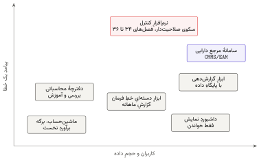
مثال 5.22 (چهار کار، چهار ساختار) پرسش. برای چهار کارِ نیروگاهِ P، پنج پرسش را با نمرهٔ یک تا پنج پاسخ دهید و ساختارِ مناسب را با یک قاعدهٔ ساده انتخاب کنید: برآوردِ نخستِ تولید، گزارشِ عملکردِ ماهانه، فهرستِ دارایی و نگهداری، و کنترلکنندهٔ توانِ نیروگاه.
پاسخ.
case C U D A M -> structure
first-pass yield estimate 2 1 2 3 1 -> calculator, notebook or
spreadsheet with checks
monthly performance report 3 3 4 4 4 -> command-line batch tool +
database + report
asset register and maintenance 4 4 3 5 5 -> database-backed system of
record
plant power controller 5 2 4 5 5 -> control-system software
(certified platform, ch. 34-36)
C consequence of an error, U users, D data volume, A auditability, M years of
maintenance (1 low .. 5 high)تفسیر. قاعدهها سادهاند و نمرهها داوریاند، اما نتیجه همان چیزی است که تجربه میگوید: برآوردِ نخست با برگه یا دفترچهٔ وارسیشده کافی است؛ گزارشِ ماهانه که سالها تکرار میشود ابزارِ دستهای با پایگاهِ داده و گزارش میخواهد؛ فهرستِ دارایی، که منبعِ مرجعِ چند تیم برای بیست سال است، سامانهٔ مرجع با پایگاهِ داده و کنترلِ دسترسی میخواهد (بخش 5.6.4)؛ و کنترلکنندهٔ نیروگاه اصلاً در قلمروِ ابزارهای آموزشی نیست. نرمافزارِ کنترل و حفاظت روی سکوهای صنعتیِ صلاحیتدار، با فرایندهای توسعه و آزمونِ رسمی، و با مسئولیتِ سازنده و بهرهبردار ساخته میشود؛ الزامهایش (از جمله امنیتِ سایبری، به شکلِ دفاعی) در فصلهای ۳۴ تا ۳۶ آمده است.
وقتی ساختار باید عوض شود. ابزارها رشد میکنند: برگهای که یک مهندس برای خودش ساخته، ماهِ بعد برای تیم فرستاده میشود و سالِ بعد مبنای گزارشِ قراردادی است. نشانههای ارتقا: بیش از یک کاربر به آن تکیه میکند؛ نتیجهاش وارد سندی رسمی میشود؛ دادهاش هر ماه بزرگتر میشود؛ کسی میپرسد «این عدد از کجا آمده؟» و پاسخی نیست. در این نقطه، ساختار باید آگاهانه بالا برود (برنامهٔ آزموده، پایگاهِ داده، کنترلِ نسخه)، نه اینکه بیصدا بار ببرد.
5.4.7 پایگاهِ دادهٔ رابطهای
پایگاهِ دادهٔ رابطهای داده را در جدولهایی با کلیدِ اصلی (شناسهٔ یکتای هر سطر) نگه میدارد و جدولها را با کلیدِ خارجی به هم پیوند میدهد: هر سطرِ جدولِ آزمون به برچسبِ یک دارایی اشاره میکند. سه برتریِ مهم بر پروندههای جدا: قیدها (پایگاه سطرِ نامعتبر را نمیپذیرد)، پرسوجو (پرسشهای پیچیده با زبانِ پرسوجوی ساختیافته، SQL)، و تراکنش (مجموعهای از تغییرها یا همه با هم انجام میشوند یا هیچکدام). پایگاهِ سبکی که در کتابخانهٔ استانداردِ پایتون هست برای یک کاربر یا یک ابزار کافی است؛ سامانههای چندکاربره پایگاههای کارسازی دارند، اما مفهومها هماناند.
مثال 5.23 (داراییها و آزمونها در یک پایگاهِ کوچک) پرسش. فهرستِ داراییِ بازنگریِ A را در جدولی با قیدِ ردهٔ اهمیت (فقط A، B یا C) بریزید و چند سطرِ ساختگیِ آزمون اضافه کنید. سپس بپرسید: هر سامانه چند دارایی دارد؟ کدام اینورترها هیچ سابقهٔ آزمونی ندارند؟ کدام آزمونها رد شدهاند؟ در پایان، در یک تراکنش، یک آزمونِ تازه و یک داراییِ نامعتبر (ردهٔ D) بیفزایید و از پایگاه پشتیبان بگیرید.
پاسخ.
assets per system: WTG 48, PVB 10, INV 10, MET 4, TRF 1, SWG 1, SUB 1, PLT 1,
BES 1
inverters without any test record: ['PLP-INV-04']
failed tests: [('PLP-WTG-03', 'functional', '2025-06-25')]
transaction rolled back: CHECK constraint failed: criticality IN ('A','B','C')
test records for PLP-INV-04 after the rollback: 0
backup copy holds 77 assets (sqlite3 backup API)تفسیر. پرسوجوی دوم یک پیوندِ چپ است: همهٔ اینورترها را میآورد و آنهایی را که با هیچ آزمونی جفت نشدهاند جدا میکند؛ این همان پرسشی است که پیش از تحویلِ نیروگاه باید پاسخش «هیچ» باشد (فصلِ ۵۰). تراکنش نشان میدهد چرا قیدها ارزشمندند: چون داراییِ دوم ردهٔ نامعتبر داشت، کلِ تراکنش برگشت و آزمونِ اول هم ثبت نشد؛ پایگاه هرگز نیمهبهروز نمیماند. در یک برگهٔ گسترده، هر دو سطر بیصدا نوشته میشدند.
طراحیِ جدولها. قاعدهٔ پایه یک واقعیت در یک جا است: نامِ سازنده در جدولِ سازندهها میآید و دارایی فقط به آن اشاره میکند، تا تغییرِ نام در یک جا انجام شود. این عادیسازی از ناسازگاری جلوگیری میکند. برای گزارشگیریهای سنگین گاهی آگاهانه از آن چشم میپوشند، اما منبعِ مرجع باید عادی بماند. نمایه روی ستونهایی که زیاد جستوجو میشوند (برچسب، تاریخ) پرسوجو را سریع میکند.
5.4.8 پشتیبانگیری، بازیابی و گزارشِ قابلِ صدور
دادهای که پشتیبان ندارد، دادهای است که هنوز گم نشده. یک قاعدهٔ رایج و ساده میگوید: سه نسخه از داده، روی دو نوعِ رسانهٔ متفاوت، که یکی خارج از محل باشد. سه نکتهٔ کمترگفتهشده:
- پشتیبانِ آزمودهنشده پشتیبان نیست. بازیابی را بهطورِ منظم تمرین کنید و نتیجه را (شمارِ سطرها، هشِ پروندهها) با اصل مقایسه کنید.
- پشتیبان از پایگاهِ دادهٔ در حالِ کار باید با ابزارِ خودِ پایگاه گرفته شود، نه با کپیِ پروندهها، تا نسخهٔ نیمهنوشته ذخیره نشود. نمونهٔ بالا از رابطِ پشتیبانِ خودِ پایگاه استفاده کرد.
- نسخههای تاریخدار نگه دارید: خرابیِ بیصدا (پروندهای که هفتهها پیش آسیب دیده) فقط با نسخهٔ قدیمیتر جبران میشود.
گزارشِ قابلِ صدور. خروجیِ یک ابزارِ مهندسی باید از خودِ ابزار مستقل باشد: یک سندِ ثابت (گزارشِ Markdown یا PDF) و جدولهای داده در قالبی باز (CSV، JSON) با فرهنگِ داده. کسی که ده سال بعد گزارش را میخواند نباید به نسخهٔ خاصی از یک نرمافزار نیاز داشته باشد. ماندگاری و بایگانیِ اطلاعات در بخش 5.6.6 بیشتر بررسی میشود.
- ابزارِ «محاسبهٔ افتِ ولتاژِ یک فیدر برای یک پیشنهادِ اولیه» چه ساختاری میخواهد؟ «محاسبهٔ رسمیِ تنظیمِ رله» چطور؟
- سه نشانهٔ اینکه یک برگهٔ گسترده باید به ابزارِ دیگری ارتقا یابد را بگویید.
- کلیدِ اصلی و کلیدِ خارجی را با مثالِ «دارایی» و «آزمون» توضیح دهید.
- چرا پرسوجوی «اینورترهای بیآزمون» باید پیوندِ چپ باشد و نه پیوندِ ساده؟
- اگر تراکنشی سه سطر بنویسد و سطرِ سوم قید را بشکند، دو سطرِ اول چه میشوند؟
- قاعدهٔ «سه، دو، یک» برای پشتیبان چیست؟ چرا بازیابی را باید تمرین کرد؟
- چرا گزارشِ نهایی باید در قالبی مستقل از ابزارِ سازنده باشد؟
5.4.9 آزمون و کیفیت
آزمون برنامهای است که برنامهٔ دیگری را اجرا میکند و نتیجه را با انتظار مقایسه میکند. آزمونهای خوب سه ویژگی دارند: خودکاراند (با یک فرمان همه اجرا میشوند)، قطعیاند (هر بار همان نتیجه، پس بذرِ عددهای تصادفی ثابت است) و دقیقاند (وقتی میشکنند، میگویند کجا). آزمونها لایهلایهاند (شکل 5.13): پایهای پهن از آزمونهای سریع و دقیق، و بالایی باریک از وارسیهای گرانتر.
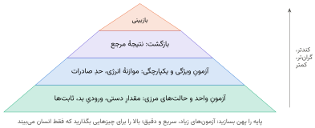
آزمونِ واحد با مقدارِ دستی. یک تابع را با ورودیای میآزماید که پاسخش را مستقل حساب کردهایم. هنرِ کار در انتخابِ ورودی است: ورودیای که محاسبهٔ دستی را ساده کند (دمای سلولِ دقیقاً ۲۵ درجه)، و ورودیای که شاخههای گوناگونِ کد را بپیماید (سقفِ اینورتر، تابشِ صفر، تابشِ منفی):
def test_pv_hand_cases():
# T_air = 25 - 25/800 x 1000 = -6.25 C puts the cell at exactly 25 C
p = float(s3.pv_ac_mw(1000, -6.25, dc_mwp=40))
assert p == pytest.approx(40 * 0.90 * 0.98) # 35.28 MW
assert float(s3.pv_ac_mw(1000, -6.25)) == 50.0 # inverter limit
assert float(s3.pv_ac_mw(0, 20)) == 0.0
hot = float(s3.pv_ac_mw(800, 35, dc_mwp=40)) # T_cell 60 C
assert hot == pytest.approx(40 * 0.8 * (1 - 0.0035 * 35) * 0.9 * 0.98)
with pytest.raises(ValueError):
s3.pv_ac_mw(-1, 20)آزمونِ ویژگی (ناوردا). بهجای یک ورودیِ خاص، ویژگیای را میآزماید که برای هر ورودیِ مجاز باید برقرار باشد، و آن را روی ورودیهای تصادفیِ فراوان امتحان میکند. برای باتری، این ویژگیها فیزیک و قرارداداند: انرژیِ ذخیره هرگز منفی یا بیشتر از ظرفیت نمیشود، باتری از شبکه شارژ نمیشود، صادرات از سقف بالاتر نمیرود، و موازنهٔ انرژی بسته میشود:
def test_rule_based_dispatch_invariants():
rng = np.random.default_rng(7)
eta = math.sqrt(0.86)
for _ in range(20): # 20 random weeks of generation
gen = rng.uniform(0, 110, 24 * 7)
r = dispatch.rule_based_shift(gen, range(9, 15), range(18, 22),
20, 32, 0.86, 100)
ch, dis, soc = r.charge_mw, r.discharge_mw, r.soc_mwh
assert (ch <= np.minimum(gen, 20) + 1e-9).all() # no grid charging
assert (dis <= 20 + 1e-9).all()
assert (soc >= -1e-9).all() and (soc <= 32 + 1e-9).all()
assert (r.export_mw <= 100 + 1e-9).all()
kept = ch.sum() * eta - dis.sum() / eta # energy balance
assert kept == pytest.approx(soc[-1], abs=1e-6)
assert not ((ch > 0) & (dis > 0)).any()آزمونِ ویژگی خطاهایی را میگیرد که به ذهنِ نویسندهٔ آزمونِ واحد نمیرسد: ترکیبِ نادری از تولیدِ زیاد و باتریِ تقریباً پر. موازنهٔ انرژی بهویژه قوی است: اگر جایی در کد یک ضریبِ بازده جا بیفتد یا دو بار اعمال شود، موازنه میشکند.
آزمونِ بازگشت. نتیجهای را که یک بار بررسی و پذیرفته شده نگه میدارد و هر تغییرِ آینده را با آن میسنجد. پروندهٔ نتیجههای مرجعِ بستهٔ داده و پروندهٔ مرجعِ ابزارِ این فصل همین نقش را دارند. آزمونِ بازگشت نمیگوید نتیجه درست است؛ میگوید عوض نشده است. اگر تغییرِ آگاهانهای (مدلِ بهتر) نتیجه را عوض کند، مرجع با یک تصمیمِ ثبتشده بهروز میشود، نه بیصدا.
دادهٔ آزمون. آزمونها به داده نیاز دارند و این داده باید کوچک، معلوم و نسخهدار باشد. بستهٔ داده زیرمجموعههای یک روزه و یک هفتهای دارد و پروندهٔ خامش ایرادهای عمدیِ مستند دارد (بخش 5.5.1) تا آزمون بداند چه چیزی را باید پیدا کند. دادهٔ واقعی برای آزمون کمتر مناسب است: پاسخِ درستش را نمیدانیم.
5.4.10 نمونههای آزمون: مرزها و دامها
خطاها در لبهها پنهان میشوند. فهرستِ زیر لبههایی است که هر ابزارِ دادهٔ نیروگاه باید آزموده شود:
- ورودیِ صفر، منفی و بیرون از بازه (ظرفیتِ صفر، تابشِ منفی، تندیِ صدمتری)؛
- مُهرِ زمانِ گمشده و تکراری، و مُهرِ بیمنطقه؛
- مرزهای ساعتِ تابستانی و منطقهٔ زمانی (روزِ ۲۳ و ۲۵ ساعته)؛
- ناهمخوانیِ یکا (کیلووات بهجای مگاوات)؛
- لبههای عددی (آرایهٔ خالی، «نهعدد»، سرریز، تقسیم بر صفر)؛
- پروندههای خراب (جداکنندهٔ دیگر، سطرِ ناقص، میدانِ اضافه، نشانهٔ ترتیبِ بایت، سرسطرِ اشتباه)؛
- و تغییرهایی که نباید نتیجهٔ مرجع را عوض کنند (بازسازی، تغییرِ نامِ متغیر، کتابخانهٔ تازه).
مثال 5.24 (کد در لبهها چه میکند؟) پرسش. چند ورودیِ لبه را به تابعهای این فصل و به کتابخانههای عددی بدهید و رفتار را ثبت کنید.
پاسخ.
inputs at the edges, and what the code does:
capacity_factor(100, 0) -> ValueError: rated power and hours
must be positive
capacity_factor(-5, 60) -> ValueError: energy cannot be
negative
pv_ac_mw([], []) -> array([], dtype=float64)
np.sum([1.0, nan]) -> np.float64(nan)
np.nansum([1.0, nan]) -> np.float64(1.0)
np.mean([]) -> np.float64(nan)
check_timestamps(['2023-01-01T00:00']) -> ["row 0: '2023-01-01T00:00' has no
UTC offset"]
1e308 * 10 -> inf
float('nan') == float('nan') -> Falseتفسیر. دو رفتارِ خوب (تابعِ ضریبِ ظرفیت برای ورودیِ بیمعنا خطای روشن میدهد؛ مدلِ خورشیدی آرایهٔ خالی را بیدردسر برمیگرداند) و چند رفتار که باید آگاهانه پذیرفت: جمعِ معمولی با یک «نهعدد» خودش «نهعدد» میشود (خوب، چون گمشدگی را نشان میدهد)، اما جمعِ «بینهعدد» آن را بیصدا نادیده میگیرد (خطرناک اگر ندانیم چند مقدار حذف شده)؛ میانگینِ آرایهٔ خالی «نهعدد» است و فقط یک هشدار میدهد؛ سرریزِ ممیزِ شناور بینهایت میسازد و خطا نمیدهد؛ و «نهعدد» با خودش برابر نیست. هر کدام از اینها باید در آزمونها بیاید تا رفتارِ ابزار در لبهها تصمیمِ مستند باشد، نه تصادف.
آزمونِ مرزِ ساعتِ تابستانی. هجده بازهٔ دهدقیقهای از نیمهشبِ روزِ تغییرِ ساعت در منطقهای با ساعتِ تابستانی میسازیم و میسنجیم که تجمیع سه ساعتِ کامل بدهد و این سه ساعت به ساعتهای محلیِ صفر، یک و سه بیفتند:
def test_hourly_aggregation_across_a_clock_change():
import zoneinfo
berlin = zoneinfo.ZoneInfo("Europe/Berlin")
start = datetime(2023, 3, 26, 0, 0, tzinfo=berlin).astimezone(timezone.utc)
times = [start + timedelta(minutes=10 * k) for k in range(18)] # 3 h
out = dataio.aggregate_hourly(times, [1.0] * 18)
assert len(out) == 3 and all(n == 6 for _, n in out.values())
local_hours = {h.astimezone(berlin).hour for h in out}
assert local_hours == {0, 1, 3} # 02:00 does not exist thereآزمونِ پروندهٔ خراب. یک پروندهٔ کوچک با پنج نوع ایراد در یک جا ساخته و خواننده با آن سنجیده میشود:
def test_reader_reports_malformed_lines(tmp_path):
bad = tmp_path / "bad.csv"
bad.write_text("time_utc;energy_kwh;availability_pct\n"
"2023-04-03T08:00:00Z;12,5;100\n"
"2023-04-03T09:00:00Z;abc;100\n"
"2023-04-03T10:00:00+04:00;5;100\n"
"2023-04-03T11:00:00Z;99999;100;extra\n"
"2023-04-03T12:00:00Z;-1;140\n", encoding="utf-8")
rows, issues = s2.read_scada(bad)
text = " | ".join(issues)
for needle in ("could not convert", "is not UTC", "4 fields",
"out of range"):
assert needle in text
assert rows[0]["energy_mwh"] == pytest.approx(0.0125) # 12,5 kWh
head = tmp_path / "header.csv"
head.write_text("time;kwh\n", encoding="utf-8")
rows, issues = s2.read_scada(head)
assert rows == [] and issues[0].startswith("header")5.4.11 آزمونِ آزمونها: جهش
از کجا بدانیم آزمونها خوباند؟ آزمونی که هیچوقت نمیشکند ممکن است چیزی را نسنجد. آزمونِ جهش پاسخِ هوشمندانهای است: کد را عمداً کمی خراب میکنیم (یک «کوچکتر یا برابر» را «کوچکتر» میکنیم، یک عدد را عوض میکنیم، یک تقسیم را ضرب میکنیم) و میبینیم آزمونها این جهشیافته را «میکشند» یا نه. جهشیافتهای که زنده بماند، رفتاری را نشان میدهد که هیچ آزمونی نمیسنجد.
مثال 5.25 (پنج جهش در تابعِ ضریبِ ظرفیت) پرسش. پنج جهش در تابعِ ضریبِ ظرفیت بسازید و هر کدام را یک بار با آزمونِ «ضعیف» (فقط یک مقدار با رواداریِ یک درصد) و یک بار با آزمونِ «قوی» (دو مقدار با دقتِ بالا و سه ورودیِ نامعتبر) بسنجید.
پاسخ.
mutant weak tests strong tests
'<= 0 or' -> '< 0 or' survived killed
'hours=8760' -> 'hours=8784' survived killed
'/ (rated_mw' -> '* (rated_mw' killed killed
'or hours <= 0' -> 'and hours <= 0' survived killed
'raise ValueError' -> 'return 0.0 #' survived killedتفسیر. آزمونِ ضعیف فقط یکی از پنج جهش را کشت: جهشی که تقسیم را ضرب میکرد و عدد را صدها میلیارد برابر میکرد. عوض کردنِ ۸۷۶۰ با ۸۷۸۴ (سالِ کبیسه) خطای 0.3 % میسازد که در رواداریِ یک درصد پنهان میشود، و سه جهشِ دیگر فقط مسیرِ خطا را عوض میکنند که آزمونِ ضعیف اصلاً امتحانش نمیکند. آزمونِ قوی هر پنج را کشت. درس: (۱) رواداری را تنگ بگیرید، به اندازهٔ دقتِ واقعیِ محاسبه، نه به اندازهٔ «تقریباً درست»؛ (۲) مسیرهای خطا را هم بیازمایید؛ (۳) ابزارهای خودکارِ آزمونِ جهش همین کار را روی کلِ کد انجام میدهند.
5.4.12 بازبینیِ کد و وارسیِ ایستا
بازبینیِ کد یعنی نفرِ دومی کد را پیش از پذیرش بخواند. بازبینی خطاهایی را میگیرد که آزمون نمیگیرد: فرضِ اشتباه، الزامِ بدفهمیده، نامِ گمراهکننده، مستندِ ناقص، و کدی که «کار میکند» اما نباید پذیرفته شود. فهرستِ وارسیِ بازبینِ یک ابزارِ مهندسی:
- آیا تغییر با یک الزام یا مسئله پیوند دارد و دامنهاش همان است؟
- آیا یکاها در نامها، ورودیها و خروجیها روشن و سازگارند؟
- آیا هر ثابتِ تازه نام، یکا و منبع دارد؟ آیا فرضِ تازه در دفترِ فرضها ثبت شده است؟
- آیا ورودیهای نادرست و لبهها مدیریت شدهاند، بیآنکه خطایی بیصدا بلعیده شود؟
- آیا آزمونِ تازه، رفتارِ تازه و مسیرِ خطا را میسنجد؟ آیا همهٔ آزمونها سبزند؟
- آیا نتیجهٔ مرجع عوض شده است؟ اگر بله، آیا دلیلش ثبت شده است؟
- آیا مستندات (رشتهٔ مستند، «مرا بخوان»، تغییرنامه) بهروز است؟
- آیا وابستگیِ تازهای اضافه شده؟ اگر بله، بازبینیِ وابستگی (بخش 5.4.17) انجام شده است؟
وارسیِ ایستا کد را بیاجرا میخواند و ایرادهای قالب، نامهای تعریفنشده، واردکردنهای بیاستفاده، ناسازگاریِ نوع و الگوهای خطرناک را گزارش میکند. سادهترینش ترجمهٔ همهٔ پروندهها برای یافتنِ خطای نحو است؛ ابزارهای پیشرفتهتر قاعدههای سبک و راهنماهای نوع را هم وارسی میکنند. وارسیِ ایستا ارزان است و باید پیش از بازبینیِ انسانی اجرا شود، تا وقتِ بازبین صرفِ فاصله و ویرگول نشود.
5.4.13 خطلولهٔ ساخت و آزمون
خطلوله همهٔ وارسیها را به ترتیب و خودکار اجرا میکند و فقط وقتی «اجازهٔ انتشار» میدهد که همه سبز باشند. در پروژههای بزرگ، یک کارسازِ یکپارچهسازیِ پیوسته این کار را برای هر تغییر انجام میدهد؛ برای ابزارِ این فصل یک برنامهٔ ساده کافی است که چهار مرحله دارد و هر مرحله فقط اگر قبلی سبز باشد اجرا میشود:
def stage(name, ok, detail=""):
tail = f" - {detail}" if detail else ""
print(f"[{'PASS' if ok else 'FAIL'}] {name}{tail}")
return ok
def main():
from plantp import datapack
from companion.ch05.resource_tool import run
ok = stage("data pack checksums",
not datapack.verify("1.0.0") and not datapack.verify("1.1.0"))
for rel in ("1.0.0", "1.1.0") if ok else ():
p = subprocess.run([sys.executable, "companion/plantp_data/"
"generate_release.py", "--release", rel,
"--check"],
cwd=ROOT, capture_output=True, text=True)
ok = stage(f"generator reproduces {rel}", p.returncode == 0,
p.stdout.strip()) and ok
if ok:
p = subprocess.run([sys.executable, "-m", "pytest", "-p",
"no:cacheprovider",
"companion/tests/test_ch05_tool.py",
"companion/tests/test_ch05_modules.py"],
cwd=ROOT, capture_output=True, text=True)
m = re.search(r"(\d+) passed", p.stdout)
ok = stage("unit and property tests", p.returncode == 0,
f"{m.group(1) if m else 0} passed")
if ok:
res, _ = run.run(run.load_config(
ROOT / "companion/ch05/config/run_S0.yml"))
ref = json.loads(REFERENCE.read_text(encoding="utf-8"))
diff = {k: (ref[k], res[k]) for k in ref if res.get(k) != ref[k]}
ok = stage("regression against reference_S0.json", not diff,
f"differences {diff}" if diff else f"{len(ref)} values")
print("RESULT:", "release may proceed" if ok else "STOP - fix first")
return 0 if ok else 1$ python -m companion.ch05.check_all
[PASS] data pack checksums
[PASS] generator reproduces 1.0.0 - release 1.0.0: 16 files identical
[PASS] generator reproduces 1.1.0 - release 1.1.0: 22 files identical
[PASS] unit and property tests - 37 passed
[PASS] regression against reference_S0.json - 6 values
RESULT: release may proceed
[exit code 0]مرحلهها از ارزان به گران چیده شدهاند: هشِ پروندههای داده (ثانیه)، بازسازیِ هر دو نسخهٔ بستهٔ داده از بذر و مقایسهٔ بایتبهبایت، آزمونهای واحد و ویژگی، و آزمونِ بازگشت در برابرِ نتیجهٔ مرجع. خطلولهای که در هر مرحله دلیلِ شکست را بگوید، روشِ انتشار را از یک تصمیمِ سلیقهای به یک واقعیتِ قابلِ وارسی تبدیل میکند.
- سه ویژگیِ آزمونِ خوب را نام ببرید. چرا بذرِ عددهای تصادفی در آزمون ثابت است؟
- چرا ورودیِ «دمای هوای −6.25 °C و تابشِ 1000 W/m²» برای آزمونِ مدلِ خورشیدی انتخاب شد؟
- یک ناوردای دیگر برای شبیهسازیِ باتری پیشنهاد کنید.
- تفاوتِ «آزمونِ بازگشت سبز است» با «نتیجه درست است» چیست؟
- چهار لبه را نام ببرید که ابزارِ خواندنِ دادهٔ دهدقیقهای باید آزموده شود.
- چرا جمعِ «بینهعدد» در گزارشِ تولید خطرناک است؟ چه چیزی باید کنارش گزارش شود؟
- اگر یک جهشیافته زنده بماند، چه نتیجهای میگیرید؟
- سه پرسش از فهرستِ بازبینی را بگویید که بهویژه برای کدِ مهندسی مهماند.
- چرا خطلوله مرحلهها را از ارزان به گران میچیند؟
5.4.14 کنترلِ نسخه، شاخه و بازبینی
کنترلِ نسخه هر تغییرِ کد را بهصورتِ یک ثبت نگه میدارد: چه چیزی عوض شد، چه کسی، کی، و با چه توضیحی. مخزنِ کنترلِ نسخه تاریخچهٔ کاملِ پروژه است و پاسخِ پرسشهایی مانندِ «این خط از کی اینطور است و چرا؟» یا «نسخهای که گزارشِ پارسال را ساخت کدام بود؟» را میدهد. چهار مفهومِ پایه (شکل 5.14):
- ثبت: یک تغییرِ کامل و منسجم با توضیحی که «چرا» را میگوید، نه فقط «چه».
- شاخه: خطِ کارِ جداگانه برای یک تغییر، تا شاخهٔ اصلی همیشه سالم و آزموده بماند.
- درخواستِ ادغام و بازبینی: پیش از پیوستنِ شاخه به شاخهٔ اصلی، نفرِ دوم آن را بازبینی و خطلوله آن را آزمون میکند.
- برچسب: نامی ماندگار برای یک ثبت (مانندِ v1.1.0)، تا نسخهای که به کار رفته برای همیشه پیدا شود.
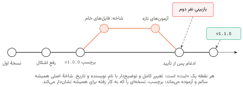
فهرستِ مسئلهها کنارِ مخزن، هر اشکال، درخواست و الزامِ معوق را با شناسه، وضعیت و مسئول نگه میدارد؛ هر ثبت به مسئلهٔ خودش اشاره میکند. نتیجه یک زنجیرهٔ ردیابی است: الزام \(\leftarrow\) مسئله \(\leftarrow\) ثبت \(\leftarrow\) آزمون \(\leftarrow\) انتشار. چیدمانِ مخزن هم قرارداد دارد: کد، آزمون، مستندات و پیکربندیهای نمونه در مخزن؛ دادهٔ حجیم و خروجیهای بازساختنی بیرونِ آن (با هش و پیوند)؛ و هیچ رمز یا کلیدِ دسترسی در مخزن، حتی برای یک ثبت، چون تاریخچه پاک نمیشود.
5.4.15 چرخهٔ عمرِ نرمافزار
یک ابزارِ مهندسی، مانندِ هر داراییِ نیروگاه، چرخهٔ عمر دارد (شکل 5.15): نیاز و خطمبنای الزامها، یادداشتِ معماری، ساخت و آزمون در مخزن، بازبینی، انتشارِ برچسبدار با تغییرنامه و قفلِ وابستگی، پشتیبانی (مسئلهها و وصلهها)، تغییر (درخواست و تحلیلِ اثر)، و سرانجام بازنشستگی. هر مرحله سندی پایدار میگذارد، و هر نتیجهای که به کارِ پروژه رفته، به نسخهٔ ابزار و دادهٔ آن ردیابیپذیر است. ISO/IEC/IEEE 12207:2026 همین فرایندها را با جزئیاتِ بیشتر برای سازمانها تعریف کرده است؛ برای ابزارِ کوچکِ یک تیمِ مهندسی، نسخهٔ سبکی از آن کافی است، به شرطی که هیچ مرحلهای حذف نشود.
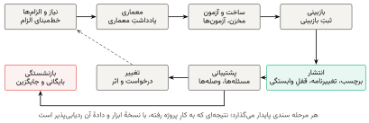
5.4.16 انتشار، شمارهٔ نسخه، تغییرنامه و قفلِ وابستگی
انتشار لحظهای است که نسخهای از ابزار یا داده برای استفادهٔ دیگران منجمد میشود. هر انتشار سه چیز دارد: شمارهٔ نسخه، تغییرنامه (چه چیزی، چرا و با چه اثری بر کاربران عوض شد) و قفلِ وابستگی (نسخههای دقیقِ کتابخانهها).
نسخهگذاریِ معنایی (Semantic Versioning 2.0.0) شمارهٔ نسخه را سهجزئی و معنادار میکند: اصلی.فرعی.وصله. وصله برای رفعِ اشکالی که رفتارِ درست را برمیگرداند و سازگار است؛ فرعی برای افزودنِ امکانِ تازهٔ سازگار؛ اصلی برای هر تغییرِ ناسازگار. این قاعده برای داده هم به کار میرود: افزودنِ پرونده یا ستونِ تازه فرعی است، اما تغییرِ معنای یک ستون یا اصلاحِ دادهای که نتیجههای پیشین را عوض کند، اصلی است.
مثال 5.26 (مرتبسازیِ نسخهها و افزایشِ شماره) پرسش. پنج شمارهٔ نسخه را یک بار بهصورتِ متن و یک بار بهصورتِ عدد مرتب کنید. از 1.0.0 برای رفعِ اشکال، افزودنِ پرونده و تغییرِ سریها چه نسخهای ساخته میشود؟
پاسخ.
sorted as text: ['1.0.0', '1.1.0', '1.10.0', '1.9.0', '2.0.0']
sorted as numbers: ['1.0.0', '1.1.0', '1.9.0', '1.10.0', '2.0.0']
from 1.0.0: bug fix -> 1.0.1; new files only -> 1.1.0; changed series -> 2.0.0
data pack 1.0.0 -> 1.1.0: files added, none changed in meaning -> minorتفسیر. مرتبسازیِ متنی 1.10.0 را پیش از 1.9.0 میگذارد، چون «۱» پیش از «۹» میآید: هر برنامهای که «آخرین نسخه» را با مقایسهٔ متن پیدا کند، روزی نسخهٔ غلط را برمیدارد. شمارهٔ نسخه را جزءبهجزء و عددی مقایسه کنید. انتشارِ 1.1.0ِ بستهٔ دادهٔ نیروگاهِ P فرعی است چون فقط پرونده افزوده و هیچ معنایی را عوض نکرده است (بخش 5.7.1).
قفلِ وابستگی. پروندهٔ قفل نسخهٔ دقیقِ هر کتابخانه (و در کارِ حساس، هشِ بستهٔ آن) را نگه میدارد تا نصبِ امروز و نصبِ سالِ بعد یکی باشند. این قفل را همراهِ برچسبِ انتشار نگه دارید؛ نتیجهای که با نسخهٔ 1.0.0ِ ابزار ساخته شده، فقط با همان قفل بازتولیدِ دقیق دارد.
5.4.17 چرخهٔ عمرِ ایمنِ نرمافزارِ مهندسی
نرمافزارِ مهندسی معمولاً به دهها کتابخانهٔ دیگران تکیه دارد و دادهٔ منابعِ گوناگون را میخواند. ایمنیِ چرخهٔ عمر یعنی بدانیم چه چیزی وارد پروژه میشود و بتوانیم هر چیزی را بازیابی کنیم. این درس از دیدِ دفاعی است:
- بازبینیِ وابستگی: پیش از افزودنِ کتابخانه بپرسید: چه کسی نگهش میدارد؟ چقدر رایج و فعال است؟ مجوزش چیست؟ آیا واقعاً لازم است؟ نامِ بسته را دقیق وارسی کنید (بستههایی با نامهای شبیه به بستههای مشهور وجود دارند)، از مخزنِ رسمی نصب کنید، نسخه را پین و در کارِ حساس هش را وارسی کنید، و هشدارهای امنیتیِ وابستگیها را دنبال کنید.
- پشتیبان و بازیابیِ مخزن: مخزن و فهرستِ مسئلهها هم داراییاند و پشتیبان میخواهند (بخش 5.4.8).
- مجوز و پیشینهٔ داده: دادهٔ دیگران مجوز دارد (اجازهٔ استفاده، انتشار، تغییر). پیش از به کار بردن، مجوز را بخوانید و منبع و مجوز را در فرادادهٔ پروژه ثبت کنید.
- جدایی از سامانههای عملیاتی: ابزارهای تحلیلی با رونوشتِ داده کار میکنند، نه با اتصال به سامانههای کنترل؛ و هیچ رمزی در کد یا پروندههای پیکربندیِ مشترک ذخیره نمیشود. الزامهای امنیتِ سایبریِ سامانههای عملیاتیِ نیروگاه موضوعِ فصلِ ۳۶ است.
5.4.18 کدِ تولیدشده با هوش مصنوعی یا کپیشده
ابزارهای هوش مصنوعی امروز کد مینویسند، و اینترنت پر از نمونهکدی است که میشود کپی کرد. هر دو مفیدند و هر دو یک خطرِ مشترک دارند: کدی که درست به نظر میرسد و نیست. کدِ تولیدشده معمولاً خوانا، تمیز و با اطمینان نوشته شده است؛ خطاهایش در فرضها است: یکای نانوشته، قراردادِ زمانی، رفتار با دادهٔ گمشده، سالِ کبیسه. مسئولیتِ کد با کسی است که آن را میپذیرد، نه با ابزاری که آن را پیشنهاد داد.
مثال 5.27 (بازبینیِ یک تابعِ پیشنهادی) پرسش. تابعِ زیر بهعنوانِ «ضریبِ ظرفیتِ سالانه از توانِ ساعتی» پیشنهاد شده است. آن را با دادهٔ معلوم بیازمایید و بازبینی کنید.
def annual_capacity_factor(df, rated_mw):
"""Capacity factor of a plant from hourly power in MW."""
hours = 8784
df["hour"] = df.index.hour
return df["p_mw"].mean() * hours / (rated_mw * hours)پاسخ.
constant 30 MW all year on 60 MW: expected 0.500, function gives 0.500
same data with 500 missing hours: 0.500 (mean hides the gap);
if the plant really produced nothing then: 0.471 - only the
data owner can say, so the gap must be reported, not averaged away
side effect: caller's table gained columns ['hour']
findings: 8784 is a leap year but cancels; missing hours not reported;
input table modified; no units, no checks -> rewrite with testsتفسیر. تابع برای دادهٔ کامل پاسخِ درست میدهد، که دقیقاً چیزی است که بازبینِ عجول امتحان میکند. اما (۱) عددِ ۸۷۸۴ (سالِ کبیسه) در صورت و مخرج خنثی میشود و فقط خواننده را گمراه میکند؛ (۲) با میانگین گرفتن، ۵۰۰ ساعتِ گمشده بیصدا حذف میشوند و تابع ضریبِ 0.500 میدهد، در حالی که اگر نیروگاه در آن ساعتها تولیدی نداشته، پاسخ 0.471 است، و تابع حتی نمیگوید داده ناقص بوده؛ (۳) جدولِ کاربر را تغییر میدهد (ستونِ تازه)، اثری جانبی که ممکن است کدِ دیگری را بشکند؛ (۴) نه یکا را وارسی میکند، نه ورودیِ نامعتبر را. قاعدههای پذیرشِ کدِ تولیدشده یا کپیشده: هر خط را بفهمید پیش از پذیرش؛ با دادهٔ معلوم و لبهدار بیازمایید، نه فقط با حالتِ خوشبینانه؛ فرضها (یکا، زمان، گمشدگی) را صریح کنید؛ منبع و مجوزِ کدِ کپیشده را ثبت کنید؛ و همان بازبینی و آزمونی را بخواهید که برای کدِ دستنوشته میخواهید.
5.4.19 پشتیبانی و بازنشستگی
ابزاری که منتشر شد، پشتیبانی میخواهد: کسی که مسئلهها را پاسخ دهد، وصلهها را منتشر کند و کاربران را از تغییرها آگاه کند. ابزاری که پشتیبان ندارد باید این را صریحاً بگوید. بازنشستگی هم یک مرحلهٔ طراحیشده است: اعلامِ پایان با زمانِ کافی، معرفیِ جایگزین و روشِ مهاجرتِ داده، بایگانیِ آخرین نسخه با قفلِ وابستگی، مستندات و نتیجههای مرجع، و فهرستی از گزارشهایی که با این ابزار ساخته شدهاند تا اگر روزی اشکالی در آن پیدا شد، بتوان بازبینیشان کرد. نیروگاه بیست و پنج سال کار میکند؛ ابزارهای تحلیلیِ آن چند بار عوض میشوند، اما نتیجههایی که در پروندهٔ نیروگاه ماندهاند باید همچنان قابلِ ردیابی باشند.
- توضیحِ ثبتِ «اصلاح» چه ایرادی دارد؟ یک توضیحِ خوب برای رفعِ اشکالِ سرریزِ شمارنده بنویسید.
- چرا شاخهٔ اصلی باید همیشه آزموده و سالم بماند؟
- زنجیرهٔ ردیابی از الزام تا انتشار را بنویسید.
- نسخهٔ بعدِ 2.3.1 برای افزودنِ یک فرمانِ تازه چیست؟ برای حذفِ یک فرمانِ قدیمی؟
- چرا تغییرِ معنای یک ستون در بستهٔ داده انتشارِ اصلی میخواهد، حتی اگر نامِ ستون عوض نشود؟
- سه پرسش پیش از افزودنِ یک کتابخانهٔ تازه بنویسید.
- چرا رمزِ دسترسی نباید حتی یک بار در مخزن ثبت شود؟
- چهار ایرادِ تابعِ پیشنهادیِ ضریبِ ظرفیت را بگویید و تابعِ درست را به شبهکد بنویسید.
- هنگامِ بازنشستگیِ یک ابزار چه چیزهایی باید بایگانی شود؟
5.4.20 نقشه، مدلِ سهبعدی و طراحیِ رایانهای
بخشِ بزرگی از اطلاعاتِ مهندسیِ نیروگاه در مدلها و نقشههاست، نه در جدولها: نقشهٔ استقرار، نمودارِ تکخطی، نقشهٔ ساختِ فلنج، مدلِ سهبعدیِ پست و مدلِ تحلیلیِ برج. فصلِ ۴ خواندنِ نقشهٔ دوبعدی (نما، برش، ابعاد، رواداری، علامتهای جوش و زبری) را آموزش داد. اینجا سه نکتهٔ رایانهای را میافزاییم:
- مدلِ سهبعدی و نقشه. در طراحیِ رایانهای امروز، مدلِ سهبعدی منبع است و نقشههای دوبعدی از آن تولید میشوند. مدلِ یک مجموعه (مثلاً ناسل) از قطعهها و قیدهای مونتاژ ساخته شده است و فهرستِ قطعات را تولید میکند. خواندنِ مدلِ سهبعدی یعنی دانستنِ اینکه کدام قطعه با کدام شماره و بازنگری در آن است، کدام ابعاد راهنما هستند و کدام کنترلی، و اینکه مدل کدام وضعیتِ مونتاژ را نشان میدهد.
- قالبهای تبادل. هر نرمافزارِ طراحی قالبِ بومیِ خودش را دارد؛ برای تبادل میانِ سازمانها، قالبهای خنثی (برای مدلِ جامد و برای نقشهٔ دوبعدی) و برای ساختمان و زیرساخت، مدلهای اطلاعاتیِ ساختمان به کار میروند. تبدیلِ قالب ممکن است اطلاعات (رواداری، فراداده، پیوندِ قطعات) را از دست بدهد؛ پس پس از هر تبدیل باید چیزهای مهم وارسی شوند.
- کنترلِ پیکربندی. مدل و نقشه سند هستند: شماره، بازنگری و وضعیت دارند (فصلِ ۲) و تغییرشان کنترل میشود. ساخت فقط از روی نسخهٔ صادرشده برای ساخت مجاز است.
5.4.21 گونهها و وضعیتِ مدلها
واژهٔ «مدل» در مهندسی چند معنا دارد و اشتباه گرفتنِ آنها خطرناک است:
| گونه | پرسشی که پاسخ میدهد | نمونه در نیروگاهِ P | سطحِ اعتماد |
|---|---|---|---|
| مفهومی | چه اجزایی و چه رابطهای؟ | نمودارِ بلوکیِ نیروگاه، فصلِ ۱ | برای فهم و گفتوگو |
| تحلیلی | با فرمولهای بسته چقدر؟ | رانش و گشتاورِ برج، فصلِ ۴ | برای غربالگری، با فرضهای صریح |
| شبیهسازی | با حلِ عددیِ معادلهها چقدر و کجا؟ | المانِ محدودِ برج، شبیهسازیِ ساعتیِ تولید | پس از همگرایی و اعتبارسنجی |
| طراحیِ صادرشده | دقیقاً چه بسازیم؟ | مدل و نقشهٔ صادرشده برای ساخت | مبنای قرارداد و ساخت |
هر مدل فرضهایی دارد که باید همراهش نوشته شود: مرزها و قیدها (پایهٔ برج گیردار است یا فنری؟)، خواصِ مواد، بارها، سادهسازیها (سوراخها و جوشها حذف شدهاند؟) و دامنهٔ اعتبار. مدلِ بدونِ فهرستِ فرضها، مانندِ عددِ بدونِ یکا، قابلِ داوری نیست. دفترِ مدلهای نیروگاهِ P (PLP-GEN-REG-0001، فصلِ ۳) برای همین ساخته شد و هر مدلِ تازه، از جمله مدلهای این فصل، در آن ثبت میشود.
5.4.22 شبکهبندی و همگرایی
شبیهسازیهای عددی (المانِ محدود برای سازه، حجمِ محدود برای جریانِ هوا و گرما) قلمرو را به المانهای کوچک میشکنند. با ریزتر شدنِ شبکه، پاسخ باید به مقدارِ ثابتی همگرا شود؛ تا وقتی که همگرایی نشان داده نشده، پاسخ تابعِ شبکه است، نه تابعِ فیزیک. مطالعهٔ همگرایی یعنی همان مسئله را با چند شبکهٔ ریزترشونده حل کنیم و تغییرِ پاسخ را بسنجیم؛ فصلِ ۳ همین ایده را برای گامِ زمانی (اویلر و رونگه–کوتا) و برونیابیِ ریچاردسون نشان داد.
مثال 5.28 (همگراییِ بسامدِ اولِ برج) پرسش. برجِ لولهای فصلِ ۴ (قطرِ 4.5 m، ضخامتِ 45 mm، طولِ 100 m، فولاد؛ A-050) را بیجرمِ بالایی با ۱، ۲، ۴، ۸ و ۱۶ المانِ تیرِ خمشی مدل کنید و بسامدِ اول را با پاسخِ دقیقِ تیرِ یکسرگیردار مقایسه کنید. سپس جرمِ ۳۵۰ تنیِ روتور و ناسل را بیفزایید.
پاسخ.
tower without top mass; exact f1 = beta^2/(2 pi) sqrt(EI/(m L^4)), beta =
1.875104 (root of cos b cosh b = -1): 0.455901 Hz
elements frequency (Hz) error
1 0.458069 +4.75e-01 %
2 0.456121 +4.83e-02 %
4 0.455916 +3.27e-03 %
8 0.455902 +2.08e-04 %
16 0.455901 +1.31e-05 %
with the 350 t top mass: 0.2310, 0.2310, 0.2310 Hz (4, 8, 16 elements)
synthetic 'measured' frequency 0.221 Hz: model is +4.5 % high
a converged mesh does not make a model right: the clamped base ignores
foundation and soil flexibility (chapter 30) - calibrate, then re-check
a rotational base spring of 116 GN m/rad reproduces the measurement (one
fitted parameter)
check the calibrated model against a SECOND measurement before trusting it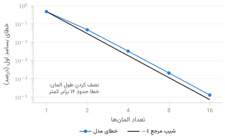
تفسیر. با یک المان خطا نیم درصد است و با هر دو برابر کردنِ تعدادِ المان حدودِ شانزده برابر کم میشود: همگراییِ مرتبهٔ چهار که برای این نوع المان انتظار میرود. شیبِ خط در نمودارِ لگاریتمی همان مرتبه است، و دیدنِ مرتبهٔ مورد انتظار خودش یک وارسیِ درستیِ کد است. یک نکتهٔ ظریف: در نسخهٔ اولِ این مثال، «پاسخِ دقیق» با ضریبِ گردشدهٔ 1.8751 حساب شده بود و خطا از ۸ المان به بعد دیگر کم نمیشد، چون خطای گرد کردنِ پاسخِ «دقیق» از خطای شبکه بزرگتر شده بود. ضریب از معادلهٔ مشخصهٔ تیر با ریشهیاب دوباره حساب شد (\(\beta_1 = 1.875104\)) و همگرایی تا ۱۶ المان دیده شد. مرجعی که با آن مقایسه میکنید هم باید دقیقتر از چیزی باشد که میسنجید.
5.4.23 اعتبارسنجی در برابرِ اندازهگیری
سه واژه را از هم جدا کنید: وارسی («آیا معادلهها را درست حل میکنیم؟»، با همگرایی و مقایسه با پاسخِ دقیق)، اعتبارسنجی («آیا معادلههای درست را حل میکنیم؟»، با مقایسه با اندازهگیریِ مستقل)، و واسنجی (تنظیمِ پارامترهای نامعلوم تا مدل با اندازهگیری بخواند). همگرایی شرطِ لازمِ اعتماد است، نه شرطِ کافی.
در مثال 5.28، مدلِ همگراشدهٔ برج با جرمِ بالایی بسامدِ 0.2310 Hz میدهد، اما یک اندازهگیریِ ساختگیِ راهاندازی (A-098) 0.221 Hz گزارش کرده است: مدل 4.5 % بالاتر است. علت فرضِ مدل است نه شبکه: پایهٔ برج کاملاً گیردار فرض شده، در حالی که فونداسیون و خاک کمی میچرخند (فصلِ ۳۰). افزودنِ یک فنرِ چرخشی در پایه و یافتنِ سختیای که اندازهگیری را بازتولید کند (حدودِ 116 GN·m/rad) یک واسنجیِ تکپارامتری است. دو هشدار: (۱) واسنجی با یک اندازهگیری همیشه موفق است و چیزی را ثابت نمیکند؛ مدلِ واسنجیشده باید با اندازهگیریِ دوم و مستقل (بسامدِ دوم، یا تغییرِ شکل زیرِ بارِ معلوم) سنجیده شود؛ (۲) پارامترِ واسنجیشده باید از نظرِ فیزیکی معقول باشد و با برآوردِ مستقلِ سختیِ فونداسیون مقایسه شود. مدلی که با هر پارامترِ دلخواهی جور شود، اعتبار نیافته، فقط برازش شده است.
- تفاوتِ «ابعادِ راهنما» و «ابعادِ کنترلی» در یک نقشه چیست؟
- چرا ساخت فقط باید از روی نسخهٔ صادرشده برای ساخت انجام شود؟
- مدلِ برجِ فصلِ ۴ از کدام گونه بود؟ مدلِ المانِ محدودِ این فصل از کدام؟
- سه فرضِ مدلِ برجِ این فصل را بنویسید.
- اگر خطا با دو برابر شدنِ المانها فقط نصف شود، مرتبهٔ همگرایی چند است؟
- چرا «پاسخِ دقیقِ» گردشده همگرایی را پنهان کرد؟
- وارسی، اعتبارسنجی و واسنجی را برای مدلِ تولیدِ خورشیدیِ این فصل مثال بزنید.
- چرا واسنجی با یک اندازهگیری چیزی را ثابت نمیکند؟
5.5 د. آزمایشگاههای محاسباتیِ کاربردی
این بخش مهارتهای الف تا ج را روی شش مسئلهٔ واقعیِ نیروگاهِ P به کار میبرد: اعتبارسنجیِ دادهٔ خامِ منبع، مدلِ دما و تابشِ خورشیدی، انتگرالگیری از منحنیِ توان، شبیهسازیِ انرژیِ ذخیره و توزیعِ باتری، حسابِ تلفاتِ کابل و ترانسفورماتور، و جریانِ نقدیِ قابلِ حسابرسی با معیارهای بدهی و حساسیت. هر آزمایشگاه یک وارسیِ دستی دارد که برنامه را تأیید میکند و یک فهرستِ محدودیت که میگوید نتیجه کجا معتبر نیست. همهٔ محاسبهها با بستهٔ دادهٔ 1.1.0، سناریوی S0 (و S1 برای باتری) و مدلهای گامِ سوم (بخش 5.3.13.3) انجام شدهاند؛ عددها آموزشیاند و جای طراحی را نمیگیرند.
برنامه:
companion/ch05/lab_d.py
5.5.1 آزمایشگاهِ د۱: اعتبارسنجیِ دادهٔ خامِ منبع
هدف. پروندهٔ دهدقیقهایِ خامِ دکل را با زنجیرهٔ اعتبارسنجیِ بستهٔ ابزار (بخش 5.3.16.2) پاک کنید و نتیجه را با کلیدِ ایرادهای بستهٔ داده مقایسه کنید: کلیدی که سازندهٔ داده نوشته و میگوید کدام ایرادها عمداً در پرونده گذاشته شدهاند. این مقایسه دو چیز را میسنجد: بازیابی (آیا هر ایراد پیدا شد؟) و دقت (آیا چیزی بیدلیل پرچم خورد؟).
مثال 5.29 (نه ایراد، نه یافته) پاسخ.
defect key of the data pack versus what the validator reported:
D1 duplicated record found
D2 five records missing found
D3 negative wind speed found
D4 constant value (stuck) found
D5 sentinel -9999 found
D6 kPa written instead of hPa found
D7 two records out of order found
D8 small negative night values found
D9 direction outside 0..360 found
detected 9 of 9; flagged values 27, planted 27; false alarms: noneتفسیر. هر نه ایراد پیدا شد و شمارِ مقدارهای پرچمخورده (۲۷) دقیقاً برابرِ شمارِ مقدارهای معیوبِ کاشتهشده است: هیچ هشدارِ کاذبی نیست. سپس، همانطور که در بخش 5.2.8 گفتیم، تجمیعِ ساعتیِ ایمن از نظرِ زمان انجام شد: برچسبِ پایان به آغاز، مُهرِ بیاختلاف به +04:00 و سپس به UTC، و میانگین فقط با پنج مقدار یا بیشتر. ساعتهای پاک با سریِ ساعتیِ مرجعِ بستهٔ داده تا 0.01 m/s و 0.05 hPa یکیاند (آزمونِ خودکار این را میسنجد)، چون سازندهٔ داده، دادههای دهدقیقهای را طوری ساخته که میانگینِ هر ساعت همان مقدارِ ساعتی باشد. چرا این وارسی قوی است؟ اگر برچسبها یک ساعت جابهجا خوانده میشدند، اختلاف با سریِ مرجع ناگهان چند متر بر ثانیه میشد و آزمون میشکست.
در کارِ واقعی کلیدِ ایراد وجود ندارد. جایگزینش اعتبارسنجیِ متقابل است: مقایسه با حسگرِ دوم روی همان دکل، با دکل یا ایستگاهِ دیگر، و با مدلِ بازتحلیل (فصلِ ۱۳)؛ و بازبینیِ نمودارها بهدستِ کارشناس. گزارشِ اعتبارسنجی باید بگوید چه آزمونهایی اجرا شد، چه یافت شد، چه اصلاح شد (با پرچمِ یک) و چه رد شد.
5.5.2 آزمایشگاهِ د۲: مدلِ دما و تابشِ خورشیدی
مدل. رابطهٔ معادلهٔ 5.6: دمای سلول از دمای هوا و تابش، افتِ توان با ضریبِ دمایی، ضریبِ تلفاتِ دیگر، بازدهِ اینورتر و سقفِ آن. تابشِ افقی بهجای تابشِ صفحهٔ ماژول به کار رفته است (همان سادگیِ فصلِ ۱)؛ فصلهای ۱۰ و ۱۲ تابش را به صفحهٔ کج و ردیاب میبرند.
مثال 5.30 (یک ساعتِ داغِ تابستان و یک سال) پرسش. توانِ ظهرِ ۲۳ ژوئن (روشنترین روزِ ژوئن در بستهٔ داده) را دستی و با برنامه حساب کنید. انرژیِ سالانه را با مدلِ فصلِ ۱ مقایسه کنید و دمای سلولِ وزندار با تابش را بیابید.
پاسخ.
hand check, 23 June 12:00 (data pack 1.1.0, S0):
G = 1030.3 W/m2, T_air = 36.3 C -> T_cell = 36.3 + 25/800 x 1030.3 = 68.50 C
P = 60 x 1.0303 x (1 - 0.0035 x 43.50) x 0.90 x 0.98 = 46.223 MW; code
46.223 MW
annual PV with the temperature model 96.43 GWh; chapter 1 lumped model 97.30
GWh
irradiance-weighted cell temperature 43.3 C -> mean temperature factor 0.936
hottest cell 70.7 C; coldest daylight cell -3.3 C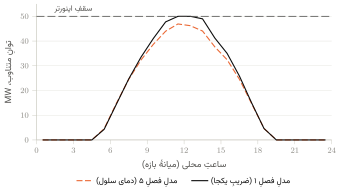
تفسیر. در ظهرِ ژوئن، سلولِ 68.5 °C حدودِ 15 % توان را به دما میبازد و مدلِ این فصل 46.2 MW میدهد، در حالی که مدلِ فصلِ ۱ به سقفِ 50 MW میرسد (شکل 5.17). اما انرژیِ سالانهٔ دو مدل تنها حدودِ یک درصد فرق دارد (96.43 در برابرِ 97.30 GWh)، چون ضریبِ یکجای 0.85ِ فصلِ ۱ بهطورِ ضمنی میانگینی از افتِ دمایی را در خود داشت: ضریبِ دمایی در میانگینِ وزندار با تابش 0.936 است و \(0.936 \times 0.90 \approx 0.84\). درسِ مهندسی: دو مدل با جمعِ سالانهٔ نزدیک ممکن است در ساعتهای بحرانی (ظهرِ تابستان، که سقف و قیمت مهماند) بسیار متفاوت باشند. وارسیِ دستی عینِ عددِ برنامه است.
مثال 5.31 (مدل در برابرِ دادهٔ سامانهٔ پایش) پرسش. ۷۱ ساعتِ بروندادِ سامانهٔ پایشِ خورشیدی را (خواندهشده با خوانندهٔ گامِ ۲) با مدلِ این فصل در همان ساعتها مقایسه کنید.
پاسخ.
71 SCADA hours (3-5 April, one hour missing) vs the chapter 5 model:
SCADA 964.0 MWh, model 978.8 MWh, difference +1.5 %
hourly RMS difference 0.51 MW
the synthetic 'SCADA' was made with the chapter 1 model: on cool April days
the explicit temperature factor exceeds the lumped one; a real comparison
would also separate availability, soiling and meter error (chapters 15, 37)تفسیر. اختلافِ 1.5 % و پراکندگیِ ساعتیِ نیم مگاوات کوچک است، اما منشأ دارد: «اندازهگیریِ» ساختگی با مدلِ فصلِ ۱ ساخته شده و در روزهای خنکِ آوریل، ضریبِ دماییِ صریح از ضریبِ یکجا بزرگتر است. در مقایسهٔ واقعیِ مدل با سامانهٔ پایش، اختلاف چند منشأ دارد که باید جدا شوند: دسترسپذیری (اینورترِ خاموش)، آلودگیِ سطح، خطای کنتور و خطای حسگرِ تابش (فصلهای ۱۵ و ۳۷). یک عددِ «درصدِ اختلاف» بدونِ این تفکیک، دربارهی هیچکدام چیزی نمیگوید.
5.5.3 آزمایشگاهِ د۳: انتگرالگیری از منحنیِ توان
مدل. انرژیِ مزرعهٔ بادی را به دو راه حساب میکنیم: (۱) سریِ زمانی: جمعِ ۸۷۶۰ مقدارِ ساعتیِ \(P(v_\text{eq})\)؛ (۲) توزیع: انتگرالِ منحنیِ توان ضربِ چگالیِ احتمالِ وایبول،
\[ \bar P = \int_0^{\infty} P(v)\,f(v)\,\mathrm{d}v, \qquad E = 8760\ \text{h} \times N \times \bar P \times (1 - L) \tag{5.8}\]
که در آن \(N\) تعدادِ توربینها و \(L\) ضریبِ تلفاتِ یکجاست. راهِ دوم سریع است و فقط دو پارامتر میخواهد؛ راهِ اول ترتیبِ زمانی را نگه میدارد که برای سقفِ صادرات و همزمانی با خورشید لازم است.
مثال 5.32 (سری، توزیع و چگالیِ هوا) پاسخ.
time series, power curve at 1.225 kg/m3: 192.54 GWh
time series, hourly site density (D-008): 177.08 GWh (-8.0 %)
Weibull k 2.11, c 8.02 m/s at 1.225 kg/m3: 191.48 GWh (mean power 2,070 kW
per turbine)
hand check: mean density 1.0559 kg/m3; at 8 m/s v_eq = 8 x
(1.0559/1.225)^(1/3) = 7.613 m/s
P(8.000) = 2522 kW, P(7.613) = 2175 kW (-13.8 %)
Weibull and series differ because the fit smooths the real distribution;
the series keeps the joint timing with PV that export limits depend on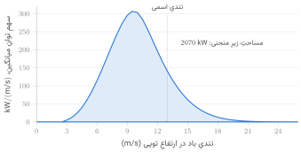
تفسیر. در چگالیِ استاندارد، سری و توزیع حدودِ نیم درصد فاصله دارند (192.54 و 191.48 GWh)، و هر دو با عددِ فصلِ ۱ همخواناند. اعمالِ چگالیِ واقعیِ ساختگاه (1.056 kg/m³ بهطورِ میانگین، D-008) انرژی را هشت درصد کم میکند: این بزرگترین تصحیحِ این فصل است و نشان میدهد چرا فصلِ ۴ آن را یک تصمیمِ پرونده کرد. وارسیِ دستی: در 8 m/s، تندیِ همارز 7.613 m/s و توان 2175 kW است، 13.8 % کمتر از 2522 kWِ جدول: کاهشِ چگالی (حدودِ 14 %) در ناحیهٔ میانیِ منحنی تقریباً یکبهیک به توان منتقل میشود، و در ناحیهٔ توانِ اسمی اثری ندارد. نمودارِ انتگرالده (شکل 5.18) نشان میدهد که بیشترِ انرژی از تندیهای ۷ تا ۱۳ متر بر ثانیه میآید؛ پس عدمِ قطعیتِ منحنیِ توان در همین بازه بیشترین اثر را دارد.
5.5.4 آزمایشگاهِ د۴: انرژیِ ذخیره و توزیعِ باتری
مدل. باتری با گامِ یک ساعته شبیهسازی میشود. اگر \(c_k\) توانِ شارژ و \(d_k\) توانِ تخلیه (هر دو در سمتِ متناوب، مثبت) و \(\eta = \sqrt{\eta_\text{rt}}\) بازدهِ یکطرفه باشد، انرژیِ ذخیره در پایانِ ساعتِ \(k\):
\[ \begin{aligned} E_k &= E_{k-1} + \eta\,c_k\,\Delta t - \frac{d_k}{\eta}\,\Delta t \\ 0 &\le E_k \le E_\text{use}, \qquad 0 \le c_k,\ d_k \le P_\text{max} \end{aligned} \tag{5.9}\]
و دو قیدِ سناریوی S1: باتری فقط از تولیدِ خودِ نیروگاه شارژ میشود (\(c_k \le P_{\text{gen},k}\)، A-012) و صادرات از سقفِ اتصال بیشتر نمیشود. قاعدهٔ توزیع ساده و قابلِ وارسی است: از ساعتِ ۹ تا ۱۵ (پرتابشترین ساعتها، قیمتِ پایین) شارژ کن و از ساعتِ ۱۸ تا ۲۲ (قیمتِ بالای تعرفهٔ ساختگیِ فصلِ ۱) تخلیه کن.
def rule_based_shift(gen_mw, charge_hours, discharge_hours, p_max: float,
usable_mwh: float, roundtrip: float, limit_mw: float,
soc0: float = 0.0) -> RuleResult:
"""Charge from on-site generation in charge_hours and discharge in
discharge_hours (clock hours 0..23; the series starts at 00:00).
Rules: never charge from the grid (charge <= generation); never export
more than limit_mw; |power| <= p_max; 0 <= soc <= usable_mwh.
One-way efficiency sqrt(roundtrip) on charge and on discharge.
"""
gen = np.asarray(gen_mw, dtype=float)
eta = float(np.sqrt(roundtrip))
n = gen.size
ch, dis, soc = np.zeros(n), np.zeros(n), np.zeros(n)
e = soc0 # stored energy, MWh
for k in range(n):
h = k % 24
if h in charge_hours:
ch[k] = min(p_max, gen[k], (usable_mwh - e) / eta)
e += ch[k] * eta
elif h in discharge_hours:
room = max(limit_mw - gen[k], 0.0) # free export capacity
dis[k] = min(p_max, e * eta, room)
e -= dis[k] / eta
e = min(max(e, 0.0), usable_mwh)
soc[k] = e
export = np.minimum(gen - ch + dis, limit_mw)
return RuleResult(export, ch, dis, soc)مثال 5.33 (یک سال باتری با قاعدهٔ ساده) پاسخ.
S1 rule: charge from on-site generation 09-15 h, discharge 18-22 h;
20 MW, 32 MWh usable, round trip 86 %, no grid charging (A-009..A-012)
energy charged 12.59 GWh, delivered 10.83 GWh, lost 1.76 GWh (14.0 %)
equivalent full cycles 365 per year (energy leaving the cells, 11.68 GWh, / 32
MWh usable)
export S0 273.52 GWh, S1 271.75 GWh
revenue at the fictional tariff: S0 12.413, S1 12.884 million u (+3.79 %)
gain per MWh delivered 43.5 u = 90 - 40 / 0.86 (43.5): the spread less the
round-trip loss
invariant checks: SOC within 0..32 MWh PASS; never charges more than
generation PASS; export never above 100 MW PASS; energy balance closes
PASS
capacity fade 2 %/yr (A-011) is not modelled in this one-year run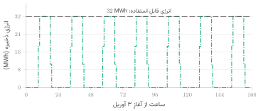
تفسیر. باتری هر روز یک چرخهٔ کامل میزند (۳۶۵ چرخهٔ همارز) و 14 % انرژیِ شارژشده را در رفتوبرگشت از دست میدهد؛ پس صادراتِ سالانه کم میشود (1.8 GWh)، اما درآمد با تعرفهٔ زماندارِ ساختگی 3.8 % زیاد میشود. وارسیِ دستیِ سود: هر مگاواتساعتِ تحویلشده در ساعتِ گران ۹۰ واحد میآورد و برای ساختنش \(1/0.86\) مگاواتساعت از ساعتِ ارزان (۴۰ واحد) برداشته شده، پس سودِ هر مگاواتساعت \(90 - 40/0.86 = 43.5\) واحد است؛ عینِ نتیجهٔ برنامه. چهار ناوردا در هر ساعتِ سال برقرارند و آزمونِ ویژگی (بخش 5.4.9) آنها را روی هفتههای تصادفی هم میسنجد. محدودیتها: قاعده پیشبینی ندارد (در روزِ ابری هم همان ساعتها شارژ میکند)، افتِ ظرفیت (A-011) و فرسایشِ چرخهای در هزینه نیامده، و قیمتها ساختگیاند؛ برنامهریزیِ بهینه با برنامهریزیِ پویا در فصلِ ۳ و ارزشگذاریِ واقعی در فصلهای ۱۹ تا ۲۱ میآید. حقِ شارژ از شبکه و فروشِ انرژیِ ذخیره هم به قاعدههای کشور وابسته است (فصلهای ۵۵ تا ۵۷).
5.5.5 آزمایشگاهِ د۵: تلفاتِ کابل و ترانسفورماتور
مدل. تولیدِ نیروگاه از چهار فیدرِ 33 kV به طولِ ۶ کیلومتر (با سهمِ برابر) به پست میرسد و ترانسفورماتورِ صادرات آن را به 132 kV میبرد (A-091 و A-092، فرضی):
\[ \begin{aligned} I &= \frac{P}{\sqrt3\,V\,\cos\varphi}, \qquad R_T = R_{20}\,\ell\,\big(1 + \alpha_R\,(T - 20)\big) \\ P_\text{cable} &= 3\,I^{2}R_T \end{aligned} \tag{5.10}\]
\[ P_\text{trafo} = P_0 + P_k\left(\frac{S}{S_\text{r}}\right)^{2}, \qquad S = \frac{P}{\cos\varphi} \tag{5.11}\]
\(P_0\) تلفِ بیباری است که در همهٔ ساعتهایی که ترانسفورماتور برقدار است برقرار است، حتی شب، و \(P_k\) تلفِ بار در توانِ اسمی که با مجذورِ بار تغییر میکند (فصلِ ۸).
def cable_loss_mw(p_mw, v_kv: float, pf: float, r20_ohm_per_km: float,
length_km: float, alpha: float = 0.00403,
t_c: float = 70.0):
"""3 I^2 R with R = R20 L (1 + alpha (T - 20)); result in MW."""
r = r20_ohm_per_km * length_km * (1 + alpha * (t_c - 20.0))
return 3 * current_a(p_mw, v_kv, pf) ** 2 * r / 1e6def transformer_loss_mw(p_mw, pf: float, s_rated_mva: float,
p0_mw: float, pk_mw: float):
"""P0 + Pk (S / S_rated)^2 with S = P / pf; result in MW."""
s = np.asarray(p_mw, dtype=float) / pf
return p0_mw + pk_mw * (s / s_rated_mva) ** 2مثال 5.34 (تلفاتِ سالانهٔ مجموعه و ترانسفورماتور) پاسخ.
hand check at 100 MW: 25 MW per feeder, I = 25e6 / (sqrt3 x 33e3 x 0.95) =
460.4 A
R(70 C) = 0.10 x 6 x (1 + 0.00403 x 50) = 0.7209 ohm; loss 3 I^2 R = 458.4
kW per feeder, 1.834 MW in all
transformer: 60 kW + 400 kW x (105.3 / 120)^2 = 368 kW
annual (S0, data pack 1.1.0): energy 273.52 GWh;
cables 2,364 MWh (0.86 %), transformer 922 MWh (0.34 %)
of which no-load loss 526 MWh: it runs every hour, even at night
teaching model (A-091, A-092): constant 70 C conductor, equal feeders, no
reactive power flow or harmonics; chapters 24 and 25 replace itتفسیر. در توانِ کامل، کابلها 1.8 % و ترانسفورماتور 0.37 % تلفات دارند؛ اما در یک سال، کابلها 0.86 % و ترانسفورماتور 0.34 %، چون تلفاتِ کابل با مجذورِ جریان است و نیروگاه بیشترِ ساعتها با بارِ جزئی کار میکند، در حالی که بیش از نیمی از تلفاتِ ترانسفورماتور بیباری و ثابت است. پس نسبتِ «تلفاتِ سالانه به تلفِ بارِ کامل» برای کابل و ترانسفورماتور بسیار متفاوت است، و ضربِ سادهٔ «درصدِ تلفِ بارِ کامل در انرژیِ سالانه» دو خطای مخالف میسازد. محدودیتها: دمای رسانا ثابت (در واقع با بار و خاک تغییر میکند، فصلِ ۴)، فیدرهای برابر، بیتوانِ واکنشی و بیهارمونیک؛ فصلهای ۲۴ و ۲۵ این مدل را جایگزین میکنند.
5.5.6 آزمایشگاهِ د۶: جریانِ نقدیِ قابلِ حسابرسی، پوششِ بدهی و حساسیت
مدل. یک جدولِ سالبهسال با فرمولهای یکسان برای هر سال (A-093 و A-037؛ پول به واحدِ ساختگی): درآمد = انرژی × قیمت، با افتِ سالانهٔ نیم درصد؛ جریانِ نقدیِ در دسترس برای پرداختِ بدهی (\(\text{CFADS}\)) = درآمد منهای هزینهٔ بهرهبرداری (بیمالیات، بیتورم)؛ بدهی هفتاد درصدِ سرمایه با بازپرداختِ اقساطِ برابر:
\[ \text{DS} = D\,\frac{r_\text{d}}{1 - (1 + r_\text{d})^{-n}}, \qquad \text{DSCR}_t = \frac{\text{CFADS}_t}{\text{DS}_t} \tag{5.12}\]
و ارزشِ خالصِ فعلی و نرخِ بازدهِ داخلی (فصلِ ۳):
\[ \text{NPV} = \sum_{t=0}^{T} \frac{C_t}{(1+r)^{t}}, \qquad \text{NPV}(r = \text{IRR}) = 0 \tag{5.13}\]
def project_cash_flow(energy_mwh_yr1: float, price: float, capex: float,
opex: float, years: int, degradation: float,
debt_share: float, debt_rate: float,
debt_years: int) -> dict:
"""Year-by-year table (lists, year 0 first): revenue, opex, CFADS,
debt service, DSCR, equity cash. Annuity debt; no tax, no inflation
(teaching model)."""
debt = capex * debt_share
service = debt * capital_recovery(debt_rate, debt_years) if debt else 0.0
rows = {"year": [0], "revenue": [0.0], "opex": [0.0], "cfads": [0.0],
"debt_service": [0.0], "dscr": [float("nan")],
"equity_cash": [-(capex - debt)]}
for y in range(1, years + 1):
rev = energy_mwh_yr1 * (1 - degradation) ** (y - 1) * price
cfads = rev - opex
ds = service if y <= debt_years else 0.0
rows["year"].append(y)
rows["revenue"].append(rev)
rows["opex"].append(opex)
rows["cfads"].append(cfads)
rows["debt_service"].append(ds)
rows["dscr"].append(cfads / ds if ds > 0 else float("nan"))
rows["equity_cash"].append(cfads - ds)
return rowsمثال 5.35 (جدولِ نقدی، پوششِ بدهی و ارزشِ فعلی) پاسخ.
year revenue opex CFADS debt serv. DSCR equity cash (million u)
0 0.000 0.000 0.000 0.000 - -30.000
1 13.676 2.750 10.926 7.207 1.52 3.719
2 13.608 2.750 10.858 7.207 1.51 3.650
15 12.749 2.750 9.999 7.207 1.39 2.792
16 12.685 2.750 9.935 0.000 - 9.935
25 12.126 2.750 9.376 0.000 - 9.376
DSCR minimum 1.39 (year 15), average 1.45
project: NPV at 7 % +20.66 million u, IRR 9.28 %
equity: NPV at 10 % +9.86 million u, IRR 13.14 %
audit: every year uses the same formulas; totals: revenue 322.2, debt service
108.11 = 70 principal + interest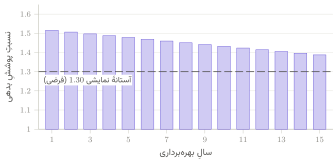
تفسیر. وارسیِ دستیِ سالِ اول: درآمد \(273\,520 \times 50 = 13.676\) میلیون؛ \(\text{CFADS} = 13.676 - 2.75 = 10.926\)؛ قسط با ضریبِ بازیابیِ سرمایهٔ شش درصد و پانزده سال (\(0.10296\)) برابرِ \(70 \times 0.10296 = 7.207\) میلیون؛ پس \(\text{DSCR} = 1.52\). نسبتِ پوشش با افتِ تولید آرام پایین میآید و کمینهاش (۱٫۳۹) در آخرین سالِ بدهی است، همانجا که وامدهنده بیشتر نگاه میکند. حسابرسیپذیری یعنی هر سطر را بتوان با همان فرمول دوباره حساب کرد و جمعها بسته شوند: جمعِ اقساط (108.11) برابرِ اصلِ وام (۷۰) بهاضافهٔ بهرهٔ کل است. آستانهٔ خطِچین در نمودار فرضی و نمایشی است؛ آستانهها، ذخیرهها و شرطهای واقعیِ وام را قراردادِ تأمینِ مالی تعیین میکند (فصلِ ۲۱).
مثال 5.36 (حساسیتِ ارزشِ فعلی و قیمتِ سربهسر) پرسش. هر ورودی را جداگانه تغییر دهید (انرژی و قیمت ده درصد، سرمایه ده درصد، هزینهٔ بهرهبرداری بیست درصد، نرخِ تنزیل یک واحدِ درصد) و تغییرِ ارزشِ خالصِ فعلیِ پروژه را بسنجید. قیمتی که ارزشِ فعلی را صفر میکند چیست؟
پاسخ.
project NPV +20.66 million u; one input changed at a time:
energy -/+10 % +5.39 .. +35.93 (swing 30.54)
price -/+10 % +5.39 .. +35.93 (swing 30.54)
discount rate +/-1 pt +10.81 .. +32.00 (swing 21.18)
capex +/-10 % +10.66 .. +30.66 (swing 20.00)
opex +/-20 % +14.25 .. +27.07 (swing 12.82)
break-even price (NPV = 0): 43.24 u/MWh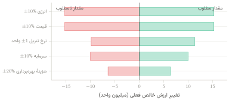
تفسیر. انرژی و قیمت هموزناند (درآمد حاصلضربِ آنهاست) و بیشترین اثر را دارند؛ پس دقتِ برآوردِ تولید همانقدر برای ارزشِ پروژه مهم است که قیمتِ فروش، و این دلیلِ وسواسِ فصلهای ۱۳ تا ۱۶ دربارهٔ عدمِ قطعیتِ منبع است. نرخِ تنزیل تنها ورودیِ نامتقارن است (کاهش بیشتر از افزایش اثر دارد)، چون ارزشِ فعلی تابعی کوژ از نرخ است. قیمتِ سربهسر 43.24 واحد است: حاشیهٔ حدودِ سیزده درصد زیرِ قیمتِ فرضی. محدودیت: حساسیتِ یکییکی همبستگیِ ورودیها را نمیبیند (سالِ کمباد هم انرژی را کم میکند و هم شاید قیمت را تغییر دهد)؛ برای این کار تحلیلِ سناریو و مونتکارلو لازم است (فصلهای ۳ و ۱۶).
5.5.7 آزمایشگاهِ د۷: نمودار و تولیدِ گزارش
گزارشِ یک تحلیلِ مهندسی سه بخشِ جدانشدنی دارد: عدد، شاهد و محدودیت. ابزارِ این فصل گزارش را از پروندهٔ نتیجه میسازد (بخش 5.3.16.2)، پس گزارش نمیتواند با محاسبه ناهمخوان باشد، و هر عددش هش و نسخه دارد. بستهٔ خروجیِ هر اجرا چهار پرونده است:
| پرونده | محتوا | خواننده |
|---|---|---|
| results.json | عددها، نسخهٔ داده، هشِ ورودیها و پیکربندی، نسخهٔ نرمافزار | ماشین، بازبین |
| hourly.csv | توانِ ساعتیِ خورشیدی، بادی و صادرات | تحلیلگرِ بعدی |
| نمودارها | سریِ هفتگی و روزانه، با منبع در عنوان | خوانندهٔ گزارش |
| PLP-GEN-REP-0002 | گزارشِ Markdown: ورودیها، نتیجهها، وارسیها، محدودیتها، امضا | تصمیمگیر |
گزارش با وضعیتِ «صادرشده برای بازبینی» و بازنگریِ A ساخته میشود و جدولِ امضایش (تهیه، وارسی، تأیید) خالی است: نرمافزار نمیتواند گزارش را تأیید کند؛ تأیید کارِ مهندسانی است که آن را بررسی میکنند (فصلِ ۲). نمودارها هم از همان داده ساخته میشوند و قاعدههای بخش 5.2.18 را رعایت میکنند.
5.5.8 وارسی و اعلامِ محدودیتها
هر آزمایشگاهِ این بخش یک وارسیِ مستقل داشت و یک محدودیت. جدولِ زیر آنها را کنارِ هم میگذارد؛ همین جدول بخشی از گزارش است:
| آزمایشگاه | وارسیِ مستقل | محدودیتِ اصلی | جایگزین در فصلِ |
|---|---|---|---|
| اعتبارسنجیِ داده | کلیدِ ایرادها، سریِ مرجع | کلید در کارِ واقعی نیست | ۱۳ |
| مدلِ خورشیدی | یک ساعت با دست، مدلِ فصلِ ۱ | تابشِ افقی، تلفاتِ یکجا | ۱۰، ۱۲، ۱۵ |
| منحنیِ توان | وایبول در برابرِ سری؛ یک تندی با دست | اثرِ دنباله و آشفتگی نیامده | ۱۱، ۱۴، ۱۵ |
| باتری | سودِ هر مگاواتساعت با دست؛ ناورداها | بیپیشبینی، بیافتِ ظرفیت | ۱۹، ۲۰ |
| تلفات | یک ساعت در توانِ کامل | دمای ثابت، بیتوانِ واکنشی | ۲۴، ۲۵ |
| جریانِ نقدی | سالِ اول با دست؛ بسته شدنِ جمعها | بیمالیات و تورم، پولِ ساختگی | ۲۱ |
- معادلهٔ معادلهٔ 5.9 را برای یک ساعت با شارژِ 20 MW، بازدهِ رفتوبرگشتِ 0.86 و انرژیِ آغازینِ صفر حل کنید.
- چرا صادراتِ سالانه با باتری کم شد اما درآمد زیاد شد؟
- یک ناوردای پنجم برای شبیهسازیِ باتری بنویسید.
- چرا تلفاتِ سالانهٔ ترانسفورماتور بهعنوانِ درصد تقریباً هماندازهٔ تلفِ بارِ کاملش است اما کابل نه؟
- اگر دمای رسانا 90 °C بهجای 70 °C باشد، مقاومت چند درصد تغییر میکند؟
- نسبتِ پوششِ بدهیِ سالِ اول را با قیمتِ 45 واحد حساب کنید.
- چرا نرخِ تنزیل در نمودارِ گردبادی نامتقارن است؟
- چرا گزارشِ ساختهشده با نرمافزار جدولِ امضای خالی دارد؟
5.6 ه. آزمایشگاهِ اطلاعاتِ دارایی
نیروگاهی که ساخته و تحویل شد، دو چیز به مالک میدهد: تجهیزاتِ فیزیکی و اطلاعاتِ آنها. اگر اطلاعات ناقص یا ناسازگار باشد، تجهیزِ سالم هم درست نگهداری نمیشود: کسی نمیداند ژنراتورِ توربینِ هفت کدام سریال را دارد، ضمانتش کی تمام میشود، آخرین آزمونِ عایقیِ اینورترِ چهار کی بوده، یا نقشهٔ کدام بازنگری با واقعیت میخواند. اطلاعاتِ دارایی از تدارکات تا بازنشستگی با نیروگاه میماند و این بخش نشان میدهد چطور ساختارمند، اعتبارسنجیشده و قابلِ مهاجرت نگه داشته میشود. چارچوبهای بینالمللی برای این کار هست: ISO 55000:2024 واژگان و اصولِ مدیریتِ دارایی را میدهد و ISO 19650-1:2018 مفهومها و اصولِ مدیریتِ اطلاعات در طولِ عمرِ داراییهای ساختهشده را. این بخش هیچ بندِ مشخصی از آنها را نقل نمیکند؛ ایدهٔ مشترکشان را در اندازهٔ نیروگاهِ P به کار میبرد: اطلاعات را مالک تعریف میکند، پیش از آنکه کسی تولیدش کند.
5.6.1 الزامهای اطلاعاتیِ مالک
الزامهای اطلاعاتیِ مالک فهرستِ پرسشهایی است که مالک در طولِ عمرِ نیروگاه باید بتواند پاسخ دهد، و از آنها الزامهای اطلاعاتِ دارایی بیرون میآید: چه اطلاعاتی، برای کدام دارایی، در چه قالبی، با چه کیفیتی، در کدام مرحله و از چه کسی. این الزامها در قراردادِ پیمانکار و سازندهها میآیند (فصلِ ۳۸) و معیارِ پذیرشِ تحویلاند (فصلِ ۵۰).
| پرسشِ مالک | اطلاعاتِ لازم | از چه کسی، کی | سامانهٔ مرجع |
|---|---|---|---|
| کدام تجهیز کجاست و جزوِ کدام سامانه؟ | برچسب، والد، مکان | طراح، پیش از خرید | فهرستِ دارایی |
| چه چیزی دقیقاً نصب شده؟ | سازنده، مدل، سریال، نسخهٔ نرمافزارِ داخلی | پیمانکار، هنگامِ نصب | فهرستِ دارایی |
| آیا آزمونها قبول شدهاند؟ | گزارشهای آزمونِ کارخانه و محل | سازنده و پیمانکار | مخزنِ مدارک |
| ضمانت تا کی و با چه شرطی؟ | آغاز، مدت، شرایط، تماس | سازنده، هنگامِ تحویل | سامانهٔ نگهداری |
| چه نگهداریای لازم است؟ | برنامه، قطعهٔ یدکی، دستورالعمل | سازنده | سامانهٔ نگهداری |
| چه رخ داده است؟ | دستورهای کار، خرابیها، دادههای پایش | بهرهبردار | سامانهٔ نگهداری و تاریخنگار |
| شکلِ ساختهشده چیست؟ | نقشهها و مدلهای «چونساخت» | پیمانکار، پیش از تحویل | مخزنِ مدارک |
5.6.2 سلسلهمراتب، برچسب و مکان
سلسلهمراتبِ دارایی نیروگاه را به سامانهها و قطعهها میشکند، و هر گره یک برچسب یکتا دارد. برچسب به جایگاهِ کارکردی اشاره میکند، نه به قطعهٔ فیزیکی: «ژنراتورِ توربینِ هفت» جایگاهی است که قطعههای پیاپی (با سریالهای متفاوت) در آن نصب میشوند. برای نامگذاریِ سامانهمندِ اشیای صنعتی استانداردِ IEC 81346-1:2022 اصولِ ساختاردهی و نشانهٔ مرجع را تعریف میکند. فهرستِ ساختگیِ این فصل یک الگوی آموزشیِ ساده دارد (A-094) که اجرای آن استاندارد نیست؛ پروژهٔ واقعی الگوی برچسبش را از استانداردِ مورد توافق و الزامهای مالک میگیرد.
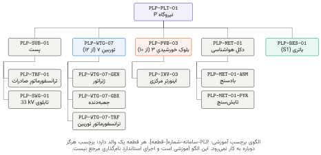
الگوی برچسب با یک عبارتِ منظم دقیق میشود: پیشوندِ نیروگاه، یکی از کدهای سامانه، دو رقم، و بهطورِ اختیاری سه حرفِ بزرگ برای قطعه. هر برچسبی که با این الگو نخواند، رد میشود:
SYSTEMS = {"PLT": "plant", "WTG": "wind turbine", "PVB": "PV block",
"INV": "inverter", "TRF": "transformer", "SWG": "switchgear",
"BES": "battery system", "MET": "met mast", "SUB": "substation"}
TAG_PATTERN = re.compile(
r"^PLP-(PLT|WTG|PVB|INV|TRF|SWG|BES|MET|SUB)-\d{2}(-[A-Z]{3})?$")
REQUIRED = ("tag", "description", "criticality")
DATES = ("delivered", "installed", "commissioned")register rev A: 77 records, validation issues: 0
by system: BES 1, INV 10, MET 4, PLT 1, PVB 10, SUB 1, SWG 1, TRF 1, WTG 48
levels: plant 1, system-level items 37, components 39
criticality: A 51, B 26
most children: PLP-PLT-01 with 25
tag = PLP-<system>-<nn>[-<component>], e.g. PLP-WTG-07-GEN (teaching scheme,
A-094)مکان. هر دارایی یک مرجعِ مکانی هم دارد. در پروژهٔ واقعی این مختصاتِ جغرافیایی در یک دستگاهِ مرجعِ مشخص است که در سامانهٔ اطلاعاتِ جغرافیایی نگه داشته میشود؛ نیروگاهِ P جای واقعی ندارد (A-001 و A-041)، پس فهرستش فقط کدِ ناحیه (مثلاً WTG07 یا SUB) دارد و فصلِ ۳ مختصاتِ محلیِ ساختگی برای چند دارایی ساخت. قاعدهٔ مهم آن است که دستگاهِ مختصات همیشه همراهِ عددها نوشته شود؛ عددِ بیدستگاه مانندِ عددِ بییکاست.
5.6.3 پیوندهای کنترلشده
ارزشِ اطلاعاتِ دارایی در پیوندهاست: الزام به جایگاه، مدرک به جایگاه، قطعه (با سریال) به جایگاه، آزمون به سریال، ضمانت به سریال، و دستورِ کار به جایگاه (شکل 5.23). پیوندِ آزمون و ضمانت به سریال است نه به برچسب، چون اگر ژنراتور عوض شود، آزمونِ کارخانه و ضمانتِ ژنراتورِ قدیمی به جایگاه منتقل نمیشوند. پیکربندیِ هر قطعه هم بخشی از اطلاعاتِ آن است: نسخهٔ نرمافزارِ داخلی، تنظیمها و نسخهٔ نقشهٔ ثبّاتها (مثال 5.2)؛ تعویضِ نرمافزار بدونِ بهروزرسانیِ فهرست، پیوندِ «چه چیزی نصب است» را میشکند.
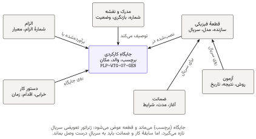
مثال 5.37 (ضمانت، دستورِ کار و مدرکِ گمشده) پرسش. با فهرستِ بازنگریِ A، چند سطرِ ساختگیِ ضمانت (ژنراتور، جعبهدنده و اینورتر پنج سال؛ ترانسفورماتورها دو سال، A-099)، سه مدرک و دو دستورِ کار در یک پایگاهِ داده بسازید و بپرسید: کدام ضمانتها تا پایانِ ۲۰۲۷ تمام میشوند؟ کدام دستورِ کار باز است؟ کدام ترانسفورماتورها گزارشِ آزمونِ پیوندشده ندارند؟ کدام دستورهای کار در دورهٔ ضمانت باز شدهاند؟
پاسخ.
warranties ending by 2027-12-31: 13 (first PLP-TRF-01 on 2027-06-15)
open work orders: [('WO-0019', 'PLP-INV-04', 'fan alarm')]
transformers without a linked test document: 12 of 13 (the turbine
transformers: documents never received?)
work orders opened inside a warranty period: ['PLP-WTG-07-GEN', 'PLP-INV-04']
-> claim against the supplier is possible only if the link tag -> serial ->
warranty -> work order is complete and trustworthyتفسیر. سه یافته که بدونِ پیوندها دیده نمیشدند: (۱) ضمانتِ همهٔ ترانسفورماتورهای توربین در تابستانِ ۲۰۲۷ تمام میشود و باید پیش از آن بازرسی و ادعاهای باز نهایی شوند؛ (۲) دوازده ترانسفورماتورِ توربین هیچ گزارشِ آزمونِ پیوندشدهای ندارند: یا گزارشها هرگز تحویل نشدهاند یا پیوند داده نشدهاند، و هر دو پیش از پذیرشِ نیروگاه باید روشن شوند؛ (۳) تعویضِ ژنراتورِ توربینِ هفت در دورهٔ ضمانت بوده است، پس هزینهاش ممکن است از سازنده قابلِ مطالبه باشد، به شرطی که زنجیرهٔ برچسب، سریال، ضمانت و دستورِ کار کامل و قابلِ اعتماد باشد.
5.6.4 سامانههای مرجع
اطلاعاتِ نیروگاه در چند نوع سامانه نگه داشته میشود که هر کدام برای نوعی از اطلاعات مرجع است (شکل 5.24): مخزنِ مدارک (نقشه، گزارش، گواهی، با بازنگری و وضعیت)، مدلهای مهندسی (هندسه و طراحی)، تاریخنگارِ سامانهٔ پایش و کنترل (سریهای زمانیِ اندازهگیری) و سامانهٔ مدیریتِ نگهداری و دارایی (داراییها، دستورهای کار، ضمانتها، قطعههای یدکی). این کتاب هیچ محصولِ تجاریِ خاصی را فرض نمیکند؛ نقشها مهماند نه نامها.
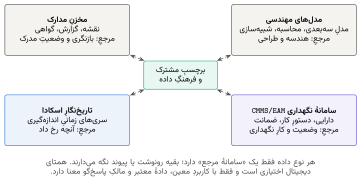
قاعدهٔ طلایی: هر نوع اطلاعات فقط یک سامانهٔ مرجع دارد؛ بقیهٔ سامانهها یا رونوشتِ کنترلشده نگه میدارند (با تاریخ و منبع) یا پیوند. اگر شمارهٔ سریالِ ژنراتور هم در فهرستِ پیمانکار، هم در سامانهٔ نگهداری و هم در گزارشِ آزمون جداگانه ویرایش شود، دیر یا زود سه مقدارِ متفاوت پدید میآید و کسی نمیداند کدام درست است.
همتای دیجیتال. «همتای دیجیتال» (مدلی که با دادههای زنده همگام میماند) اختیاری است، نه تحویلدادنیِ پیشفرض. فقط وقتی معنا دارد که یک کاربردِ مشخص داشته باشد (مثلاً پیشبینیِ خرابیِ جعبهدنده)، دادههایش اعتبارسنجیشده باشد، مالکِ پاسخگو داشته باشد و هزینهٔ نگهداریاش در طولِ عمر برآورد شده باشد. همتای دیجیتالی که روی فهرستِ داراییِ ناقص ساخته شود، فقط ناقص بودن را زیباتر نشان میدهد.
5.6.5 آزمایشگاه: اعتبارسنجی، آشتی و تبادل
داده. بستهٔ دادهٔ 1.1.0 دو بازنگری از فهرستِ ساختگیِ دارایی دارد: بازنگریِ A، صادرشده هنگامِ تحویل (۷۷ رکورد)، و بازنگریِ B، شش ماه بعد، که هم تغییرهای تأییدشده دارد (تعویضِ ژنراتورِ توربینِ هفت، تعویضِ بادنما با بادسنجِ فراصوتی، و…) و هم خطاهای ویرایش. دستورِ تغییرِ تأییدشده (CN-001 تا CN-005) میگوید کدام تغییرها مجاز بودهاند. چهار کار: اعتبارسنجیِ بازنگریِ B، آشتیِ آن با دستورِ تغییر، صدورِ کنترلشده به یک سامانهٔ نگهداریِ ساختگی (A-095) و ورودِ دوباره، و گزارشِ مالکیت، کیفیت و محدودیتهای مهاجرت.
گامِ ۱: اعتبارسنجی. تابعِ اعتبارسنجی همهٔ ایرادها را میشمارد: برچسبِ تکراری، فیلدِ الزامیِ خالی، برچسبِ بیرون از الگو، والدِ ناموجود، ردهٔ اهمیتِ نامعتبر، تاریخهای بیترتیب، قطعهٔ راهاندازیشدهٔ بیسریال، و حرفهای عربی در شرحِ فارسی (بخش 5.2.5):
def validate_register(records: list[dict]) -> list[str]:
"""Every problem of the register, one short text each."""
issues: list[str] = []
seen = set()
for r in records:
if r.get("tag", "") in seen:
issues.append(f"{r['tag']}: duplicate tag")
seen.add(r.get("tag", ""))
for r in records:
t = r.get("tag", "")
for key in REQUIRED:
if not r.get(key):
issues.append(f"{t or '?'}: {key} is missing")
if t and not TAG_PATTERN.match(t):
issues.append(f"{t}: tag does not follow PLP-<sys>-<nn>[-<XXX>]")
parent = r.get("parent", "")
if parent and parent not in seen:
issues.append(f"{t}: parent {parent} not in the register")
if not parent and not t.startswith("PLP-PLT"):
issues.append(f"{t}: only the plant may have no parent")
crit = r.get("criticality")
if crit and crit not in ("A", "B", "C"):
issues.append(f"{t}: criticality {crit!r} is not A, B or C")
try:
d = [_date(r.get(k, "")) for k in DATES]
except ValueError as e:
issues.append(f"{t}: bad date ({e})")
continue
known = [(k, v) for k, v in zip(DATES, d) if v]
for (k1, v1), (k2, v2) in zip(known[:-1], known[1:]):
if v2 < v1:
issues.append(f"{t}: {k2} {v2} is before {k1} {v1}")
component = t.count("-") == 3
if component and r.get("commissioned") and not r.get("serial"):
issues.append(f"{t}: commissioned component without a serial "
"number")
fa = r.get("description_fa", "")
if fa and fa != normalise_persian(fa):
issues.append(f"{t}: Arabic letter form in the Persian "
"description")
return issuesregister rev B: 80 records, 6 issue(s):
PLP-INV-07: duplicate tag
PLP-SWG-01: criticality 'a' is not A, B or C
PLP-MET-01-HYG: commissioned component without a serial number
PLP-WTG-07-GEN: commissioned 2025-03-15 is before installed 2026-03-10
PLP-PVB-03: Arabic letter form in the Persian description
PLP-WTG-13-GEN: parent PLP-WTG-13 not in the registerگامِ ۲: آشتی با دستورِ تغییر. تفاوتِ دو بازنگری با دستورِ تغییر مقایسه میشود. هر تغییر یا تأییدشده است (دستورِ تغییر همان برچسب، همان فیلد و همان مقدار را میگوید)، یا تأییدنشده؛ و هر بندِ دستورِ تغییر که انجام نشده معوق است:
def reconcile(old: list[dict], new: list[dict], notice: list[dict]) -> dict:
"""Compare a register revision with the approved change notice.
A change is approved when the notice names the tag and the field (or
'(added)' / '(removed)') and, for a field, exactly the new value."""
d = diff_registers(old, new)
want = {(n["tag"], n["field"]): n["new_value"] for n in notice}
approved, unapproved, done = [], [], set()
for kind, tags in (("(added)", d["added"]), ("(removed)", d["removed"])):
for t in tags:
ok = (t, kind) in want
(approved if ok else unapproved).append(f"{t}: {kind[1:-1]}")
done.add((t, kind))
for t, fields in d["changed"].items():
for f, (a, b) in fields.items():
ok = want.get((t, f)) == b
(approved if ok else unapproved).append(f"{t}: {f} {a!r} -> {b!r}")
done.add((t, f))
not_done = [f"{t}: {f}" for (t, f) in want if (t, f) not in done]
return {"approved": approved, "unapproved": unapproved,
"not_done": not_done}change notices CN-001..CN-005: 9 approved line(s)
approved (8):
PLP-MET-01-HYG: added
PLP-MET-01-SON: added
PLP-MET-01-VAN: removed
PLP-MET-01-PYR: serial 'P23-0555' -> 'P26-0610'
PLP-TRF-01: description 'Export transformer 132/33 kV 120 MVA' -> 'Exp...
PLP-WTG-07-GEN: delivered '2025-03-01' -> '2026-03-02'
PLP-WTG-07-GEN: installed '2025-04-15' -> '2026-03-10'
PLP-WTG-07-GEN: serial 'G25-2070' -> 'G26-0907'
unapproved (4):
PLP-WTG-13-GEN: added
PLP-PVB-03: description_fa changed (Persian text, letter forms)
PLP-SWG-01: criticality 'A' -> 'a'
PLP-WTG-07-GEN: commissioned '2025-07-01' -> '2025-03-15'
not_done (0):
the duplicated PLP-INV-07 does not appear in the diff (keyed by tag):
validate BEFORE comparingتفسیرِ گامهای ۱ و ۲. هشت تغییر با دستورِ تغییر میخوانند. چهار تغییر تأیید ندارند و هر چهار خطای ویرایشاند: یک ژنراتورِ «توربینِ سیزده» در نیروگاهی دوازدهتوربینی، شرحِ فارسیای که با حروفِ عربی بازنویسی شده، ردهٔ اهمیتی که کوچک شده، و تاریخِ راهاندازیِ ژنراتورِ تازه که بهجای ۲۰۲۶ با ۲۰۲۵ تایپ شده است (و دستورِ تغییر مقدارِ درست را دارد). ترتیبِ کارها مهم است: تکرارِ برچسبِ اینورترِ هفت در مقایسه دیده نمیشود، چون مقایسه با کلیدِ برچسب انجام میشود و دو سطرِ همبرچسب یکی میشوند؛ پس اول اعتبارسنجی، بعد مقایسه.
گامِ ۳: صدور و ورودِ کنترلشده. سامانهٔ نگهداریِ ساختگی نامهای میدانِ خودش را دارد و شرح را به ۴۰ نویسه محدود میکند. صدورِ کنترلشده یعنی: نگاشتِ صریحِ میدانها، شمارشِ رکوردها در ورود و خروج، هشِ پروندهٔ صادرشده، و آزمونِ رفتوبرگشت: پرونده را دوباره وارد و با اصل مقایسه کن.
export: 77 rows, 8 fields, SHA-256 6031683ae087a18cfeae170d...
record count in = out: True; tags unique: True
fields with no place in the CMMS (kept only in the register): ['delivered',
'description_fa', 'doc_ref', 'installed', 'location']
descriptions cut to 40 characters: 13, e.g. PLP-WTG-01-TRF, PLP-BES-01
round trip: 64 of 77 records identical in the mapped fields
decision needed from the information owner: shorten texts at the source,
or keep the long text in the register and link it (no silent truncation)تفسیرِ گامِ ۳. شمارِ رکوردها و یکتاییِ برچسبها حفظ شدهاند، اما آزمونِ رفتوبرگشت دو نوع از دست رفتنِ اطلاعات را آشکار کرد: (۱) پنج میدان (تاریخهای تحویل و نصب، شرحِ فارسی، مکان و مرجعِ مدرک) در سامانهٔ مقصد جایی ندارند؛ (۲) شرحِ ۱۳ رکورد بیصدا کوتاه شده است، از جمله همهٔ ترانسفورماتورهای توربین و سامانهٔ باتری. هیچکدام خطای نرمافزار نیست؛ هر دو تصمیمِ مالکِ اطلاعات میخواهند: آیا فهرستِ دارایی سامانهٔ مرجعِ این میدانها میماند و سامانهٔ نگهداری فقط پیوند دارد؟ آیا شرحها در مبدأ کوتاه و استاندارد میشوند؟
گامِ ۴: گزارشِ مالکیت، کیفیت و محدودیت. نتیجهٔ آزمایشگاه یک گزارشِ کوتاه است که چهار چیز را میگوید: مالک هر میدان (کدام سامانه مرجع است و چه کسی حقِ ویرایش دارد)؛ کیفیت (شش ایرادِ بازنگریِ B و وضعیتِ رفعِ آنها، چهار تغییرِ تأییدنشده و تصمیم دربارهٔ هر کدام)؛ محدودیتهای مهاجرت (پنج میدانِ بیمقصد و سیزده شرحِ کوتاهشده)؛ و اقدامها با مسئول و تاریخ. فهرستِ اصلاحشده بازنگریِ C میشود و همراهِ دستورِ تغییرِ تازهای برای خطاهای ویرایش صادر میشود.
5.6.6 تبادل، نگهداشت، بایگانی و مهاجرتِ امن
اطلاعاتِ دارایی بیشتر از نرمافزارهایی که آن را نگه میدارند عمر میکند: سامانهٔ نگهداریِ امروز احتمالاً پیش از پایانِ عمرِ نیروگاه عوض میشود. پنج اصل این گذار را امن میکند:
- قالبِ تبادلِ باز و مستند: جدولهای متنی با فرهنگِ داده (CSV یا JSON با کدگذاریِ UTF-8)، نه فقط قالبِ بومیِ یک محصول. نگاشتِ میدانها خودش یک سندِ کنترلشده است.
- اعتبارسنجی در دو سو: همان طرحواره و همان آزمونها پیش از صدور و پس از ورود؛ آشتیِ شمارِ رکوردها و هشها؛ آزمونِ رفتوبرگشت.
- مالکیت و دسترسی: برای هر میدان یک مالک و یک سامانهٔ مرجع؛ حقِ ویرایش فقط در سامانهٔ مرجع.
- نگهداشت و بایگانی: دورهٔ نگهداشتِ هر نوع اطلاعات (برخی تا پایانِ عمرِ نیروگاه و پس از آن) را الزامهای قراردادی و قانونی تعیین میکنند که باید برای هر کشور وارسی شود (فصلهای ۵۵ تا ۵۷). بایگانی یعنی قالبِ ماندگار، فرادادهٔ کامل و آزمونِ دورهایِ خوانایی.
- مهاجرتِ مرحلهای: یک دورهٔ اجرای موازی که دو سامانه کنارِ هم کار میکنند و نتیجهها مقایسه میشوند، معیارِ پذیرشِ نوشتهشده پیش از خاموش کردنِ سامانهٔ قدیم، و نگه داشتنِ یک رونوشتِ فقطخواندنیِ کاملِ سامانهٔ قدیم.
- سه پرسشِ مالک را بنویسید که به اطلاعاتِ دارایی نیاز دارند و بگویید هر کدام از کدام سامانه پاسخ میگیرد.
- چرا برچسب به جایگاهِ کارکردی اشاره میکند و نه به قطعهٔ فیزیکی؟
- برچسبهای PLP-WTG-7-GEN و PLP-WTG-07-gen چرا با الگو نمیخوانند؟
- چرا گزارشِ آزمون و ضمانت به سریال پیوند دارند و دستورِ کار به جایگاه؟
- اگر شمارهٔ سریالِ یک قطعه در سه سامانه جداگانه ویرایش شود چه پیش میآید؟ راهحل چیست؟
- سه شرط برای معنادار بودنِ همتای دیجیتال بنویسید.
- چرا تکرارِ یک برچسب در مقایسهٔ دو بازنگری دیده نمیشود؟
- صادر شدنِ بیصدای شرحِ کوتاهشده چه خطری دارد؟ دو راه برای جلوگیری بگویید.
- معیارِ پذیرشِ پایانِ اجرای موازی در یک مهاجرت چه میتواند باشد؟
5.7 و. آزمایشگاهِ دادهٔ مرجعِ نیروگاهِ P
از فصلِ ۱، همهٔ مثالهای کتاب از یک منبعِ مشترک تغذیه کردهاند: بستهٔ دادهٔ مرجعِ نیروگاهِ P. این بسته رتبههای پایهٔ نیروگاه، دفترِ فرضها، کارتِ سناریوهای بیباتری (S0) و باباتری (S1)، یک سالِ ساعتیِ ساختگی از تابش و دما و باد، زیرمجموعههایی برای محاسبهٔ دستی، دادهٔ تجهیزاتِ ساختگی، فرهنگِ داده، نتیجههای مرجع و یک مانیفست با هشِ SHA-256ِ هر پرونده دارد، و برنامهای که همه را از یک بذرِ ثابت دوباره میسازد. قاعدهٔ کتاب ساده است: هر مثال نسخهٔ بسته و سناریو را ذکر میکند، و هر تغییرِ داده یا یک فرض را با شاهد عوض میکند یا یک سناریوی تازه با نامِ تازه میسازد. این بخش نسخهٔ تازهٔ بسته را منتشر و آن را مانندِ یک بستهٔ دادهٔ واقعی اعتبارسنجی میکند.
5.7.1 انتشارِ ۱٫۱٫۰
این فصل به دادههایی نیاز داشت که نسخهٔ 1.0.0 نداشت: پروندههای خامِ معیوب برای آزمایشگاههای اعتبارسنجی، فهرستِ دارایی در دو بازنگری با دستورِ تغییر، و دفترِ کاملِ فرضهای فصلهای ۲ تا ۶ (که تا اینجا فقط در متنِ فصلها بود). پرسشِ نسخهگذاری (بخش 5.4.16) این است: آیا این تغییرها سازگاراند؟ پاسخ را خودِ مانیفستها میدهند:
verify 1.0.0: all checksums match; verify 1.1.0: all checksums match
files identical in both releases: 10 (all time series, equipment, scenarios,
seed ratings)
changed: 5 -> CHANGELOG.md, README.md, assumptions.csv, data_dictionary.csv,
expected_results.json
added: 6 -> asset_register_rev_A.csv, asset_register_rev_B.csv,
change_notice.csv, met_mast_10min_raw.csv, met_mast_defects_key.csv,
pv_scada_export.csv
rule: additions only and no change of meaning -> minor release 1.1.0;
every result computed on 1.0.0 is still valid and keeps citing 1.0.0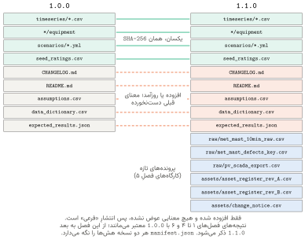
ده پرونده بایتبهبایت یکساناند (همهٔ سریهای زمانی، تجهیزات، سناریوها و رتبهها)، پنج پرونده فقط افزوده گرفتهاند (سطرهای تازهٔ دفترِ فرضها و فرهنگِ داده، کلیدهای تازهٔ نتیجههای مرجع، و متنِ «مرا بخوان» و تغییرنامه) و شش پرونده تازهاند. هیچ معنایی عوض نشده، پس انتشار فرعی است: 1.1.0. پیامدِ عملی: همهٔ نتیجههای فصلهای ۱ تا ۴ و ۶ که با 1.0.0 حساب شدهاند معتبر میمانند و همچنان 1.0.0 را ذکر میکنند (برنامههایشان نسخه را صریحاً پین کردهاند)، و از این فصل به بعد 1.1.0 ذکر میشود. تغییرنامه همین را برای خوانندهٔ آینده نوشته است:
- Added: the full assumptions ledger A-014..A-099 (chapters 2 to 6 and 5);
raw/met_mast_10min_raw.csv with its defect key; raw/pv_scada_export.csv;
assets/asset_register_rev_A.csv, assets/asset_register_rev_B.csv,
assets/change_notice.csv; data-dictionary rows for the new files.
- Unchanged: every time series, subset, equipment file, scenario and seed
rating is byte-identical to 1.0.0 (same SHA-256): no result changes.
- Reason: chapter 5 (data validation and asset-information laboratories).
- Version rule: additions only, backwards compatible -> minor release.
- Dependent artefacts: chapters 1-4 and 6 keep citing 1.0.0 (still valid);
chapter 5 and later cite 1.1.0.دفترِ فرضها اکنون ۹۹ سطر دارد (A-001 تا A-099)، هر کدام با کمیت، مقدار، یکا، وضعیت (فرضی یا ساختگی)، منبع، فصل و یادداشت. سطرهای A-089 تا A-099 فرضهای همین فصلاند: قراردادهای پروندههای خام، مجموعهٔ کابل و ترانسفورماتور، ورودیهای جریانِ نقدی، فهرستِ دارایی و سامانهٔ نگهداریِ ساختگی، برگهٔ گسترده، مدلِ خورشیدی، بسامدِ اندازهگیریشدهٔ برج و سوابقِ ضمانت.
5.7.2 آزمایشگاه: اعتبارسنجی و بازتولید
هدف. بستهٔ 1.1.0 را بارگذاری کنید و مانندِ هر بستهٔ دادهٔ رسیده از بیرون بسنجید: یکپارچگی (هشها)، طرحواره (ستونها در برابرِ فرهنگِ داده)، یکاها و بازهها، منطقهٔ زمانی و محورِ زمان، رکوردهای گمشده و تکراری، پیشینه، انتخابِ سناریو و کاملیِ دفترِ فرضها. سپس یک محاسبهٔ معلوم را بازتولید کنید: تولیدِ خورشیدی و بادی و صادرات و برش، و موردِ بیباتری در برابرِ باتریدارِ فصلِ ۱. در پایان، گزارشی منتشر کنید که به نسخهٔ بسته و هشِ ورودیها گره خورده باشد.
برنامه:
companion/ch05/lab_f.py
مثال 5.38 (یازده وارسیِ بستهٔ داده) پاسخ.
data pack 1.1.0 validation:
PASS columns = data dictionary
PASS values inside the dictionary ranges
PASS one UTC offset (+04:00)
PASS one-hour steps, 8760 unique stamps
PASS no missing values
PASS pressure in hPa (not Pa or kPa)
PASS irradiance consistent (DHI <= GHI)
PASS provenance: generator and seed recorded
PASS scenario cards: S0 no battery, S1 battery
PASS unknown scenario refused
PASS ledger A-001..A-099 completeتفسیر. هر وارسی پاسخِ یک پرسشِ مشخص است. «ستونها برابرِ فرهنگِ داده» یعنی پرونده و توصیفش از هم جدا نشدهاند. «یک اختلافِ زمانی» و «گامهای یکساعته با ۸۷۶۰ مُهرِ یکتا» یعنی نه ساعتِ تکراری داریم، نه گمشده، نه جهشِ منطقه. «فشار بر حسبِ هکتوپاسکال» یک آزمونِ یکا با بازهٔ فیزیکی است. «پیشینه» یعنی برنامهٔ سازنده و بذر ثبت شدهاند. «سناریوی ناشناخته رد میشود» از خطای بیصدای «S2» جلوگیری میکند. هیچکدام از این وارسیها به درستیِ فیزیکیِ داده نمیپردازد (داده ساختگی است)؛ همه به سازگاری و یکپارچگی میپردازند، همان چیزی که پیش از هر تحلیلی باید برقرار باشد.
مثال 5.39 (بازتولیدِ عددهای فصلِ ۱) پرسش. مدلِ غربالگریِ فصلِ ۱ را روی نسخهٔ 1.1.0 اجرا کنید و نتیجه را با عددهای منتشرشدهٔ فصلِ ۱ (که با 1.0.0 ساخته شدند) و با نتیجههای مرجعِ بسته مقایسه کنید.
پاسخ.
chapter 1 screening model on release 1.1.0 vs the published chapter 1 numbers:
pv_gwh 97.3 published 97.3 PASS
wind_gwh 192.5 published 192.5 PASS
export_gwh 289.8 published 289.8 PASS
curtailed_mwh 13.8 published 13.8 PASS
s1_delivered_mwh 11.8 published 11.8 PASS
annual GHI 1947.2 kWh/m2, expected_results.json 1947.2: PASS
S1 in this model: charged 13.8 MWh, delivered 11.8 MWh (one role only: store
what would be cut)تفسیر. هر پنج عدد و تابشِ سالانه دقیقاً بازتولید شدهاند؛ این شاهدِ عملیِ «انتشارِ فرعی چیزی را نشکسته» است، و آزمونی خودکار (بخش 5.4.13) همین را در هر تغییرِ آینده تکرار میکند. باتریِ S1 در مدلِ فصلِ ۱ همان 13.8 MWh برش را ذخیره و 11.8 MWh را بعداً تحویل میدهد؛ با مدلِ اصلاحشدهٔ این فصل (چگالیِ هوا) برشی نمیماند (بخش 5.3.13.5)، و این دو عدد هر دو درستاند، چون به دو مدلِ متفاوت تعلق دارند. گزارشی که فقط «انرژیِ جابهجاشده با باتری» را بگوید و نگوید با کدام مدل، نسخه و سناریو، دو خوانندهٔ صادق را به دو نتیجهٔ متضاد میرساند.
مثال 5.40 (انتشارِ گزارشِ وارسیِ بستهٔ داده) پاسخ.
report written: PLP-GEN-REP-0003_rev-A.md (37 lines)
first input hash 0b179863ba8707a5aa76ecc9...
all checks pass: True; all results reproduced: Trueتفسیر. گزارشِ PLP-GEN-REP-0003 برای هر ورودی هشِ کاملش را میآورد، همهٔ وارسیها را با نتیجه فهرست میکند، عددهای بازتولیدشده را جدول میکند و با جملهٔ استنادِ استانداردِ بسته («بستهٔ دادهٔ مرجعِ نیروگاهِ P، نسخهٔ …، سناریوی …») پایان مییابد. هر کس با همین بسته و همین برنامه همین گزارش را میسازد؛ و اگر یک بایت از داده عوض شده باشد، نخستین وارسی شکست میخورد.
- چرا انتشارِ 1.1.0 فرعی است؟ چه تغییری آن را اصلی میکرد؟
- چرا برنامههای فصلهای ۱ تا ۴ و ۶ نسخهٔ 1.0.0 را صریحاً پین کردهاند، با اینکه دادهها یکساناند؟
- وارسیِ «ستونها برابرِ فرهنگِ داده» چه خطایی را میگیرد؟
- دو وارسیِ دیگر پیشنهاد کنید که بستهٔ داده باید از سر بگذراند.
- چرا عددِ «انرژیِ جابهجاشده با باتری» در فصلِ ۱ و در این فصل متفاوت است و هر دو درستاند؟
- جملهٔ استنادِ یک مثال که با سناریوی باتریدارِ نسخهٔ تازه حساب شده چیست؟
- اگر کسی تابشِ یک ساعت را در پروندهٔ ساعتیِ نسخهٔ 1.1.0 اصلاح کند، کدام وارسی و کدام آزمون شکست میخورند؟
5.8 نیروگاهِ P: سه مثالِ یکپارچه
برنامه:
companion/ch05/integrated.py
مثال 5.41 (مقدماتی: ضریبهای ظرفیت با کمیتهای یکادار) پرسش. با نتیجههای ابزارِ منبع (سناریوی S0، بستهٔ 1.1.0، مدلهای این فصل) ضریبِ ظرفیتِ خورشیدی (بر پایهٔ 50 MWِ متناوب)، بادی (بر پایهٔ 60 MW) و صادرات (بر پایهٔ سقفِ 100 MWِ اتصال) را با کمیتهای یکادار حساب کنید، شمارِ ساعتها را از خودِ داده بگیرید (A-027) و دستکم دو وارسی بیفزایید.
پاسخ.
data pack 1.1.0, S0, chapter 5 models; 8760 hours from the data
PV 96.43 GWh / ( 50 MW x 8760 h) = 0.220
wind 177.08 GWh / ( 60 MW x 8760 h) = 0.337
export 273.52 GWh / (100 MW x 8760 h) = 0.312
guard: GWh + MW refused (DimensionError)
checks: every factor in 0..1; PV share of energy 0.35;
export = PV + wind because nothing is curtailed in this modelتفسیر. کمیتِ یکادار تقسیمِ گیگاواتساعت بر مگاوات در ساعت را به عددی بیبُعد میبرد و جمعِ گیگاواتساعت با مگاوات را رد میکند. ضریبِ ظرفیتِ بادی (0.337) کمتر از عددِ فصلِ ۱ (0.366) است چون چگالیِ واقعیِ هوا اعمال شده است؛ ضریبِ صادرات بر پایهٔ سقفِ اتصال 0.312 است. پایهٔ هر ضریب (کدام توانِ اسمی، چند ساعت) بخشی از عدد است؛ ضریبِ ظرفیتِ بیپایه قابلِ مقایسه نیست.
مثال 5.42 (میانی: از سه روز دادهٔ خام تا انرژیِ بادیِ وارسیشده) پرسش. جدولِ ساعتیِ پاکشده از پروندهٔ خامِ دکل (بخش 5.5.1) را به انرژیِ مزرعهٔ بادی تبدیل کنید: چگالیِ هوا را از دما و فشارِ همان پرونده بسازید، ساعتهای ناقص را با سریِ مرجع (با پرچمِ یک) پر کنید و نتیجه را با سریِ مرجعِ بسته مقایسه کنید. اگر برچسبها اشتباه خوانده شده بودند، اختلافِ ساعتی چقدر میشد؟
پاسخ.
raw mast file, 3-5 April: 72 hours, 71 with complete speed, temperature and
pressure
wind energy from the cleaned raw hours: 1,704.8 MWh
1 incomplete hour taken from the reference series (flag 1): 12.8 MWh
total 1,717.6 MWh; reference series alone 1,717.6 MWh (difference -0.002 %)
hour-by-hour RMS difference raw vs reference: 0.01 MW;
with every raw hour compared one hour late (labels misread): 7.4 MWتفسیر. پس از اعتبارسنجی، انرژیِ سه روز با سریِ مرجع تا دو هزارم درصد یکی است و اختلافِ ساعتی یک صدم مگاوات است: زنجیرهٔ دادهٔ خام، پاکسازی، تجمیعِ ایمن، چگالی و مدل از سر تا ته درست است. خواندنِ اشتباهِ برچسبها همان جمع را تقریباً عوض نمیکرد، اما اختلافِ ساعتی را به 7.4 MW میرساند: نزدیکِ یکسومِ میانگینِ تولیدِ این سه روز (23.9 MW). این همان درسِ مثال 5.11 است، این بار روی دادهٔ خام.
مثال 5.43 (یکپارچه: فهرستِ اعتبارسنجیشده و بستهٔ تبادل) پرسش. خطاهای ویرایشِ بازنگریِ B فهرستِ دارایی را با تصمیمهای ثبتشده اصلاح کنید و بازنگریِ C را بسازید: سطرِ تکراری حذف، «توربینِ سیزده» حذف، ردهٔ اهمیتِ تابلو به A برگردد، تاریخِ راهاندازیِ ژنراتورِ تازه مطابقِ دستورِ تغییر، تاریخِ راهاندازیِ حسگرِ رطوبت تا رسیدنِ سریال خالی، و شرحهای فارسی یکسانسازی. سپس بازنگریِ C را اعتبارسنجی و با دستورِ تغییر آشتی دهید و بستهٔ تبادلِ سامانهٔ نگهداری را با فهرستِ هش بسازید.
پاسخ.
register rev C: 78 records, validation issues: 0
against the change notice: 9 approved, 0 unapproved, 0 not done
exchange package PLP-GEN-LST-0001 (files and SHA-256):
PLP-GEN-REG-0002_rev-C.csv 6d48a65198a47c28...
PLP-GEN-LST-0001_cmms_export.csv 40300df0c5d1d78d...
PLP-GEN-LST-0001_field_map.csv cbd447e0a1dff223...
14 descriptions longer than 40 characters stay complete in the
register (owner decision); the CMMS keeps the cut text and the tag linkتفسیر. بازنگریِ C هیچ ایرادی ندارد و هر تغییرِ آن نسبت به بازنگریِ A با دستورِ تغییر میخواند: ۹ تأییدشده، صفر تأییدنشده، صفر معوق. هر اصلاح یک تصمیمِ ثبتشده است، نه ویرایشِ بیصدا؛ برای نمونه تاریخِ راهاندازیِ حسگرِ رطوبت حذف شد، نه اینکه سریالی ساختگی برایش نوشته شود، چون اطلاعاتِ نادرست بدتر از اطلاعاتِ نبوده است. بستهٔ تبادل سه پرونده و یک فهرستِ هش دارد تا گیرنده بتواند یکپارچگی را وارسی کند، و تصمیمِ مالک دربارهٔ شرحهای بلند (کامل در فهرست، کوتاه در سامانهٔ نگهداری با پیوندِ برچسب) در آن مستند است. این همان «فهرستِ داراییِ ساختگیِ اعتبارسنجیشده و بستهٔ تبادلِ» تحویلدادنیِ فصل است.
5.9 گردشِ کارِ طراحیِ ابزار و طرحوارهٔ اطلاعات
ساختنِ یک ابزارِ تحلیلیِ نگهداشتپذیر یا یک طرحوارهٔ اطلاعاتِ دارایی، یک کارِ طراحی است با همان نظمِ طراحیِ یک قطعه:
- نیاز و مرز. بیانِ مسئله، کاربران، پیامدِ خطا و آنچه بیرون از دامنه است (بخش 5.4.1 و بخش 5.4.6).
- الزامها با شناسه و معیارِ پذیرشِ آزمونپذیر؛ برای اطلاعاتِ دارایی، الزامهای اطلاعاتیِ مالک (بخش 5.6.1).
- قراردادِ داده: فرهنگِ داده و طرحوارهٔ ماشینخوان برای ورودیها، پیکربندی و خروجیها؛ الگوی برچسب و قاعدههای اعتبارسنجی برای فهرست.
- معماری: جداییِ مدل، داده و نمایش؛ جهتِ وابستگی؛ سامانهٔ مرجع برای هر نوع اطلاعات (بخش 5.6.4).
- ساخت بهصورتِ گامبهگام با آزمون در هر گام (بخش 5.3.13)؛ آزمونِ واحد، ویژگی، لبه و بازگشت.
- وارسیِ مستقل: محاسبهٔ دستی، روشِ دوم، دادهٔ مرجع؛ و اعلامِ محدودیتها (بخش 5.5.8).
- بازبینی و انتشار: فهرستِ وارسیِ بازبین، خطلوله، برچسبِ نسخه، تغییرنامه، قفلِ وابستگی.
- ثبت در پرونده: مدلها در دفترِ مدلها، فرضها در دفترِ فرضها، خروجیها با شمارهٔ مدرک.
5.10 آزمایشگاههای پایتونِ این فصل
این فصل بیش از هر فصلِ دیگرِ کتاب خودش آزمایشگاه است. برنامهها و آزمونها همه در پوشهٔ همراهاند و از ریشهٔ پروژه اجرا میشوند:
| آزمایشگاه | برنامه یا فرمان | آنچه میسازد |
|---|---|---|
| سوادِ داده و برگه | examples_a، examples_sheet | خروجیهای بخشِ الف و حسابرسیِ برگه |
| پایتون از صفر | basics، scicomp | خروجیِ هر نمونهٔ بخشِ ب |
| توالیِ ساخت | step1_convert تا step4_run | برنامههای گامهای ۱ تا ۴ |
| ابزارِ منبع | resource_tool با سه فرمان | نتیجه، جدولِ ساعتی، گزارش |
| کارگاههای کاربردی | lab_d | داده، خورشید، باد، باتری، تلفات، پول |
| اطلاعاتِ دارایی | lab_e، integrated | اعتبارسنجی، آشتی، تبادل، بازنگریِ C |
| بستهٔ داده | lab_f | وارسی، بازتولید، گزارشِ وارسی |
| خطلوله | check_all | اجازهٔ انتشار |
تمرینِ پیشنهادی. پس از خواندنِ فصل، این سه کار را خودتان انجام دهید و نتیجه را با خروجیهای کتاب مقایسه کنید: (۱) خطلوله را اجرا کنید و مطمئن شوید «اجازهٔ انتشار» میدهد؛ (۲) در پروندهٔ پیکربندیِ S0 ضریبِ تلفاتِ بادی را از 0.12 به 0.10 تغییر دهید و ببینید کدام آزمون شکست میخورد و چرا (و چرا آن شکست درست است)؛ (۳) یک ایرادِ دهم به پروندهٔ خامِ دکل اضافه کنید (در رونوشتی جدا، هرگز در خودِ بستهٔ داده) و ببینید اعتبارسنج آن را پیدا میکند یا نه.
5.11 ساخت و تولیدِ صنعتی در این فصل
این فصل محصولِ فیزیکی ندارد، پس ساختِ کارخانهای در آن موضوعیت ندارد؛ ارتباطش با ساخت در فصلهای ۴۰ تا ۴۸ از راهِ اطلاعات است (نقشه، گزارشِ آزمون، شمارهٔ سریال، سوابقِ کیفیت). اما معادلِ «ساخت» برای نرمافزار و داده وجود دارد و همان نظم را میخواهد: انتشارِ نرمافزار و کنترلِ پیکربندیِ داده.
- اقلامِ پیکربندی: کدِ ابزار، آزمونها، پروندهٔ قفلِ وابستگی، پیکربندیهای اجرا، بستهٔ داده و طرحوارهها، هر کدام با شناسه و نسخه.
- خطمبنا: مجموعهٔ نسخههایی که با هم یک نتیجه را ساختهاند (ابزارِ 1.0.0، بستهٔ دادهٔ 1.1.0، پیکربندیِ با هشِ معین)؛ هر گزارش به یک خطمبنا اشاره میکند.
- کنترلِ تغییر: هر تغییر در اقلامِ پیکربندی با درخواست، تحلیلِ اثر، بازبینی و آزمون؛ برای داده، قاعدهٔ نسخهگذاری (بخش 5.4.16).
- فهرستِ وارسیِ انتشار: خطلوله سبز، تغییرنامه نوشته، نتیجهٔ مرجع بازتولیدشده یا تغییرش توجیهشده، مستندات بهروز، برچسب زده شده، بایگانی و پشتیبان انجام شده.
- «کارخانهٔ» داده: برنامهٔ سازندهٔ بستهٔ داده با بذرِ ثابت، که هر انتشار را بایتبهبایت دوباره میسازد؛ و وارسیِ بازتولید در خطلوله.
5.12 جعبهٔ استاندارد و انطباق
مرجعهای زیر در این فصل فقط با عنوان و ویرایشِ وارسیشده ذکر شدهاند (ثبت در دفترِ استانداردها با تاریخِ وارسی) و هیچ بندی از آنها نقل نشده است. پذیرشِ ملیِ هیچکدام در ایران، افغانستان و تاجیکستان وارسی نشده است (فصلهای ۵۵ تا ۵۷).
- زمان و داده: ISO 8601-1:2019 (نمایشِ تاریخ و زمان)؛ RFC 4180 (قالبِ CSV؛ سندِ اطلاعاتی)؛ RFC 3629 (UTF-8)؛ RFC 8259 (JSON)؛ IEEE 754-2019 (حسابِ ممیزِ شناور).
- نرمافزار: ISO/IEC 25010:2023 (مدلِ کیفیتِ محصول)؛ ISO/IEC/IEEE 12207:2026 (فرایندهای چرخهٔ عمرِ نرمافزار؛ ویرایشِ دوم، جایگزینِ ویرایشِ ۲۰۱۷)؛ Semantic Versioning 2.0.0 (مشخصهای جامعهای، نه استانداردِ رسمی).
- اطلاعاتِ دارایی: ISO 55000:2024 (مدیریتِ دارایی، واژگان و اصول)؛ ISO 19650-1:2018 (مدیریتِ اطلاعات، مفهومها و اصول)؛ IEC 81346-1:2022 (ساختاردهی و نشانههای مرجع). الگوی برچسبِ نیروگاهِ P آموزشی است و این استاندارد را اجرا نمیکند.
- مرز: نرمافزارِ کنترل، حفاظت و ایمنی و امنیتِ سایبریِ سامانههای عملیاتی موضوعِ استانداردهای دیگری است که در فصلهای ۳۴ تا ۳۶ معرفی میشوند؛ ابزارهای این فصل در آن قلمرو به کار نمیروند.
5.13 تحویلدادنیِ نیروگاهِ P
این فصل اینها را به پروندهٔ نیروگاهِ P (که فصلِ ۵۹ گرد میآورد) میافزاید:
- بستهٔ دادهٔ مرجع، انتشارِ 1.1.0: مانیفست با هشِ ۲۲ پرونده، تغییرنامه، دفترِ کاملِ فرضها (A-001 تا A-099)، پروندههای خام با کلیدِ ایراد، و فهرستِ دارایی در دو بازنگری با دستورِ تغییر.
- PLP-GEN-REP-0002، بازنگریِ A (برای بازبینی): گزارشِ تحلیلِ منبعِ S0 با پیشینهٔ کامل (بخش 5.3.16.2).
- PLP-GEN-REP-0003، بازنگریِ A: گزارشِ وارسیِ بستهٔ داده و بازتولیدِ عددهای فصلِ ۱ (بخش 5.7.2).
- PLP-GEN-REG-0002، بازنگریِ C: فهرستِ داراییِ ساختگیِ اعتبارسنجیشده (مثال 5.43).
- PLP-GEN-LST-0001: بستهٔ تبادلِ سامانهٔ نگهداری: پروندهٔ صادرشده، نگاشتِ میدانها و فهرستِ هش.
- PLP-GEN-SPC-0002، بازنگریِ A: مشخصهٔ اطلاعاتِ دارایی: الزامهای اطلاعاتیِ مالک (جدول 5.10)، الگوی برچسب، طرحوارهٔ میدانهای فهرست و قاعدههای اعتبارسنجی.
- ابزارِ resource_tool، نسخهٔ 1.0.0: کد، آزمونها، «مرا بخوان»، پیکربندیهای نمونه، نتیجهٔ مرجع و خطلوله.
- دفترِ مدلها (PLP-GEN-REG-0001): مدلِ خورشیدیِ با دمای سلول (A-097)، مدلِ بادی با چگالیِ ساعتی، مدلِ تلفات، قاعدهٔ توزیعِ باتری و مدلِ المانِ محدودِ برج با واسنجیِ تکپارامتری، هر کدام با دامنهٔ اعتبار و وارسی.
- فرضها: A-089 تا A-099 (پروندههای خام، مجموعهٔ کابل و ترانسفورماتور، ورودیهای جریانِ نقدی، فهرست و سامانهٔ نگهداریِ ساختگی، برگهٔ گسترده، مدلِ خورشیدی، بسامدِ برج، سوابقِ ضمانت). همه فرضی یا ساختگی.
- مجهولها: U-021 قالبهای واقعیِ بروندادِ سامانهٔ پایش و نقشهٔ ثبّاتِ تجهیزات (فصلهای ۳۵ و ۳۷)؛ U-022 الزامهای اطلاعاتیِ واقعیِ مالک و سامانهٔ نگهداریِ مقصد (فصلهای ۳۸ و ۵۱)؛ U-023 قاعدههای ملیِ نگهداشتِ سوابق و ساعتِ رسمی (فصلهای ۵۵ تا ۵۷).
- تصمیم D-009: «از فصلِ ۵ به بعد، مثالها بستهٔ دادهٔ 1.1.0 را ذکر میکنند؛ برنامههای فصلهای پیشین نسخهٔ 1.0.0 را پین کردهاند و نتیجههایشان بیتغییر معتبر است. هر نتیجهٔ عددیِ پرونده با نسخهٔ بستهٔ داده، هشِ ورودیها و نسخهٔ ابزار ثبت میشود.»
5.14 جمعبندی
- عدد در رایانه: دودویی و شانزدهشانزدهی؛ ثبّاتِ ۱۶ بیتی با یا بیعلامت؛ دو ثبّات برای یک عددِ ممیزِ شناورِ ۳۲ بیتی که با ترتیبِ نادرست بیصدا بیمعنا میشود؛ شمارندهٔ ۳۲ بیتیِ واتساعت که برای یک توربین هر سه ماه سرریز میکند؛ ممیزِ شناورِ ۳۲ بیتی برای انباشت نامناسب است (خطای 4 % در تفاضلِ دو خوانشِ بزرگ)؛ برابریِ دو عددِ اعشاری را با رواداری بپرسید و پول را دهدهی حساب کنید.
- متن: یونیکد و UTF-8؛ نشانهٔ ترتیبِ بایت؛ دو «ی» و دو «ک»، رقمهای فارسی، نیمفاصله و یکسانسازی؛ Windows-1256 «ی»ِ فارسی ندارد؛ هرگز CSV را با شکافتنِ دستی نخوانید و شناسهها را متن وارد کنید.
- زمان: مُهرِ ISO 8601 با اختلاف از UTC؛ منطقهٔ زمانی قاعده است نه عدد؛ روزهای ۲۳ و ۲۵ ساعته؛ برچسبِ آغاز یا پایانِ بازه؛ تجمیعِ ایمن (پایان به آغاز، به UTC، شمارشِ مقدارها). یک ساعت جابهجایی جمع را عوض نمیکند، هر ساعت را عوض میکند.
- کیفیتِ داده: میانگینِ کوژ اریب است (یک میانگینِ سالانهٔ تندی 15.6 % کمبودِ انرژی)؛ گمشدگیِ وابسته به زمان اریب است (کمبودِ ظهر 15 %) و نبودِ رکورد صفر نیست؛ یکا را یکجا یکسان کنید و با بازهٔ فیزیکی بسنجید؛ فرهنگِ داده، پیشینه، پرچمِ کیفیت و طرحوارهٔ همهایرادگو.
- برگهٔ گسترده: ورودی، محاسبه و خروجیِ جدا؛ یک فرمول برای یک ستون؛ بیعددِ تایپی؛ ستونِ یکا و عدمِ قطعیت (همبسته یا مستقل)؛ حسابرسی با شکلِ نسبیِ فرمول؛ شش اشتباهِ کاشتهشده جمع را فقط یک درصد عوض کرد.
- پایتون از صفر: الگوریتم و شبهکد، نوع، شرط با مرزهای صریح، حلقه با پایانِ تضمینشده، تابعِ محض، ظرفهای مناسب، پروندهٔ با کدگذاریِ صریح، استثنای بلند و نه بلعیده، ماژول، کدِ خوانا با یکا در نام.
- توالیِ ساخت: مبدّلِ یکا با نگهبانِ بُعد، خوانندهٔ همهایرادگو، تابعهای محضِ آزموده با دست، پیکربندی با طرحواره و خروجیِ با پیشینه، بسته با خطِ فرمان و «مرا بخوان»؛ پروژهٔ کامل از برنامهٔ یکتکه به بستهٔ آزموده بیتغییرِ هیچ عدد.
- محاسباتِ علمی: آرایه و برداریسازی، جدولِ زمانیِ آگاه از منطقه، حلکنندهٔ عددی با فهم، نمودارِ بازتولیدپذیر، پیکربندیِ امن، محیطِ جدا، نسخههای پینشده و ثبتشده.
- نرمافزارِ مهندسی: الزامِ آزمونپذیر و ماتریسِ ردیابی؛ قراردادِ داده؛ مدل، داده و نمایشِ جدا؛ ساختار بر پایهٔ پیامد، کاربر، حجم، حسابرسی و عمر؛ پایگاهِ داده با قید و تراکنش؛ پشتیبانِ آزموده؛ آزمونِ واحد، ویژگی، لبه، بازگشت و جهش؛ بازبینی و خطلوله؛ کنترلِ نسخه، نسخهگذاریِ معنایی، تغییرنامه و قفل؛ بازبینیِ وابستگی؛ کدِ تولیدشده با هوش مصنوعی همان آزمون را میخواهد.
- مدلها: مفهومی، تحلیلی، شبیهسازی و صادرشده؛ همگرایی (مرتبهٔ چهارِ المانِ تیر) شرطِ لازم، اعتبارسنجی با اندازهگیریِ مستقل شرطِ کافی؛ واسنجی با یک اندازهگیری چیزی را ثابت نمیکند.
- آزمایشگاهها: نُه ایرادِ دادهٔ خام بیهشدارِ کاذب؛ ضریبِ دما در ظهرِ تابستان 15 % اما در سال حدودِ یک درصد تفاوتِ مدل؛ چگالیِ هوا هشت درصد انرژیِ بادی؛ باتریِ قاعدهای 3.8 % درآمد و سودِ \(90 - 40/0.86\) بر مگاواتساعت؛ تلفاتِ کابل با مجذورِ جریان و تلفِ بیباریِ همیشگی؛ پوششِ بدهیِ 1.52 تا 1.39؛ انرژی و قیمت هموزن در حساسیت.
- اطلاعاتِ دارایی: الزامهای اطلاعاتیِ مالک، برچسب به جایگاه و آزمون و ضمانت به سریال، یک سامانهٔ مرجع برای هر نوع اطلاعات، اعتبارسنجی پیش از مقایسه، آشتی با دستورِ تغییر، رفتوبرگشتِ تبادل که اطلاعاتِ گمشده را نشان میدهد، و مهاجرتِ مرحلهای.
- بستهٔ داده: انتشارِ فرعیِ 1.1.0 با ده پروندهٔ یکسان؛ نتیجههای فصلهای پیشین معتبر و پینشده؛ بازتولیدِ دقیقِ عددهای فصلِ ۱؛ هر عدد با نسخهٔ بسته، سناریو و هش.
منابعِ این فصل. برای روشهای کارِ محاسباتیِ علمی (Wilson و همکاران 2014, 2017)، برای ساختارِ دادهٔ جدولی (Wickham 2014)، برای خطای برگهٔ گسترده در پژوهشِ منتشرشده (Herndon و همکاران 2014) و برای تبدیلِ خودکارِ برچسبها در برگهها (Ziemann و همکاران 2016) را ببینید. استانداردها و مشخصهها در بخش 5.12 آمدهاند.
5.14.1 واژگانِ فصلِ ۵
| فارسی | انگلیسی | یادداشت |
|---|---|---|
| بیت / بایت | bit / byte | |
| دودویی / شانزدهشانزدهی | binary / hexadecimal | |
| ثبّات / نقشهٔ ثبّاتها | register / register map | |
| مکملِ دو | two’s complement | |
| کلمهٔ وضعیت | status word | |
| سرریزِ شمارنده | counter rollover | |
| ممیزِ شناور / اپسیلونِ ماشین | floating point / machine epsilon | |
| حذفِ فاجعهبار | catastrophic cancellation | |
| یونیکد / نقطهٔ کد / کدگذاری | Unicode / code point / encoding | |
| نشانهٔ ترتیبِ بایت | byte-order mark | BOM |
| نویسههای درهم | mojibake | |
| یکسانسازیِ متن | text normalisation | NFC |
| دادهٔ مرتب / پهن / بلند | tidy / wide / long data | |
| مُهرِ زمان / منطقهٔ زمانی | timestamp / time zone | |
| ساعتِ تابستانی | daylight saving time | DST |
| برچسبِ آغاز / پایانِ بازه | interval-start / interval-end label | |
| مقدارِ نگهبان | sentinel value | |
| نرخِ بازیابیِ داده | data recovery rate | |
| فراداده / فرهنگِ داده | metadata / data dictionary | |
| پیشینهٔ داده | data provenance / lineage | |
| پرچمِ کیفیت | quality flag | |
| طرحواره | schema | |
| ناحیهٔ نامدار | named range | |
| ارجاعِ نسبی / مطلق | relative / absolute reference | |
| الگوریتم / شبهکد | algorithm / pseudocode | |
| تابعِ محض / اثرِ جانبی | pure function / side effect | |
| استثنا | exception | |
| کدِ خروج | exit code | |
| برداریسازی | vectorisation | |
| پروندهٔ قفلِ وابستگی | dependency lock file | |
| داستانِ کاربر / معیارِ پذیرش | user story / acceptance criterion | |
| ماتریسِ ردیابی | traceability matrix | |
| ثبتِ رویداد | logging | |
| کلیدِ اصلی / خارجی / تراکنش | primary key / foreign key / transaction | |
| آزمونِ واحد / ویژگی / بازگشت | unit / property / regression test | |
| آزمونِ جهش | mutation testing | |
| وارسیِ ایستا | static analysis | |
| خطلولهٔ یکپارچهسازیِ پیوسته | continuous integration pipeline | CI |
| کنترلِ نسخه / ثبت / شاخه / برچسب | version control / commit / branch / tag | |
| نسخهگذاریِ معنایی / تغییرنامه | semantic versioning / changelog | |
| همگرایی / وارسی / اعتبارسنجی / واسنجی | convergence / verification / validation / calibration | |
| الزامهای اطلاعاتیِ مالک | owner’s information requirements | |
| جایگاهِ کارکردی / نشانهٔ مرجع | functional location / reference designation | |
| سامانهٔ مرجع | system of record | |
| سامانهٔ مدیریتِ نگهداری | CMMS / EAM | |
| تاریخنگار | historian | |
| همتای دیجیتال | digital twin | اختیاری |
| دستورِ تغییر / آشتی | change notice / reconciliation | |
| جریانِ نقدیِ در دسترس برای بدهی | cash flow available for debt service | CFADS |
| نسبتِ پوششِ بدهی | debt-service coverage ratio | DSCR |
5.15 ارزیابیِ پلکانی
معیارِ تسلطِ این فصل: خواننده میتواند یکاها را وارسی کند، فرضها را توضیح دهد، نمودار را تفسیر کند و یک محاسبهٔ پایه را بازتولید کند. پلهها از مبانی تا تسلط پیش میروند؛ پاسخها و معیارها در بخش 5.16 آمدهاند و پاسخهای عددی را برنامهٔ حلِ فصل ساخته است.
5.15.1 پلهٔ ۱: مبانی
تمرین 5.1 عددِ ۲۰۲۳ را به دودویی و شانزدهشانزدهی بنویسید.
تمرین 5.2 عددِ 0x1F4 را به دهدهی ببرید و بگویید حداقل چند بیت لازم دارد.
تمرین 5.3 کلمههای ۱۶ بیتیِ 0x8000 و 0xFFFE را بهصورتِ علامتدار بخوانید.
تمرین 5.4 جفت ثبّاتِ (0x42C8، 0x0000) و (0x3F00، 0x0000) را عددِ ممیزِ شناورِ ۳۲ بیتی (کلمهٔ بالا اول) بخوانید.
تمرین 5.5 با نقشهٔ بیتِ مثال 5.2، کلمهٔ وضعیتِ ۴۵ کدام پیامها را روشن کرده است؟
تمرین 5.6 واژهٔ «نیرو» در UTF-8 چند بایت است؟ آیا با جدولِ Windows-1256 قابلِ نوشتن است؟
تمرین 5.7 مُهرِ 2023-04-03T14:10:00+04:00 را به UTC بنویسید.
تمرین 5.8 ساعتِ 12:30 در منطقهای با اختلافِ +04:30 در UTC و در نیروگاهِ P چند است؟
تمرین 5.9 36 km/h را به متر بر ثانیه، 950 hPa را به کیلوپاسکال و 3.6 GJ را به مگاواتساعت ببرید.
تمرین 5.10 فراداده، فرهنگِ داده و پیشینهٔ داده را با یک نمونه از دکلِ هواشناسی از هم جدا کنید.
تمرین 5.11 چهار آزمونِ خودکارِ کیفیت را نام ببرید و برای هر کدام یک ایرادِ پروندهٔ خامِ بستهٔ داده را مثال بزنید.
تمرین 5.12 نوعِ این مقدارها در پایتون چیست و کدام برای ستونِ شمارهٔ سریال مناسب است: «۷٫۱» داخلِ گیومه، ۷، درست، تهی؟
تمرین 5.13 مقدارِ 17 // 5، 17 % 5 و 2 ** 10 را بنویسید.
تمرین 5.14 برای هر نیاز ظرفِ مناسبِ پایتون را بگویید: ترتیبِ ۸۷۶۰ تندی؛ رکوردِ یک توربین؛ برچسبهای دیدهشده؛ بازهٔ «کمینه و بیشینه».
تمرین 5.15 از نسخهٔ 2.3.1، نسخهٔ بعد برای رفعِ اشکال، افزودنِ امکانِ سازگار و تغییرِ ناسازگار چیست؟
تمرین 5.16 نسخههای 1.2.0، 1.10.0 و 1.9.3 را عددی و متنی مرتب کنید.
تمرین 5.17 از میانِ «تابعی که توان را از تابش حساب میکند»، «تابعی که نتیجه را در پرونده مینویسد» و «تابعی که شمارندهای سراسری را زیاد میکند» کدام محض است؟
تمرین 5.18 کدهای خروجِ صفر، یک و دوِ ابزارِ منبع چه معنایی دارند و چرا خطلوله به آنها نیاز دارد؟
تمرین 5.19 قاعدهٔ «سه، دو، یک» برای پشتیبان چیست؟ چه چیزی آن را کامل میکند؟
تمرین 5.20 کدام برچسبها با الگوی آموزشی میخوانند: PLP-WTG-07-GEN، PLP-WTG-7-GEN، PLP-XYZ-01، PLP-INV-10، PLP-MET-01-ANM2، plp-swg-01؟
تمرین 5.21 میانگینِ برداری و حسابیِ جهتهای ۱۰ و ۳۵۰ درجه را حساب کنید.
تمرین 5.22 مقدارِ دهدقیقهایِ برچسبخوردهٔ 00:00 در ۴ آوریل با قراردادِ پایانِ بازه، به کدام روز و ساعت تعلق دارد؟
تمرین 5.23 برای تندیهای ۵ و ۹ متر بر ثانیه (نیمی از زمان هر کدام)، میانگینِ مکعب و مکعبِ میانگین و نسبتشان را حساب کنید.
تمرین 5.24 چرا شرطِ «اگر توان برابرِ 50.0 است» نادرست است؟ چه بنویسید؟
5.15.2 پلهٔ ۲: تحلیل
تمرین 5.25 جدولی با ستونهای «ماه، تابشِ ژانویه، تابشِ فوریه، …» را به شکلِ مرتب بازطراحی کنید و دلیلِ برتریاش را بگویید.
تمرین 5.26 فاصلهٔ عددهای ممیزِ شناورِ ۳۲ بیتی را نزدیکِ \(10^{6}\) و \(10^{9}\) بیابید و بگویید برای انباشتِ واتساعت چه معنایی دارد.
تمرین 5.27 یک شمارندهٔ ۳۲ بیتیِ واتساعت برای کلِ مزرعهٔ بادیِ 60 MW با ضریبِ ظرفیتِ 0.337 چند روزه سرریز میکند؟
تمرین 5.28 خوانشِ پیش 4 294 960 000 Wh و پس 12 705 Wh است. انرژیِ بازه را بیابید و معقول بودنش را برای یک توربین در ده دقیقه بسنجید.
تمرین 5.29 انرژیِ سالانهٔ ۱۲ توربینِ 5 MW با ضریبِ ظرفیتِ 0.337 چند گیگاواتساعت است؟
تمرین 5.30 دمای سلول و ضریبِ دما را برای تابشِ 900 W/m² و هوای 30 °C با مدلِ معادلهٔ 5.6 حساب کنید.
تمرین 5.31 توانِ متناوبِ نیروگاهِ خورشیدی را در شرایطِ تمرین 5.30 بیابید.
تمرین 5.32 چگالیِ هوا را در فشارِ 879 hPa و دمای 16.8 °C حساب کنید.
تمرین 5.33 تندیِ همارزِ 10 m/s را در چگالیِ تمرین 5.32 بیابید و توانِ توربین را از منحنیِ توانِ بستهٔ داده بخوانید.
تمرین 5.34 جریانِ یک فیدرِ 33 kV با 25 MW و ضریبِ توانِ 0.95 و تلفاتِ آن را در ۶ کیلومتر کابل با 0.10 Ω/km در ۲۰ درجه و رسانای ۷۰ درجه بیابید.
تمرین 5.35 تلفاتِ ترانسفورماتورِ A-092 را در 60 MW با ضریبِ توانِ 0.95 حساب کنید.
تمرین 5.36 ضریبِ بازیابیِ سرمایه برای شش درصد و پانزده سال و قسطِ سالانهٔ وامِ ۷۰ میلیون واحد را بیابید.
تمرین 5.37 اگر جریانِ نقدیِ در دسترس برای بدهی ۱۰ میلیون باشد، نسبتِ پوششِ بدهی با قسطِ تمرین 5.36 چقدر است؟
تمرین 5.38 ارزشِ خالصِ فعلیِ جریانِ «۱۰۰ میلیون خروجی در سالِ صفر و ۱۲ میلیون ورودی در هر یک از ۲۵ سال» را با نرخِ هفت درصد و نرخِ بازدهِ داخلیاش را بیابید.
تمرین 5.39 باتریِ خالی یک ساعت با 20 MW شارژ میشود (رفتوبرگشتِ 0.86). چه انرژیای ذخیره شده و با 20 MW چند ساعت تخلیه میشود؟
تمرین 5.40 با قیمتِ ۳۰ واحد در ساعتِ شارژ و ۱۰۰ واحد در ساعتِ تخلیه و رفتوبرگشتِ 0.86، سودِ هر مگاواتساعتِ تحویلشده چیست؟
تمرین 5.41 میانگینِ تابشِ ساعتهای موجود 222 W/m² است. تابشِ سالانه را با «میانگین ضربِ ۸۷۶۰» برآورد کنید و شرطِ درستیِ این برآورد را بگویید.
تمرین 5.42 از ۸۷۶۰ ساعتِ مورد انتظار، ۸۱۰۰ ساعت معتبر است. نرخِ بازیابی چیست؟ چه چیزِ دیگری باید گزارش شود؟
تمرین 5.43 خطای یک مدلِ المانِ محدود با ۲ المان 0.5 % و با ۴ المان 0.031 % است. مرتبهٔ همگرایی را تخمین بزنید و خطا را برای ۸ المان پیشبینی کنید.
تمرین 5.44 در برگهٔ زیر سه اشتباه پیدا کنید:
B2: 60 (MWp)
B3: 0.85
C5: =$B$2*B5*$B$3
C6: =$B$2*B6*0.85
C7: =$B$2*B7*$B$3
C8: 4100
C9: =SUM(C5:C7)تمرین 5.45 دوازده ماه هر کدام 8000 MWh با عدمِ قطعیتِ 4 % دارند. عدمِ قطعیتِ سالانه را با فرضِ همبستگیِ کامل و با فرضِ استقلال حساب کنید.
تمرین 5.46 باتریای با 32 MWh انرژیِ قابلِ استفاده در یک سال 10 GWh تحویل داده (رفتوبرگشتِ 0.86). چند چرخهٔ همارز زده است؟
تمرین 5.47 در منطقهای با ساعتِ تابستانی، روزِ تغییرِ ساعتِ بهار چند رکوردِ دهدقیقهای دارد؟ چرا برنامهٔ «۱۴۴ رکورد در روز» در آن روز خطا میدهد؟
تمرین 5.48 توضیح دهید چرا انرژیِ بادی از میانگینِ روزانهٔ تندی کمتر از انرژی از میانگینِ ساعتی است، و چه چیزی این خطا را بزرگتر میکند.
تمرین 5.49 در تابعِ ناحیهٔ منحنیِ توان، شرطِ «کمتر از ۳» به «کمتر یا برابرِ ۳» جهش یافته است. آزمونها فقط تندیهای ۲ و ۸ را میسنجند. جهشیافته زنده میماند؟ چه آزمونی آن را میکشد؟
تمرین 5.50 ایرادهای این پیکربندی را با طرحوارهٔ ابزارِ منبع پیدا کنید و یک ایرادِ معنایی را که طرحواره نمیبیند نام ببرید:
run_id: PLP-X
data_release: "1.1"
scenario: S1
pv: {dc_mwp: 60, ac_mw: 50, noct_c: 45, gamma_per_k: -0.0035, k_other: 0.9,
eta_inverter: 98}
wind: {turbines: 12, loss: 0.12, density_correction: true}
export_limit_mw: 100
outputs: {folder: out}5.15.3 پلهٔ ۳: کاربرد
تمرین 5.51 سطرِ 2023-04-03T08:00:00Z;12345,6;98,5 از بروندادِ سامانهٔ پایش را به زمانِ محلی، مگاواتساعت و دسترسپذیریِ کسری تبدیل کنید.
تمرین 5.52 رکوردِ پروندهٔ خامِ دکل با برچسبِ 2023-04-05 00:00 (پایانِ بازه، ساعتِ محلیِ نیروگاه) آغازِ بازهاش در UTC چیست؟
تمرین 5.53 پنج سطرِ فهرستِ زیر را با قاعدههای بخش 5.6.5 اعتبارسنجی کنید: نیروگاه؛ اینورترِ ۲ با والدِ بلوکِ ۲؛ بلوکِ ۲ بیشرح؛ ترانسفورماتوری با برچسبِ PLP-TRF-1 و والدِ پستِ ناموجود؛ بادسنجی با والدِ دکلِ ناموجود که «راهاندازی» پیش از «نصب» دارد و سریال ندارد.
تمرین 5.54 پرسوجوی SQLِ «اینورترهایی که هیچ سابقهٔ آزمونی ندارند» را برای جدولهای مثال 5.23 بنویسید و توضیح دهید چرا پیوندِ چپ لازم است.
تمرین 5.55 در آشتیِ یک بازنگری، تغییرِ «سریالِ ژنراتور» با دستورِ تغییر میخواند اما مقدارش یک رقم فرق دارد. آن را در کدام دسته میگذارید و چه اقدامی میکنید؟
تمرین 5.56 فرهنگِ دادهٔ سه ستونِ بروندادِ سامانهٔ پایشِ خورشیدی را با یکا، معنا، بازهٔ معتبر و قراردادِ زمان بنویسید.
تمرین 5.57 در پیکربندی نوشته شده «نسخهٔ داده: ۱٫۱۰» بیگیومه. برنامه چه میخواند و چه پیش میآید؟
تمرین 5.58 برای سه پرسش نمودارِ مناسب را انتخاب کنید: «تولید در چند ساعتِ سال بالای 80 MW بود؟»، «تابش در چه ساعتها و ماههایی بیشینه است؟»، «کدام فرض بیشترین اثر را بر ارزشِ پروژه دارد؟».
تمرین 5.59 شش مقدارِ دهدقیقهایِ یک ساعت 7.1، 7.4، −9999، 7.0، 7.3، 7.2 است. میانگینِ درست و میانگینِ سادهلوحانه را حساب کنید.
تمرین 5.60 در ستونِ فشار مقدارهای 878.9، 879.2، 87.93، 879.0 آمده است. ایراد را شناسایی و رفتارِ درستِ اعتبارسنج را بیان کنید.
تمرین 5.61 آزمونهایی بنویسید (به شبهکد یا پایتون) که مرزهای تابعِ ناحیهٔ منحنیِ توان را در ۳، ۱۳ و ۲۵ متر بر ثانیه و ورودیِ منفی بسنجند.
تمرین 5.62 ضریبِ ظرفیتِ خورشیدی را بر پایهٔ ظرفیتِ DC (60 MWp) با انرژیِ 96.43 GWh حساب کنید و با پایهٔ متناوب مقایسه کنید.
تمرین 5.63 تلفاتِ کلِ کابلهای بخش 5.5.5 را در تولیدِ 100 MW و 50 MW بهصورتِ درصد حساب کنید و نسبتشان را توضیح دهید.
تمرین 5.64 از مثال 5.36، تغییرِ ارزشِ خالصِ فعلی به ازای هر واحد تغییرِ قیمت را بیابید.
تمرین 5.65 شرحِ ۵۲ نویسهای یک دارایی به سامانهٔ نگهداری با سقفِ ۴۰ نویسه صادر میشود. چه از دست میرود، آزمونِ رفتوبرگشت چه نشان میدهد و چه تصمیمی لازم است؟
تمرین 5.66 فقط با تابشِ دهدقیقهایِ یک پرونده و دانستنِ اینکه ظهرِ خورشیدیِ ساختگاه حدودِ 12:00 محلی است، چطور تشخیص میدهید برچسبها آغاز یا پایانِ بازهاند یا در UTC نوشته شدهاند؟
تمرین 5.67 ضمانتِ دوسالهای که از 2025-07-01 آغاز شده کی تمام میشود؟ دستورِ کاری که در 2027-06-20 باز شده در دورهٔ ضمانت است؟
تمرین 5.68 گامهای تجمیعِ ایمنِ یک پروندهٔ ثبتکنندهٔ پنجدقیقهای با برچسبِ پایان و ساعتِ محلیِ +04:30 را به ترتیب بنویسید.
تمرین 5.69 دو پروندهٔ داده یک بایت تفاوت دارند. هشِ SHA-256ِ آنها چه نسبتی دارد و این برای پیشینه چه سودی دارد؟
تمرین 5.70 یک مثالِ کتاب میگوید «بستهٔ دادهٔ مرجعِ نیروگاهِ P، نسخهٔ 1.1.0، سناریوی S1». برای بازتولیدِ آن دقیقاً چه چیزهایی لازم است؟
5.15.4 پلهٔ ۴: طراحی و وارسی
تمرین 5.71 برای ابزارِ «گزارشِ دسترسپذیریِ ماهانهٔ توربینها» بیانِ مسئله، سه داستانِ کاربر و شش الزامِ شناسهدار (دستکم دو کیفی) بنویسید.
تمرین 5.72 ماتریسِ ردیابیِ الزامهای تمرین 5.71 را با نامِ آزمونهای پیشنهادی بسازید.
تمرین 5.73 طرحوارهای (به شکلِ جدول یا ساختارِ ابزارِ منبع) برای رکوردِ یک داراییِ فهرست طراحی کنید: میدان، نوع، الزامی بودن، قاعده.
تمرین 5.74 ابزارِ تمرین 5.71 را به ماژولهای مدل، داده و نمایش بشکنید و جهتِ وابستگی را رسم کنید.
تمرین 5.75 برنامهٔ آزمونِ خوانندهٔ بروندادِ سامانهٔ پایش را بنویسید: ده پروندهٔ آزمون با ایرادِ هر کدام و رفتارِ مورد انتظار.
تمرین 5.76 سه ویژگی (ناوردا) برای محاسبهگرِ تلفاتِ کابل و ترانسفورماتور پیشنهاد و آزمونِ هر کدام را توصیف کنید.
تمرین 5.77 یک طرحِ پرچمِ کیفیت برای دادهٔ یکثانیهایِ توان و ولتاژِ نقطهٔ اتصال طراحی کنید: آزمونها، آستانهها (فرضی) و پرچمها.
تمرین 5.78 قاعدهٔ توزیعِ باتری را برای یک روز با تولیدِ ثابتِ 30 MW، شارژ از ساعتِ ۱۰ تا ۱۴ و تخلیه از ۱۸ تا ۲۲ دستی دنبال کنید و با برنامه مقایسه کنید.
تمرین 5.79 الگوی یک گزارشِ تحلیلی با پیشینهٔ کامل طراحی کنید: بخشها و آنچه هر بخش باید داشته باشد.
تمرین 5.80 جدولِ الزامهای اطلاعاتیِ مالک را برای سامانهٔ باتری (سناریوی S1) بنویسید.
تمرین 5.81 الگوی برچسبِ آموزشی را برای قطعههای باتری (ردیف، رَک، مبدل، سامانهٔ خنککاری) گسترش دهید و تغییرِ لازم در عبارتِ منظم را بنویسید.
تمرین 5.82 برنامهٔ مهاجرتِ فهرستِ دارایی از سامانهٔ نگهداریِ قدیم به جدید را با معیارهای پذیرش بنویسید.
تمرین 5.83 فهرستِ وارسیِ انتشارِ بستهٔ دادهای را بنویسید که برای نخستین بار دادهٔ اندازهگیریشده جایگزینِ سریِ ساختگی میکند. شمارهٔ نسخهٔ آن چیست؟
تمرین 5.84 این تابع را بازبینی کنید و دستکم سه ایراد بنویسید:
def daily_energy(df):
return df.resample("D").sum()["p_mw"]تمرین 5.85 برنامهٔ یک مطالعهٔ همگرایی و اعتبارسنجی برای مدلِ المانِ محدودِ فونداسیونِ توربین بنویسید: کمیتهای پایششده، شبکهها، معیارِ همگرایی و اندازهگیریهای مستقل.
تمرین 5.86 با قیمتِ ۴۵ واحد، نسبتِ پوششِ بدهیِ سالِ اول و کمینهٔ آن را بیابید.
تمرین 5.87 با سهمِ بدهیِ ۷۵ درصد (قیمتِ ۵۰)، نسبتِ پوششِ سالِ اول و کمینه را بیابید و با سهمِ ۷۰ درصد مقایسه کنید.
تمرین 5.88 اگر رسانا بهجای ۷۰ درجه در ۹۰ درجه کار کند، تلفاتِ کابل چند برابر میشود؟
تمرین 5.89 اگر سطحِ مقطعِ کابل از 240 mm² به 300 mm² برسد (مقاومت متناسب با عکسِ سطح)، تلفات چند برابر میشود؟ مقاومتِ 0.10 Ω/kmِ بیست درجه در نود درجه چیست؟
تمرین 5.90 برگهٔ تولیدِ ماهانه را طوری بازطراحی کنید که هر شش اشتباهِ مثال 5.18 ناممکن یا آشکار شوند.
5.15.5 پلهٔ ۵: تسلط
تمرین 5.91 مدیرِ بهرهبرداری میگوید «برگهٔ گسترده برای گزارشِ ماهانه کافی است». با پنج پرسشِ بخش 5.4.6 از انتخابِ خود دفاع کنید و هزینهٔ هر دو راه را بسنجید.
تمرین 5.92 گزارشی تابشِ سالانه را از «میانگینِ ساعتهای معتبر ضربِ ۸۷۶۰» با نرخِ بازیابیِ 91 % حساب کرده است و شکافها بیشتر در ظهرهای تابستاناند. اشکال را با عدد توضیح دهید و روشِ درست را پیشنهاد کنید.
تمرین 5.93 سازندهٔ ثبتکننده در میانهٔ سال، با یک بهروزرسانی، برچسب را از «پایانِ بازه» به «آغازِ بازه» تغییر میدهد و اعلام نمیکند. چه چیزی میشکند، کدام آزمون آن را میگیرد و چه آزمونی باید افزوده شود؟
تمرین 5.94 نیروگاهِ دیگری با همین ابزار در منطقهای با ساعتِ تابستانی ساخته میشود. فهرستِ تغییرهای لازم در داده، کد، آزمون و گزارش را بنویسید.
تمرین 5.95 برای تیمِ مهندسیِ نیروگاه یک سیاستِ یکصفحهای دربارهٔ کدِ تولیدشده با هوش مصنوعی یا کپیشده بنویسید.
تمرین 5.96 کدام خروجیهای این فصل پیش از به کار رفتن در تصمیمِ واقعی به بازبینیِ متخصصِ صلاحیتدار نیاز دارند؟ برای هر کدام بگویید چه کسی و چرا.
تمرین 5.97 نرخِ بازیابیِ دادهٔ بادِ یک سال 85 % است و کمبودها بیشتر در زمستان (بادهای قویتر) است. اثرِ آن را بر برآوردِ انرژی و عدمِ قطعیت توضیح دهید و راهی برای کمّی کردنش با دادهٔ بستهٔ داده پیشنهاد کنید.
تمرین 5.98 پیشنهادِ «همتای دیجیتالِ کاملِ نیروگاه» را با معیارهای بخش 5.6.4 ارزیابی کنید.
تمرین 5.99 شمارهٔ سریالِ یک اینورتر در فهرستِ پیمانکار، سامانهٔ نگهداری و گزارشِ آزمون سه مقدارِ متفاوت دارد. روشِ حل و پیشگیری را بنویسید.
تمرین 5.100 پس از انتشارِ 1.1.0، خطایی در سریِ ساعتیِ دما پیدا میشود. شمارهٔ نسخهٔ انتشارِ اصلاحی، کارهای لازم و اثر بر مثالهای فصلهای پیشین را بنویسید.
تمرین 5.101 گزارشِ تولیدِ یک مشاورِ بیرونی به دستتان رسیده است. ده پرسشِ پیشینه و بازتولیدپذیری را که پیش از پذیرش میپرسید بنویسید.
تمرین 5.102 برای تیمی سهنفره بیکارسازِ مرکزی، کمینهٔ کنترلِ نسخه، بازبینی، خطلوله و پشتیبان را طراحی کنید.
تمرین 5.103 آیا افزایشِ 3.8 %ِ درآمدِ باتری در مثال 5.33 را میتوان در طرحِ کسبوکار بهعنوانِ درآمدِ نیروگاه آورد؟ شرطها و شاهدهای لازم را بنویسید.
تمرین 5.104 برنامهٔ بازنشستگیِ ابزارِ منبع را، وقتی ابزارِ رسمیِ ارزیابیِ منبع جایگزینش میشود، بنویسید.
تمرین 5.105 یک «بیانیهٔ روشِ» یکصفحهای برای پروندهٔ فصلِ ۵۹ بنویسید که همهٔ تحویلدادنیهای این فصل را به هم پیوند دهد.
5.16 پاسخنامه و راهحلها
عددها را برنامهٔ حلِ این فصل ساخته است (خروجیِ کامل در پایانِ بخش). برای پرسشهای طراحی و تسلط معیارهای ارزیابی آمده است.
حل. تمرین 5.1. 11111100111 و 0x7E7 (P01).
حل. تمرین 5.2. ۵۰۰؛ ۹ بیت (P02).
حل. تمرین 5.3. −32768 و −2 (P03).
حل. تمرین 5.4. 100.0 و 0.5 (P04).
حل. تمرین 5.5. \(45 = 32 + 8 + 4 + 1\): بیتهای ۰، ۲، ۳ و ۵؛ «شبکه سالم»، «سمتگردانی فعال»، «هشدارِ یخزدگی» و «توان محدود» (P05).
حل. تمرین 5.6. هشت بایت در UTF-8. با Windows-1256 نوشته نمیشود، چون آن جدول «ی»ِ فارسی را ندارد؛ با يِ عربی چهار بایت میشود (P06). به همین دلیل پروندههای قدیمیِ فارسی حرفِ عربی دارند.
حل. تمرین 5.7. 2023-04-03T10:10:00Z (P07).
حل. تمرین 5.8. 08:00 در UTC و 12:00 در نیروگاهِ P (P08).
حل. تمرین 5.9. 10 m/s، 95 kPa، 1 MWh (P09).
حل. تمرین 5.10. معیار: فراداده = توصیفِ حسگر و پرونده (ارتفاع، سریال، کالیبراسیون، قراردادِ زمان)؛ فرهنگِ داده = جدولِ ستونها (یکا، معنا، بازه، وضعیت)؛ پیشینه = زنجیرهٔ منبع و پردازش (هشِ خام، برنامه و نسخه، تنظیم، خروجی).
حل. تمرین 5.11. بازه (تندیِ منفی، جهتِ ۴۰۰)، ثابت ماندن (حسگرِ ۸۰ متری)، گام (تغییرِ ناگهانی)، سازگاری (تابشِ پخشی بیشتر از کل) یا نگهبان (−9999) و آزمونِ یکا (فشارِ کیلوپاسکالی).
حل. تمرین 5.12. رشته، عددِ صحیح، بولی، تهی. شمارهٔ سریال باید رشته باشد (صفرهای آغازین و طولِ زیاد).
حل. تمرین 5.13. ۳، ۲ و ۱۰۲۴ (P13).
حل. تمرین 5.14. آرایه یا فهرست؛ واژهنامه یا کلاسِ داده؛ مجموعه؛ چندتایی.
حل. تمرین 5.15. 2.3.2، 2.4.0، 3.0.0 (P15).
حل. تمرین 5.16. عددی: 1.2.0، 1.9.3، 1.10.0؛ متنی (نادرست): 1.10.0، 1.2.0، 1.9.3 (P16).
حل. تمرین 5.17. فقط اولی؛ دومی پرونده مینویسد و سومی حالتِ سراسری را تغییر میدهد.
حل. تمرین 5.18. صفر: انجام شد؛ یک: انجام شد اما داده ایراد دارد؛ دو: انجام نشد. خطلوله بیآنکه متنِ خروجی را بخواند تصمیم میگیرد ادامه دهد یا بایستد.
حل. تمرین 5.19. سه نسخه، دو نوع رسانه، یکی بیرون از محل. با آزمونِ دورهایِ بازیابی (و نسخههای تاریخدار) کامل میشود.
حل. تمرین 5.20. فقط PLP-WTG-07-GEN و PLP-INV-10 (P20).
حل. تمرین 5.21. برداری صفر درجه (شمال)؛ حسابی ۱۸۰ درجه (جنوب، نادرست) (P21).
حل. تمرین 5.22. بازهٔ 23:50 تا 24:00ِ ۳ آوریل، پس ساعتِ آغازشونده از 23:00ِ ۳ آوریل (به وقتِ محلی).
حل. تمرین 5.23. ۴۲۷ و ۳۴۳؛ نسبتِ 1.245 (P23).
حل. تمرین 5.24. عددِ اعشاری ممکن است 49.99999 یا 50.0000001 باشد؛ بنویسید «اگر توان بزرگتر یا برابرِ ۵۰ منهای رواداریِ کوچک است».
حل. تمرین 5.25. ستونهای «ماه، تابش» (یا «تاریخ، کمیت، مقدار»)؛ یک سطر برای هر مشاهده؛ گروهبندی، فیلتر و افزودنِ سالِ تازه بیتغییرِ ساختار ممکن است.
حل. تمرین 5.26. 0.0625 و 64 واتساعت (P26): با شمارندهای در حدودِ گیگاواتساعت، افزایشهای کوچکتر از ۳۲ واتساعت گم یا گرد میشوند؛ انباشت در ۶۴ بیت یا عددِ صحیح.
حل. تمرین 5.27. حدودِ 8.9 روز (P27).
حل. تمرین 5.28. 20 001 Wh (P28)؛ برای یک توربینِ 5 MW در ده دقیقه بیشینه 833 kWh است، پس معقول است.
حل. تمرین 5.29. 177.1 GWh (P29).
حل. تمرین 5.30. 58.12 °C و ضریبِ 0.8841 (P30).
حل. تمرین 5.31. 42.11 MW (P31).
حل. تمرین 5.32. 1.0561 kg/m³ (P32).
حل. تمرین 5.33. 9.518 m/s و 4049 kW در برابرِ 4442 kW در چگالیِ استاندارد (P33).
حل. تمرین 5.34. 460.4 A و 458.4 kW (P34).
حل. تمرین 5.35. 170.8 kW (P35).
حل. تمرین 5.36. 0.10296 و 7.207 میلیون در سال (P36).
حل. تمرین 5.37. 1.387 (P37).
حل. تمرین 5.38. 39.84 میلیون و 11.15 % (P38).
حل. تمرین 5.39. 18.55 MWh؛ 0.86 h با 20 MW (P39): از بیست مگاواتساعتِ ورودی فقط 17.2 MWh برمیگردد.
حل. تمرین 5.40. 65.1 واحد (P40).
حل. تمرین 5.41. 1944.7 kWh/m² (P41)؛ فقط اگر شکافها تصادفی و مستقل از ساعت و فصل باشند.
حل. تمرین 5.42. 92.47 % (P42)؛ بهعلاوهٔ توزیعِ شکافها بر حسبِ ساعتِ روز و فصل و طولانیترین شکاف.
حل. تمرین 5.43. مرتبهٔ حدودِ ۴ و خطای حدودِ 0.0019 % برای ۸ المان (P43).
حل. تمرین 5.44. C6 عددِ تایپیِ 0.85 در فرمول؛ C8 عددِ تایپی میانِ فرمولها (فرمولِ رونویسیشده)؛ C9 جمعی که C8 را جا انداخته.
حل. تمرین 5.45. همبسته ±3840 MWh؛ مستقل ±1108.5 MWh (P45).
حل. تمرین 5.46. حدودِ ۳۳۷ چرخه (P46).
حل. تمرین 5.47. ۲۳ ساعت یعنی ۱۳۸ رکورد (P47)؛ برنامهٔ ۱۴۴تایی یا ۶ رکوردِ ناموجود را گمشده میشمارد یا مُهرهای ساعتِ ناموجود را میسازد.
حل. تمرین 5.48. منحنیِ توان کوژ (در بخشِ میانی تقریباً مکعبی) است و میانگینگیری نوسانها را حذف میکند (معادلهٔ 5.4)؛ تغییرپذیریِ بیشترِ درونِ روز و منحنیِ توانی که میانگینِ روزانه را زیرِ تندیِ آغاز میبرد خطا را بزرگتر میکنند.
حل. تمرین 5.49. زنده میماند؛ آزمونِ «تندیِ دقیقاً ۳ باید ناحیهٔ میانی باشد» آن را میکشد. مرزها را همیشه دقیقاً روی مرز بیازمایید.
حل. تمرین 5.50. نسخهٔ داده با الگوی سهجزئی نمیخواند و بازدهِ اینورترِ ۹۸ بیش از بیشینهٔ یک است (P50). ایرادِ معنایی: سناریوی S1 بیبلوکِ باتری از طرحواره میگذرد؛ قاعدهٔ «اگر سناریو باتریدار است، بلوکِ باتری الزامی است» باید به اعتبارسنج افزوده شود.
حل. تمرین 5.51. 2023-04-03 12:00+04:00، 12.3456 MWh و 0.985 (P51).
حل. تمرین 5.52. 2023-04-04T19:50:00Z (P52).
حل. تمرین 5.53. شش ایراد (P53): شرحِ خالیِ بلوکِ ۲؛ برچسبِ PLP-TRF-1 بیرون از الگو و والدِ ناموجودش؛ والدِ ناموجودِ بادسنج، راهاندازی پیش از نصب، و قطعهٔ راهاندازیشدهٔ بیسریال.
حل. تمرین 5.54. پیوندِ چپِ جدولِ دارایی با جدولِ آزمون روی برچسب، با شرطِ «برچسب با پیشوندِ اینورتر و شناسهٔ آزمون تهی». پیوندِ ساده فقط داراییهای دارای آزمون را میآورد و آنهایی که میخواهیم حذف میشوند.
حل. تمرین 5.55. «تأییدنشده»: مقدار باید دقیقاً با دستورِ تغییر بخواند. اقدام: وارسی با پلاکِ تجهیز یا گزارشِ نصب، اصلاح در سامانهٔ مرجع، و ثبتِ دلیل.
حل. تمرین 5.56. معیار: زمانِ آغازِ ساعت به UTC با حرفِ Z؛ انرژیِ کیلوواتساعت با ممیزِ ویرگولی، بازهٔ صفر تا 60 000؛ دسترسپذیری درصد، صفر تا صد؛ جداکنندهٔ نقطهویرگول و کدگذاری UTF-8 در سطرِ پرونده.
حل. تمرین 5.57. عددِ 1.1؛ طرحواره رد میکند (نوعِ نادرست)، و بیطرحواره، برنامه نسخهٔ نادرست یا ناموجود را بار میکرد. نسخه را میانِ گیومه بنویسید.
حل. تمرین 5.58. منحنیِ تداوم؛ نقشهٔ گرمایی (ساعت در برابرِ روز یا ماه)؛ نمودارِ گردبادی.
حل. تمرین 5.59. پنج مقدارِ معتبر با میانگینِ 7.20 m/s؛ میانگینِ سادهلوحانه −1660.5 (P59).
حل. تمرین 5.60. 87.93 به احتمالِ زیاد کیلوپاسکال است؛ اعتبارسنج یا با پرچمِ یک ده برابر کند (اگر قاعده مستند است) یا رد کند، و همیشه بشمارد و گزارش کند.
حل. تمرین 5.61. معیار: 3.0 «بارِ جزئی»، 12.99 «بارِ جزئی»، 13.0 «توانِ اسمی»، 25.0 «توانِ اسمی»، 25.01 «متوقف»، و تندیِ منفی خطا.
حل. تمرین 5.62. 0.1835 بر پایهٔ DC در برابرِ 0.220 بر پایهٔ متناوب (P62)؛ پایه بخشی از عدد است.
حل. تمرین 5.63. 1.83 % و 0.92 % (P63)؛ تلفات با مجذورِ توان، پس درصدِ تلفات با خودِ توان متناسب است.
حل. تمرین 5.64. حدودِ 3.05 میلیون به ازای هر واحد (P64).
حل. تمرین 5.65. دوازده نویسهٔ آخر؛ رفتوبرگشت تفاوت را نشان میدهد. تصمیمِ مالک: کوتاهسازیِ استاندارد در مبدأ، یا نگه داشتنِ متنِ کامل در فهرست با پیوند.
حل. تمرین 5.66. میانگینِ تابشِ هر برچسبِ زمانی را در روزهای صاف بگیرید: قله با برچسبِ آغاز حدودِ ساعتِ 11:50 تا 12:00 و با برچسبِ پایان ده دقیقه دیرتر است؛ قلهای چهار ساعت زودتر یعنی UTC. نتیجه را با فراداده و سازنده تأیید کنید.
حل. تمرین 5.67. 2027-07-01 (P67)؛ بله، 2027-06-20 پیش از پایان است، به شرطِ رعایتِ شرایطِ ضمانت.
حل. تمرین 5.68. خواندنِ سرسطرها؛ تبدیلِ مُهر و افزودنِ اختلافِ +04:30؛ پنج دقیقه به عقب؛ به UTC؛ مرتبسازی و حذفِ تکراریِ یکسان؛ گزارشِ شکاف؛ پرچمگذاری؛ میانگینِ ساعتی با کمینهٔ ۱۰ از ۱۲ مقدار؛ شمارش در کنارِ میانگین.
حل. تمرین 5.69. کاملاً متفاوت؛ پس هش اثرِ انگشتِ نسخهٔ دقیقِ ورودی است و هر تغییرِ ناخواسته آشکار میشود.
حل. تمرین 5.70. بستهٔ داده با همان نسخه (وارسی با مانیفست)، کارتِ سناریوی S1، برنامهٔ مثال با همان نسخه، کتابخانهها با نسخههای ثبتشده، و پیکربندیِ اجرا.
حل. تمرین 5.71. معیار: بیانِ مسئله با کاربر و معیارِ موفقیت؛ داستانها برای بهرهبردار، مهندسِ عملکرد و حسابرس؛ الزامهای آزمونپذیر (تعریفِ دسترسپذیری، رفتار با دادهٔ گمشده، دقت، زمانِ اجرا، پیشینه).
حل. تمرین 5.72. معیار: هر الزام دستکم یک آزمون با نامِ گویا؛ الزامِ کیفی با آزمونِ اندازهپذیر؛ نشان دادنِ الزامهای بیآزمون.
حل. تمرین 5.73. معیار: برچسب (متن، الزامی، الگو)، والد (متن، باید موجود باشد)، شرحها (متن، الزامی، یکسانسازیِ فارسی)، سازنده، مدل، سریال (متن)، تاریخها (ISO، به ترتیب)، رده (A/B/C)، مرجعِ مدرک (الگوی شمارهٔ مدرک).
حل. تمرین 5.74. معیار: مدل (محاسبهٔ دسترسپذیری از وضعیتها)، داده (خواندنِ رویدادها، اعتبارسنجی)، نمایش (جدول، نمودار، گزارش)؛ وابستگیها به سوی مدل؛ مدل بیوابستگی.
حل. تمرین 5.75. معیار: سرسطرِ نادرست، جداکنندهٔ دیگر، ممیزِ نقطه، زمانِ بیمنطقه، زمانِ تکراری، ساعتِ گمشده، عددِ ناخوانا، منفی، بیش از سقف، نشانهٔ ترتیبِ بایت؛ برای هر کدام پیام و کدِ خروجِ مورد انتظار.
حل. تمرین 5.76. نمونهها: تلفات هرگز منفی نیست؛ تلفاتِ کابل در دو برابر شدنِ توان چهار برابر میشود؛ تلفاتِ ترانسفورماتور در توانِ صفر برابرِ تلفِ بیباری است.
حل. تمرین 5.77. معیار: بازهٔ فیزیکی، گامِ ناگهانی، ثابت ماندن، سازگاریِ توان با جریان و ولتاژ، همزمانیِ زمان با منبعِ مرجع؛ آستانهها با برچسبِ «فرضی».
حل. تمرین 5.78. شارژ 20 و 14.51 MW تا پر شدن (جمعِ 34.51 MWh)، تخلیهٔ 20 و 9.68 MW (جمعِ 29.68 MWh)، باتری خالی میشود (P78).
حل. تمرین 5.79. معیار: شمارهٔ مدرک و بازنگری، هدف و دامنه، ورودیها با نسخه و هش، روش و مدلها با ارجاع، نتیجهها با یکا، وارسیها، محدودیتها، فرضها و مجهولها، امضاها.
حل. تمرین 5.80. معیار: جایگاه و قطعهها، سازنده و سریال تا سطحِ رَک، نسخهٔ نرمافزارِ مدیریتِ باتری، گزارشهای آزمون، دادهٔ ظرفیت در طولِ زمان، ضمانت و شرطِ آن، برنامهٔ نگهداری، الزامهای ایمنی و حریق (فصلِ ۳۲)، با منبع و زمانِ تحویل.
حل. تمرین 5.81. معیار: کدهای قطعهای تازه (مثلاً سه حرفی برای ردیف، رَک، مبدل، خنککاری) و در صورتِ نیاز سطحِ چهارم با شماره؛ عبارتِ منظم گسترش یابد و آزمونهای تازه نوشته شوند.
حل. تمرین 5.82. معیار: نگاشتِ میدانها، پاکسازی پیش از مهاجرت، اجرای آزمایشی، آشتیِ شمار و هش، رفتوبرگشت، اجرای موازی با معیارِ پایان، بایگانیِ فقطخواندنیِ قدیمی.
حل. تمرین 5.83. نسخهٔ اصلی (2.0.0)، چون معنای سری عوض میشود. فهرست: پیشینه و فرادادهٔ اندازهگیری، اعتبارسنجی، نتیجههای مرجعِ تازه، تغییرنامه با فهرستِ مثالهای اثرپذیر، نگه داشتنِ نسخههای پیشین.
حل. تمرین 5.84. جمعِ توانِ ساعتی فقط وقتی مگاواتساعت است که گام یک ساعت باشد؛ «روز» در منطقهٔ زمانیِ نمایه تعریف میشود و باید صریح باشد؛ ساعتهای گمشده بیصدا حذف میشوند و روزِ ناقص کامل به نظر میرسد؛ یکا و شمارِ مقدارها گزارش نمیشود.
حل. تمرین 5.85. معیار: کمیتها (بسامدِ اول، جابهجایی، تنشِ بیشینه)، دستکم سه شبکه با نسبتِ ریزشدنِ ثابت، معیارِ تغییرِ کمتر از یک درصد، و اندازهگیریهای مستقل (بسامدِ برج، نشست) برای اعتبارسنجی؛ واسنجیِ تکپارامتری فقط با اندازهگیریِ دوم.
حل. تمرین 5.86. 1.326 و کمینهٔ 1.210 (P86).
حل. تمرین 5.87. 1.415 و کمینهٔ 1.295 (P87)؛ در برابرِ 1.52 و 1.39 با هفتاد درصد.
حل. تمرین 5.88. 1.0671 برابر، حدودِ هفت درصد بیشتر (P88).
حل. تمرین 5.89. 0.80 برابر؛ 0.1282 Ω/km در نود درجه (P89).
حل. تمرین 5.90. معیار: ورودیهای نامدار و قفل، جدولِ ساختیافته که جمعش خودکار گسترش یابد، خانهٔ وارسیِ جمع در برابرِ بستهٔ داده، قالببندیِ شرطیِ عددِ تایپی میانِ فرمولها، منعِ ارجاعِ چرخهای، سابقهٔ تغییرات و یک وارسیِ مستقل.
حل. تمرین 5.91. معیار: پیامد، کاربران، حجمِ داده، حسابرسی و عمر را صادقانه نمره دهد؛ هزینهٔ ساختِ ابزار را در برابرِ خطرِ خطای پنهان و زمانِ تکرارِ ماهانه بگذارد.
حل. تمرین 5.92. معیار: اشاره به مثال 5.14 (کمبودِ ظهر 15 % کمبودِ تابش)؛ پر کردن با میانگینِ همان ساعت در روزهای مشابه یا وزندهی با ساعت، با پرچم و عدمِ قطعیت.
حل. تمرین 5.93. میانگینهای ساعتی ده دقیقه جابهجا میشوند و مقایسه با مرجع یا مدل اختلافِ سیستماتیک نشان میدهد؛ آزمونِ بازتولیدِ سریِ مرجع (یا قلهٔ تابش) آن را میگیرد؛ آزمونِ پایشِ پیوستهٔ زمانِ قلهٔ تابش افزوده شود.
حل. تمرین 5.94. معیار: ذخیره در UTC با اختلاف؛ منطقهٔ زمانیِ نامدار در پیکربندی؛ آزمونهای روزهای ۲۳ و ۲۵ ساعته؛ گزارشِ روزانه با طولِ واقعیِ روز؛ تعرفههای وابسته به ساعتِ محلی.
حل. تمرین 5.95. معیار: فهمِ هر خط، آزمون با دادهٔ معلوم و لبهها، صریح کردنِ فرضها، ثبتِ منبع و مجوز، همان بازبینیِ کدِ دستنوشته، ممنوعیتِ دادهٔ محرمانه در ابزارهای بیرونی.
حل. تمرین 5.96. معیار: ارزیابیِ منبع و تولید (متخصصِ ارزیابیِ منبع، فصلهای ۱۳ تا ۱۶)، تلفات و کابل (مهندسِ برقِ صلاحیتدار)، جریانِ نقدی (مشاورِ مالی، فصلِ ۲۱)، مدلِ برج و فونداسیون (مهندسِ سازه، فصلِ ۳۰)، اطلاعاتِ دارایی (مالک و بهرهبردار)؛ هیچکدام جای تصمیمِ مسئولان را نمیگیرد.
حل. تمرین 5.97. معیار: اریبِ منفی (بادهای قویتر کمتر دیده شدهاند)؛ کمّیسازی با حذفِ همان الگوی ساعتها از سریِ کاملِ بستهٔ داده و مقایسه؛ گزارشِ عدمِ قطعیتِ افزوده.
حل. تمرین 5.98. معیار: کاربردِ مشخص، دادهٔ اعتبارسنجیشده، مالکِ پاسخگو، هزینهٔ عمر؛ پیشنهادِ «کامل» بیکاربرد رد یا به یک کاربردِ مشخص محدود شود.
حل. تمرین 5.99. معیار: تعیینِ سامانهٔ مرجع، وارسیِ پلاک، اصلاح در مرجع، بازتولیدِ رونوشتها از مرجع، قاعدهٔ «ویرایش فقط در مرجع» و آزمونِ دورهایِ سازگاری.
حل. تمرین 5.100. 2.0.0 اگر معنای داده عوض شود (عددهای منتشرشده تغییر میکنند)؛ تغییرنامه با فهرستِ مثالهای اثرپذیر؛ مثالهای پیشین همچنان به 1.0.0 یا 1.1.0 پین میمانند و بازنگریِ لازم ثبت میشود.
حل. تمرین 5.101. معیار: منبع و دورهٔ داده، نرخِ بازیابی و الگوی شکاف، قراردادِ زمان، یکاها، مدلها و نسخهها، فرضها، وارسیهای مستقل، عدمِ قطعیت، پیکربندیِ اجرا، و امکانِ بازتولید با دادهٔ تحویلی.
حل. تمرین 5.102. معیار: مخزن با شاخهٔ اصلیِ محافظتشده، بازبینیِ همتا، خطلولهٔ محلی پیش از ادغام، برچسبِ انتشار، پشتیبانِ خودکار و آزمونِ بازیابی.
حل. تمرین 5.103. معیار: قیمتها ساختگیاند؛ مجوزِ بازار و قاعدههای شارژ و فروش (فصلهای ۵۵ تا ۵۷)، پیشبینی، افتِ ظرفیت و هزینهٔ فرسایش، دسترسپذیری و قرارداد لازم است؛ تا آن زمان فقط «سناریوی نمایشی».
حل. تمرین 5.104. معیار: اعلام و زمانبندی، مقایسهٔ موازی با ابزارِ جایگزین، بایگانیِ کد و قفل و نتیجههای مرجع، فهرستِ گزارشهای ساختهشده با ابزار، مسئولِ پاسخگویی پس از بازنشستگی.
حل. تمرین 5.105. معیار: پیوندِ بستهٔ دادهٔ 1.1.0، PLP-GEN-REP-0002 و 0003، فهرستِ دارایی و بستهٔ تبادل، مشخصهٔ اطلاعات، ابزار و خطلوله، فرضها و مجهولها، و تصمیم D-009، با زنجیرهٔ «از فرض تا شاهد».
خروجیِ کاملِ برنامهٔ حل:
P01: 2023 = 11111100111 (binary) = 0x7E7
P02: 0x1F4 = 500; needs 9 bits
P03: 0x8000 signed -32768; 0xFFFE signed -2
P04: (0x42C8, 0x0000) = 100.0; (0x3F00, 0x0000) = 0.5
P05: 45 = 0000000000101101: bits [0, 2, 3, 5]
P06: 4 letters: UTF-8 8 bytes; Windows-1256 fails at U+06CC (no Persian yeh in
that code page);
with Arabic yeh instead: 4 bytes
P07: 2023-04-03T10:10:00+00:00
P08: Kabul 12:30 = 08:00 UTC = 12:00 Plant P
P09: 36 km/h = 10 m/s; 950 hPa = 95 kPa; 3.6e9 J = 1 MWh
P13: 17 // 5 = 3; 17 % 5 = 2; 2 ** 10 = 1024
P15: from 2.3.1: fix 2.3.2; feature 2.4.0; break 3.0.0
P16: ['1.2.0', '1.9.3', '1.10.0'] (as text: ['1.10.0', '1.2.0', '1.9.3'])
P20: PLP-WTG-07-GEN ok, PLP-WTG-7-GEN no, PLP-XYZ-01 no, PLP-INV-10 ok, PLP-
MET-01-ANM2 no, plp-swg-01 no
P21: vector mean of 10 and 350 = 0.0 deg; arithmetic 180 deg
P23: mean(v^3) = 427, (mean v)^3 = 343, ratio 1.245
P26: float32 spacing near 1e6: 0.0625; near 1e9: 64.0
P27: 60 MW at CF 0.337 fills a 32-bit Wh counter in 8.9 days
P28: 12,705 - 4,294,960,000 + 2^32 = 20,001 Wh = 0.020001 MWh
P29: 12 x 5 MW x 8760 h x 0.337 = 177.1 GWh
P30: T_cell = 30 + 25/800 x 900 = 58.12 C; factor 0.8841
P31: P_AC = 60 x 0.9 x 0.8841 x 0.90 x 0.98 = 42.11 MW
P32: rho = 87900 / (287.05 x 289.95) = 1.0561 kg/m3
P33: v_eq = 10 x (1.0561/1.225)^(1/3) = 9.518 m/s; P = 4049 kW (at 1.225: 4442
kW)
P34: I = 460.4 A; loss in 6 km at 70 C = 458.4 kW
P35: S = 63.16 MVA; loss = 60 + 400 x (63.16/120)^2 = 170.8 kW
P36: CRF(6 %, 15) = 0.10296; service on 70 million = 7.207 million/yr
P37: DSCR = 10.0 / 7.207 = 1.387
P38: NPV(7 %) = 39.84 million; IRR = 11.15 %
P39: after 1 h at 20 MW: 18.55 MWh stored; at 20 MW out it lasts 0.860 h
P40: gain per MWh delivered = 100 - 30 / 0.86 = 65.1 u
P41: annual GHI = 222 x 8760 / 1000 = 1944.7 kWh/m2 (valid only if gaps are
random)
P42: recovery = 8100 / 8760 = 92.47 %
P43: order = log2(0.5/0.031) = 4.01; error at 8 elements ~ 0.0019 %
P45: correlated +- 3,840 MWh; independent +- 1,108.5 MWh
P46: cycles = 10 000 / 0.9274 / 32 = 337
P47: 26 March 2023 in Europe/Berlin: 23 h = 138 ten-minute records
P50: data_release: '1.1' does not match \d+\.\d+\.\d+
P50: pv.eta_inverter: 98 above maximum 1.0
P50: scenario S1 without a bess block passes the schema
P51: 2023-04-03 12:00+04:00 local; 12.3456 MWh; availability 0.985
P52: interval start 2023-04-04T19:50:00+00:00
P53: PLP-PVB-02: description is missing
P53: PLP-TRF-1: tag does not follow PLP-<sys>-<nn>[-<XXX>]
P53: PLP-TRF-1: parent PLP-SUB-01 not in the register
P53: PLP-MET-01-ANM: parent PLP-MET-01 not in the register
P53: PLP-MET-01-ANM: commissioned 2025-02-01 is before installed 2025-03-01
P53: PLP-MET-01-ANM: commissioned component without a serial number
P59: valid 5 of 6; mean 7.20 m/s (with the sentinel: -1660.5)
P62: PV on DC basis: 96.43 / (60 x 8.76) = 0.1835
P63: cable loss at 100 MW 1.834 MW (1.83 %); at 50 MW 0.458 MW (0.92 %)
P64: NPV swing 30.54 million for +-5 u/MWh -> 3.054 million per u/MWh
P67: warranty from 2025-07-01 for 2 years ends 2027-07-01
P78: charged 34.51 MWh, delivered 29.68 MWh, left 0.00 MWh
P86: price 45: DSCR year 1 1.326, minimum 1.210
P87: 75 % debt: DSCR year 1 1.415, minimum 1.295
P88: R at 90 C / R at 70 C = 1.0671
P89: loss ratio for 240 -> 300 mm2 (R ~ 1/A): 0.80; R20 0.1282 ohm/km at 90 C
for 0.10 at 20 C